<!DOCTYPE html>
<html xmlns="http://www.w3.org/1999/xhtml" lang="en" xml:lang="en"><head>

<meta charset="utf-8">
<meta name="generator" content="quarto-1.2.269">

<meta name="viewport" content="width=device-width, initial-scale=1.0, user-scalable=yes">


<title>STAT-462 Lab Book - Tutorial 5: Loading Data</title>
<style>
code{white-space: pre-wrap;}
span.smallcaps{font-variant: small-caps;}
div.columns{display: flex; gap: min(4vw, 1.5em);}
div.column{flex: auto; overflow-x: auto;}
div.hanging-indent{margin-left: 1.5em; text-indent: -1.5em;}
ul.task-list{list-style: none;}
ul.task-list li input[type="checkbox"] {
  width: 0.8em;
  margin: 0 0.8em 0.2em -1.6em;
  vertical-align: middle;
}
pre > code.sourceCode { white-space: pre; position: relative; }
pre > code.sourceCode > span { display: inline-block; line-height: 1.25; }
pre > code.sourceCode > span:empty { height: 1.2em; }
.sourceCode { overflow: visible; }
code.sourceCode > span { color: inherit; text-decoration: inherit; }
div.sourceCode { margin: 1em 0; }
pre.sourceCode { margin: 0; }
@media screen {
div.sourceCode { overflow: auto; }
}
@media print {
pre > code.sourceCode { white-space: pre-wrap; }
pre > code.sourceCode > span { text-indent: -5em; padding-left: 5em; }
}
pre.numberSource code
  { counter-reset: source-line 0; }
pre.numberSource code > span
  { position: relative; left: -4em; counter-increment: source-line; }
pre.numberSource code > span > a:first-child::before
  { content: counter(source-line);
    position: relative; left: -1em; text-align: right; vertical-align: baseline;
    border: none; display: inline-block;
    -webkit-touch-callout: none; -webkit-user-select: none;
    -khtml-user-select: none; -moz-user-select: none;
    -ms-user-select: none; user-select: none;
    padding: 0 4px; width: 4em;
    color: #aaaaaa;
  }
pre.numberSource { margin-left: 3em; border-left: 1px solid #aaaaaa;  padding-left: 4px; }
div.sourceCode
  {   }
@media screen {
pre > code.sourceCode > span > a:first-child::before { text-decoration: underline; }
}
code span.al { color: #ff0000; font-weight: bold; } /* Alert */
code span.an { color: #60a0b0; font-weight: bold; font-style: italic; } /* Annotation */
code span.at { color: #7d9029; } /* Attribute */
code span.bn { color: #40a070; } /* BaseN */
code span.bu { color: #008000; } /* BuiltIn */
code span.cf { color: #007020; font-weight: bold; } /* ControlFlow */
code span.ch { color: #4070a0; } /* Char */
code span.cn { color: #880000; } /* Constant */
code span.co { color: #60a0b0; font-style: italic; } /* Comment */
code span.cv { color: #60a0b0; font-weight: bold; font-style: italic; } /* CommentVar */
code span.do { color: #ba2121; font-style: italic; } /* Documentation */
code span.dt { color: #902000; } /* DataType */
code span.dv { color: #40a070; } /* DecVal */
code span.er { color: #ff0000; font-weight: bold; } /* Error */
code span.ex { } /* Extension */
code span.fl { color: #40a070; } /* Float */
code span.fu { color: #06287e; } /* Function */
code span.im { color: #008000; font-weight: bold; } /* Import */
code span.in { color: #60a0b0; font-weight: bold; font-style: italic; } /* Information */
code span.kw { color: #007020; font-weight: bold; } /* Keyword */
code span.op { color: #666666; } /* Operator */
code span.ot { color: #007020; } /* Other */
code span.pp { color: #bc7a00; } /* Preprocessor */
code span.sc { color: #4070a0; } /* SpecialChar */
code span.ss { color: #bb6688; } /* SpecialString */
code span.st { color: #4070a0; } /* String */
code span.va { color: #19177c; } /* Variable */
code span.vs { color: #4070a0; } /* VerbatimString */
code span.wa { color: #60a0b0; font-weight: bold; font-style: italic; } /* Warning */
</style>


<script src="site_libs/quarto-nav/quarto-nav.js"></script>
<script src="site_libs/quarto-nav/headroom.min.js"></script>
<script src="site_libs/clipboard/clipboard.min.js"></script>
<script src="site_libs/quarto-search/autocomplete.umd.js"></script>
<script src="site_libs/quarto-search/fuse.min.js"></script>
<script src="site_libs/quarto-search/quarto-search.js"></script>
<meta name="quarto:offset" content="./">
<script src="site_libs/quarto-html/quarto.js"></script>
<script src="site_libs/quarto-html/popper.min.js"></script>
<script src="site_libs/quarto-html/tippy.umd.min.js"></script>
<script src="site_libs/quarto-html/anchor.min.js"></script>
<link href="site_libs/quarto-html/tippy.css" rel="stylesheet">
<link href="site_libs/quarto-html/quarto-syntax-highlighting.css" rel="stylesheet" id="quarto-text-highlighting-styles">
<script src="site_libs/bootstrap/bootstrap.min.js"></script>
<link href="site_libs/bootstrap/bootstrap-icons.css" rel="stylesheet">
<link href="site_libs/bootstrap/bootstrap.min.css" rel="stylesheet" id="quarto-bootstrap" data-mode="light">
<script id="quarto-search-options" type="application/json">{
  "location": "sidebar",
  "copy-button": false,
  "collapse-after": 3,
  "panel-placement": "start",
  "type": "textbox",
  "limit": 20,
  "language": {
    "search-no-results-text": "No results",
    "search-matching-documents-text": "matching documents",
    "search-copy-link-title": "Copy link to search",
    "search-hide-matches-text": "Hide additional matches",
    "search-more-match-text": "more match in this document",
    "search-more-matches-text": "more matches in this document",
    "search-clear-button-title": "Clear",
    "search-detached-cancel-button-title": "Cancel",
    "search-submit-button-title": "Submit"
  }
}</script>
<script src="site_libs/htmlwidgets-1.5.4/htmlwidgets.js"></script>
<script src="site_libs/plotly-binding-4.10.0/plotly.js"></script>
<script src="site_libs/typedarray-0.1/typedarray.min.js"></script>
<script src="site_libs/jquery-3.5.1/jquery.min.js"></script>
<link href="site_libs/crosstalk-1.2.0/css/crosstalk.min.css" rel="stylesheet">
<script src="site_libs/crosstalk-1.2.0/js/crosstalk.min.js"></script>
<link href="site_libs/plotly-htmlwidgets-css-2.5.1/plotly-htmlwidgets.css" rel="stylesheet">
<script src="site_libs/plotly-main-2.5.1/plotly-latest.min.js"></script>

  <script src="https://cdn.jsdelivr.net/npm/mathjax@3/es5/tex-chtml-full.js" type="text/javascript"></script>

<link rel="stylesheet" href="styles.css">
</head>

<body class="nav-sidebar docked">

<div id="quarto-search-results"></div>
  <header id="quarto-header" class="headroom fixed-top">
  <nav class="quarto-secondary-nav" data-bs-toggle="collapse" data-bs-target="#quarto-sidebar" aria-controls="quarto-sidebar" aria-expanded="false" aria-label="Toggle sidebar navigation" onclick="if (window.quartoToggleHeadroom) { window.quartoToggleHeadroom(); }">
    <div class="container-fluid d-flex justify-content-between">
      <h1 class="quarto-secondary-nav-title">Tutorial 5: Loading Data</h1>
      <button type="button" class="quarto-btn-toggle btn" aria-label="Show secondary navigation">
        <i class="bi bi-chevron-right"></i>
      </button>
    </div>
  </nav>
</header>
<!-- content -->
<div id="quarto-content" class="quarto-container page-columns page-rows-contents page-layout-article">
<!-- sidebar -->
  <nav id="quarto-sidebar" class="sidebar collapse sidebar-navigation docked overflow-auto">
    <div class="pt-lg-2 mt-2 text-left sidebar-header">
    <div class="sidebar-title mb-0 py-0">
      <a href="./">STAT-462 Lab Book</a> 
    </div>
      </div>
      <div class="mt-2 flex-shrink-0 align-items-center">
        <div class="sidebar-search">
        <div id="quarto-search" class="" title="Search"></div>
        </div>
      </div>
    <div class="sidebar-menu-container"> 
    <ul class="list-unstyled mt-1">
        <li class="sidebar-item sidebar-item-section">
      <div class="sidebar-item-container"> 
            <a class="sidebar-item-text sidebar-link text-start" data-bs-toggle="collapse" data-bs-target="#quarto-sidebar-section-1" aria-expanded="true">Tutorials</a>
          <a class="sidebar-item-toggle text-start" data-bs-toggle="collapse" data-bs-target="#quarto-sidebar-section-1" aria-expanded="true">
            <i class="bi bi-chevron-right ms-2"></i>
          </a> 
      </div>
      <ul id="quarto-sidebar-section-1" class="collapse list-unstyled sidebar-section depth1 show">  
          <li class="sidebar-item">
  <div class="sidebar-item-container"> 
  <a href="./in_S462_Tutorial1WhatisR.html" class="sidebar-item-text sidebar-link">Tutorial 1: R Basics</a>
  </div>
</li>
          <li class="sidebar-item">
  <div class="sidebar-item-container"> 
  <a href="./in_S462_Tutorial2BeforeEachLab.html" class="sidebar-item-text sidebar-link">Tutorial 2. Before Each Lab</a>
  </div>
</li>
          <li class="sidebar-item">
  <div class="sidebar-item-container"> 
  <a href="./in_S462_Tutorial3RBasics.html" class="sidebar-item-text sidebar-link">Tutorial 3: R-Basics</a>
  </div>
</li>
          <li class="sidebar-item">
  <div class="sidebar-item-container"> 
  <a href="./in_S462_Tutorial4AdvancedMarkdown.html" class="sidebar-item-text sidebar-link">Tutorial 4: Advanced Markdown</a>
  </div>
</li>
      </ul>
  </li>
        <li class="sidebar-item sidebar-item-section">
      <div class="sidebar-item-container"> 
            <a class="sidebar-item-text sidebar-link text-start" data-bs-toggle="collapse" data-bs-target="#quarto-sidebar-section-2" aria-expanded="true">Labs</a>
          <a class="sidebar-item-toggle text-start" data-bs-toggle="collapse" data-bs-target="#quarto-sidebar-section-2" aria-expanded="true">
            <i class="bi bi-chevron-right ms-2"></i>
          </a> 
      </div>
      <ul id="quarto-sidebar-section-2" class="collapse list-unstyled sidebar-section depth1 show">  
          <li class="sidebar-item">
  <div class="sidebar-item-container"> 
  <a href="./in_S462_Lab0Index.html" class="sidebar-item-text sidebar-link">Lab Q&amp;A</a>
  </div>
</li>
          <li class="sidebar-item">
  <div class="sidebar-item-container"> 
  <a href="./in_S462_Lab1.html" class="sidebar-item-text sidebar-link">Lab 1: R intro</a>
  </div>
</li>
          <li class="sidebar-item">
  <div class="sidebar-item-container"> 
  <a href="./in_S462_Lab2.html" class="sidebar-item-text sidebar-link">Lab 1: R intro</a>
  </div>
</li>
      </ul>
  </li>
        <li class="sidebar-item sidebar-item-section">
      <div class="sidebar-item-container"> 
            <a class="sidebar-item-text sidebar-link text-start" data-bs-toggle="collapse" data-bs-target="#quarto-sidebar-section-3" aria-expanded="true">Project</a>
          <a class="sidebar-item-toggle text-start" data-bs-toggle="collapse" data-bs-target="#quarto-sidebar-section-3" aria-expanded="true">
            <i class="bi bi-chevron-right ms-2"></i>
          </a> 
      </div>
      <ul id="quarto-sidebar-section-3" class="collapse list-unstyled sidebar-section depth1 show">  
          <li class="sidebar-item">
  <div class="sidebar-item-container"> 
  <a href="./in_S462_Project0Index.html" class="sidebar-item-text sidebar-link">Project Overview</a>
  </div>
</li>
      </ul>
  </li>
    </ul>
    </div>
</nav>
<!-- margin-sidebar -->
    <div id="quarto-margin-sidebar" class="sidebar margin-sidebar">
        <nav id="TOC" role="doc-toc" class="toc-active">
    <h2 id="toc-title">On this page</h2>
   
  <ul>
  <li><a href="#reading-in-and-loading-data" id="toc-reading-in-and-loading-data" class="nav-link active" data-scroll-target="#reading-in-and-loading-data">Reading in and loading data</a>
  <ul class="collapse">
  <li><a href="#in-built-datasets" id="toc-in-built-datasets" class="nav-link" data-scroll-target="#in-built-datasets">In-built datasets</a></li>
  <li><a href="#loading-data-from-excel-files" id="toc-loading-data-from-excel-files" class="nav-link" data-scroll-target="#loading-data-from-excel-files">Loading data from Excel files</a>
  <ul class="collapse">
  <li><a href="#troubleshooting" id="toc-troubleshooting" class="nav-link" data-scroll-target="#troubleshooting">Troubleshooting</a></li>
  </ul></li>
  <li><a href="#Tut6b_csv" id="toc-Tut6b_csv" class="nav-link" data-scroll-target="#Tut6b_csv">Reading in csv Files</a>
  <ul class="collapse">
  <li><a href="#troubleshooting-1" id="toc-troubleshooting-1" class="nav-link" data-scroll-target="#troubleshooting-1">Troubleshooting</a></li>
  </ul></li>
  <li><a href="#Tut6c_csv" id="toc-Tut6c_csv" class="nav-link" data-scroll-target="#Tut6c_csv">Reading in txt Files</a></li>
  </ul></li>
  <li><a href="#summarising-data" id="toc-summarising-data" class="nav-link" data-scroll-target="#summarising-data">Summarising data</a>
  <ul class="collapse">
  <li><a href="#Tut8a1_basics" id="toc-Tut8a1_basics" class="nav-link" data-scroll-target="#Tut8a1_basics">Looking at the data itself</a></li>
  <li><a href="#summary-statistics" id="toc-summary-statistics" class="nav-link" data-scroll-target="#summary-statistics">Summary statistics</a>
  <ul class="collapse">
  <li><a href="#missing-what-if-they-say-na" id="toc-missing-what-if-they-say-na" class="nav-link" data-scroll-target="#missing-what-if-they-say-na">Missing: What if they say NA?</a></li>
  </ul></li>
  <li><a href="#making-tables" id="toc-making-tables" class="nav-link" data-scroll-target="#making-tables">Making tables</a></li>
  <li><a href="#correlation" id="toc-correlation" class="nav-link" data-scroll-target="#correlation">Correlation</a>
  <ul class="collapse">
  <li><a href="#covariancecorrelation-matrix" id="toc-covariancecorrelation-matrix" class="nav-link" data-scroll-target="#covariancecorrelation-matrix">Covariance/correlation matrix</a></li>
  </ul></li>
  </ul></li>
  <li><a href="#filtering-and-selecting-data" id="toc-filtering-and-selecting-data" class="nav-link" data-scroll-target="#filtering-and-selecting-data">Filtering and selecting data</a>
  <ul class="collapse">
  <li><a href="#selecting-a-specific-column" id="toc-selecting-a-specific-column" class="nav-link" data-scroll-target="#selecting-a-specific-column">Selecting a specific column</a></li>
  <li><a href="#Tut7b_table" id="toc-Tut7b_table" class="nav-link" data-scroll-target="#Tut7b_table">Table command: counts per group</a></li>
  <li><a href="#group_by-command-statistics-per-group" id="toc-group_by-command-statistics-per-group" class="nav-link" data-scroll-target="#group_by-command-statistics-per-group">“Group_by” command: statistics per group</a></li>
  <li><a href="#filtering-rows-and-columns" id="toc-filtering-rows-and-columns" class="nav-link" data-scroll-target="#filtering-rows-and-columns">Filtering rows and columns</a></li>
  <li><a href="#which-command" id="toc-which-command" class="nav-link" data-scroll-target="#which-command">which command</a>
  <ul class="collapse">
  <li><a href="#deleting-rows" id="toc-deleting-rows" class="nav-link" data-scroll-target="#deleting-rows">Deleting rows</a></li>
  <li><a href="#the-dplyr-filter-command-tidyverse" id="toc-the-dplyr-filter-command-tidyverse" class="nav-link" data-scroll-target="#the-dplyr-filter-command-tidyverse">The dplyr filter command (tidyverse)</a></li>
  <li><a href="#the-dplyr-arrange-command-tidyverse" id="toc-the-dplyr-arrange-command-tidyverse" class="nav-link" data-scroll-target="#the-dplyr-arrange-command-tidyverse">The dplyr arrange command (tidyverse)</a></li>
  </ul></li>
  </ul></li>
  <li><a href="#making-plots" id="toc-making-plots" class="nav-link" data-scroll-target="#making-plots">Making plots</a>
  <ul class="collapse">
  <li><a href="#where-to-get-plot-code-and-examples" id="toc-where-to-get-plot-code-and-examples" class="nav-link" data-scroll-target="#where-to-get-plot-code-and-examples">Where to get plot code and examples</a></li>
  <li><a href="#how-to-decide-what-to-do" id="toc-how-to-decide-what-to-do" class="nav-link" data-scroll-target="#how-to-decide-what-to-do">How to decide what to do</a></li>
  <li><a href="#boxplots" id="toc-boxplots" class="nav-link" data-scroll-target="#boxplots">Boxplots</a>
  <ul class="collapse">
  <li><a href="#basics-single-boxplot" id="toc-basics-single-boxplot" class="nav-link" data-scroll-target="#basics-single-boxplot">Basics (single boxplot)</a></li>
  <li><a href="#comparing-groups" id="toc-comparing-groups" class="nav-link" data-scroll-target="#comparing-groups">Comparing groups</a></li>
  <li><a href="#sophisticated" id="toc-sophisticated" class="nav-link" data-scroll-target="#sophisticated">Sophisticated</a></li>
  </ul></li>
  <li><a href="#violin-plots" id="toc-violin-plots" class="nav-link" data-scroll-target="#violin-plots">Violin plots</a></li>
  <li><a href="#histograms" id="toc-histograms" class="nav-link" data-scroll-target="#histograms">Histograms</a>
  <ul class="collapse">
  <li><a href="#adding-a-density-function" id="toc-adding-a-density-function" class="nav-link" data-scroll-target="#adding-a-density-function">Adding a density function</a></li>
  <li><a href="#adding-a-distribution" id="toc-adding-a-distribution" class="nav-link" data-scroll-target="#adding-a-distribution">Adding a distribution</a></li>
  <li><a href="#comparing-groups-1" id="toc-comparing-groups-1" class="nav-link" data-scroll-target="#comparing-groups-1">Comparing groups</a></li>
  </ul></li>
  <li><a href="#ridgeline-plots" id="toc-ridgeline-plots" class="nav-link" data-scroll-target="#ridgeline-plots">Ridgeline plots</a></li>
  <li><a href="#beeswarm-plots" id="toc-beeswarm-plots" class="nav-link" data-scroll-target="#beeswarm-plots">Beeswarm plots</a></li>
  <li><a href="#scatterplots" id="toc-scatterplots" class="nav-link" data-scroll-target="#scatterplots">Scatterplots</a></li>
  </ul></li>
  <li><a href="#S.Tutorial.2D" id="toc-S.Tutorial.2D" class="nav-link" data-scroll-target="#S.Tutorial.2D">Distributions and tests</a>
  <ul class="collapse">
  <li><a href="#S.Tutorial.2D.1" id="toc-S.Tutorial.2D.1" class="nav-link" data-scroll-target="#S.Tutorial.2D.1">Normal distribution</a>
  <ul class="collapse">
  <li><a href="#S.Tutorial.2D.3" id="toc-S.Tutorial.2D.3" class="nav-link" data-scroll-target="#S.Tutorial.2D.3">Wilks Shapiro test for normality</a></li>
  </ul></li>
  <li><a href="#S.Tutorial.2D.2" id="toc-S.Tutorial.2D.2" class="nav-link" data-scroll-target="#S.Tutorial.2D.2">Student’s t-distribution</a></li>
  </ul></li>
  <li><a href="#regression-models" id="toc-regression-models" class="nav-link" data-scroll-target="#regression-models">Regression models</a>
  <ul class="collapse">
  <li><a href="#S.Tutorial.3B.1" id="toc-S.Tutorial.3B.1" class="nav-link" data-scroll-target="#S.Tutorial.3B.1">“Standard” regression output</a></li>
  <li><a href="#S.Tutorial.3B.2" id="toc-S.Tutorial.3B.2" class="nav-link" data-scroll-target="#S.Tutorial.3B.2">“Fancy” OLSRR regression output</a></li>
  </ul></li>
  </ul>
</nav>
    </div>
<!-- main -->
<main class="content" id="quarto-document-content">

<header id="title-block-header" class="quarto-title-block default">
<div class="quarto-title">
<h1 class="title d-none d-lg-block">Tutorial 5: Loading Data</h1>
</div>


<div class="quarto-title-meta">

    
  
    
  </div>
  

</header>

<section id="reading-in-and-loading-data" class="level1">
<h1>Reading in and loading data</h1>
<section id="in-built-datasets" class="level2">
<h2 class="anchored" data-anchor-id="in-built-datasets">In-built datasets</h2>
<p>There are many datasets built into R, and even more that come with packages. To load them you simply use the <code>data</code> command. Typing data() will bring up a load of the possible datasets.</p>
<p>For example, this loads the iris dataset:</p>
<div class="cell">
<div class="sourceCode cell-code" id="cb1"><pre class="sourceCode r code-with-copy"><code class="sourceCode r"><span id="cb1-1"><a href="#cb1-1" aria-hidden="true" tabindex="-1"></a><span class="fu">data</span>(<span class="st">"iris"</span>)</span>
<span id="cb1-2"><a href="#cb1-2" aria-hidden="true" tabindex="-1"></a></span>
<span id="cb1-3"><a href="#cb1-3" aria-hidden="true" tabindex="-1"></a><span class="co"># From the dplyr package</span></span>
<span id="cb1-4"><a href="#cb1-4" aria-hidden="true" tabindex="-1"></a><span class="fu">glimpse</span>(iris)</span></code><button title="Copy to Clipboard" class="code-copy-button"><i class="bi"></i></button></pre></div>
<div class="cell-output cell-output-stdout">
<pre><code>Rows: 150
Columns: 5
$ Sepal.Length &lt;dbl&gt; 5.1, 4.9, 4.7, 4.6, 5.0, 5.4, 4.6, 5.0, 4.4, 4.9, 5.4, 4.…
$ Sepal.Width  &lt;dbl&gt; 3.5, 3.0, 3.2, 3.1, 3.6, 3.9, 3.4, 3.4, 2.9, 3.1, 3.7, 3.…
$ Petal.Length &lt;dbl&gt; 1.4, 1.4, 1.3, 1.5, 1.4, 1.7, 1.4, 1.5, 1.4, 1.5, 1.5, 1.…
$ Petal.Width  &lt;dbl&gt; 0.2, 0.2, 0.2, 0.2, 0.2, 0.4, 0.3, 0.2, 0.2, 0.1, 0.2, 0.…
$ Species      &lt;fct&gt; setosa, setosa, setosa, setosa, setosa, setosa, setosa, s…</code></pre>
</div>
</div>
<p>If you want to specify data from a specific package, we can also tell R that:</p>
<div class="cell">
<div class="sourceCode cell-code" id="cb3"><pre class="sourceCode r code-with-copy"><code class="sourceCode r"><span id="cb3-1"><a href="#cb3-1" aria-hidden="true" tabindex="-1"></a><span class="fu">data</span>(<span class="st">"pirates"</span>, <span class="at">package =</span> <span class="st">"yarrr"</span>)</span>
<span id="cb3-2"><a href="#cb3-2" aria-hidden="true" tabindex="-1"></a><span class="fu">mean</span>(pirates<span class="sc">$</span>parrots)</span></code><button title="Copy to Clipboard" class="code-copy-button"><i class="bi"></i></button></pre></div>
<div class="cell-output cell-output-stdout">
<pre><code>[1] 2.819</code></pre>
</div>
</div>
<p>All the datasets in R have a help file by using the help menu or putting a ? in front of its name. DO THIS IN THE CONSOLE NOT A CODE CHUNK.</p>
<div class="cell">
<div class="sourceCode cell-code" id="cb5"><pre class="sourceCode r code-with-copy"><code class="sourceCode r"><span id="cb5-1"><a href="#cb5-1" aria-hidden="true" tabindex="-1"></a>?pirates</span></code><button title="Copy to Clipboard" class="code-copy-button"><i class="bi"></i></button></pre></div>
</div>
<p><br></p>
</section>
<section id="loading-data-from-excel-files" class="level2">
<h2 class="anchored" data-anchor-id="loading-data-from-excel-files">Loading data from Excel files</h2>
<p>R can easily read in Microsoft Excel spreadsheets using the <code>readxl</code> package:</p>
<ol type="1">
<li><p><strong>Make sure the readxl package is loaded.</strong><br>E.g. is <code>library(readxl)</code> in your library code chunk?<br>Have you run the code chunk?</p></li>
<li><p><strong>Place your excel file in your project folder</strong>.<br>E.g. here I placed <em>Data_frostday.xlsx</em> into my project folder. MAKE SURE YOU <strong>OPEN</strong> R-STUDIO USING YOUR LAB PROJECT!! If you are not sure what I mean see <a href="https://psu-spatial.github.io/stat462-2022/T1_R_Basics.html#212_How_do_I_know_it_has_worked">Projects: How do I know if I am running one?</a> and <a href="https://psu-spatial.github.io/stat462-2022/T1_R_Basics.html#213_Returning_to_your_lab_project">returning to your project</a></p></li>
<li><p><strong>Make a new code chunk and add the read_excel() command e.g.</strong><br></p>
<div class="cell">
<div class="sourceCode cell-code" id="cb6"><pre class="sourceCode r code-with-copy"><code class="sourceCode r"><span id="cb6-1"><a href="#cb6-1" aria-hidden="true" tabindex="-1"></a>frost <span class="ot">&lt;-</span> <span class="fu">read_excel</span>(<span class="st">"Data_frostday.xlsx"</span>)</span></code><button title="Copy to Clipboard" class="code-copy-button"><i class="bi"></i></button></pre></div>
</div>
<p>Here the command is <code>read_excel()</code>, you are applying this to “frostdays.xlsx” (e.g.&nbsp;reading in an excel file with that name), then assigning the result to a variable called frost. Because you are using your project, R knows to look inside your project folder to find the file.</p></li>
</ol>
<p>If this works, there should be no errors and nothing prints on the screen when you run the code chunk.</p>
<p>When I ran it, in the environment tab, frost appeared with a description as a table with 76 rows (observations/obs), and 7 columns (variables). In R, this type of table/spreadsheet is called a <code>data.frame</code>.</p>
<div class="cell">
<div class="sourceCode cell-code" id="cb7"><pre class="sourceCode r code-with-copy"><code class="sourceCode r"><span id="cb7-1"><a href="#cb7-1" aria-hidden="true" tabindex="-1"></a><span class="co"># Read in the frost.xlsx file in my project folder and assign it to a variable called frost</span></span>
<span id="cb7-2"><a href="#cb7-2" aria-hidden="true" tabindex="-1"></a><span class="fu">library</span>(readxl)</span>
<span id="cb7-3"><a href="#cb7-3" aria-hidden="true" tabindex="-1"></a>frost    <span class="ot">&lt;-</span> <span class="fu">read_excel</span>(<span class="st">"Data_frostdata.xlsx"</span>)</span>
<span id="cb7-4"><a href="#cb7-4" aria-hidden="true" tabindex="-1"></a><span class="fu">names</span>(frost)</span></code><button title="Copy to Clipboard" class="code-copy-button"><i class="bi"></i></button></pre></div>
<div class="cell-output cell-output-stdout">
<pre><code>[1] "Station"             "State"               "Type_Fake"          
[4] "Avg_DOY_SpringFrost" "Latitude"            "Longitude"          
[7] "Elevation"           "Dist_to_Coast"      </code></pre>
</div>
</div>
<p>Or you can put the full file path in the read_excel command</p>
<div class="cell">
<div class="sourceCode cell-code" id="cb9"><pre class="sourceCode r code-with-copy"><code class="sourceCode r"><span id="cb9-1"><a href="#cb9-1" aria-hidden="true" tabindex="-1"></a><span class="co"># Read in the frost.xlsx file in my project folder and assign it to a variable called frost</span></span>
<span id="cb9-2"><a href="#cb9-2" aria-hidden="true" tabindex="-1"></a><span class="fu">library</span>(readxl)</span>
<span id="cb9-3"><a href="#cb9-3" aria-hidden="true" tabindex="-1"></a>frost    <span class="ot">&lt;-</span> <span class="fu">read_excel</span>(<span class="st">"/Users/hlg5155/Documents/GitHub/Teaching/Stat462-2023/Data_frostdata.xlsx"</span>)</span>
<span id="cb9-4"><a href="#cb9-4" aria-hidden="true" tabindex="-1"></a><span class="fu">names</span>(frost)</span></code><button title="Copy to Clipboard" class="code-copy-button"><i class="bi"></i></button></pre></div>
<div class="cell-output cell-output-stdout">
<pre><code>[1] "Station"             "State"               "Type_Fake"          
[4] "Avg_DOY_SpringFrost" "Latitude"            "Longitude"          
[7] "Elevation"           "Dist_to_Coast"      </code></pre>
</div>
</div>
<p><br></p>
<section id="troubleshooting" class="level3">
<h3 class="anchored" data-anchor-id="troubleshooting">Troubleshooting</h3>
<p><strong>It says it can’t find the file:</strong> - <strong>Are you running the right project? e.g.&nbsp;does it say Lab 3 at the top of the screen?</strong> - Did you put the file into your Lab folder? - Did you spell it right and include the full .xslx extension? - Did you use quote marks?</p>
<p><strong>It says read_excel doesn’t exist</strong> - Did you install the readxl package? - Did you load the readxl package? Go click the code chunk with the library command again! - Did you spell the command right? (case sensitive) - Did you use () afterwards so R understands that it’s a command?</p>
<p><br></p>
<p><strong>Using the wizard:</strong> Sometimes you just can’t get it working. In those cases, try the import wizard:<br></p>
<ul>
<li>Go to the file menu at the very top of the screen. Click import dataset, then From Excel. Use the wizard to find your file and get it looking correct. It will show you the code you need in the code preview.</li>
<li>Because we want to include this file in the markdown, rather than pressing OK, copy the code preview text and put it in your code chunk. DO NOT PUT THE VIEW LINE IN THERE, or every time you run it will open a new tab with the data.</li>
</ul>
<p><br></p>
</section>
</section>
<section id="Tut6b_csv" class="level2">
<h2 class="anchored" data-anchor-id="Tut6b_csv">Reading in csv Files</h2>
<p>.csv files are comma separated text files, you can read them into microsoft excel. In R, you don’t need any special package to read in a csv file</p>
<ol type="1">
<li><p>Place the csv file into your project folder</p></li>
<li><p>Use the <code>read_csv()</code> command to read it into R. Assign it to a variable or it will just print onto the screen</p></li>
<li><p>Run the code chunk, then click on the variable name in the Environment quadrant to check that it read in correctly (especially make sure that column names have read in correctly)</p></li>
</ol>
<p>For example, for to read in a csv file on ozone and summarise:</p>
<div class="cell">
<div class="sourceCode cell-code" id="cb11"><pre class="sourceCode r code-with-copy"><code class="sourceCode r"><span id="cb11-1"><a href="#cb11-1" aria-hidden="true" tabindex="-1"></a><span class="co"># Read in the some data on ozone</span></span>
<span id="cb11-2"><a href="#cb11-2" aria-hidden="true" tabindex="-1"></a>ozone    <span class="ot">&lt;-</span> <span class="fu">read.csv</span>(<span class="st">"Data_Ozone.csv"</span>)</span>
<span id="cb11-3"><a href="#cb11-3" aria-hidden="true" tabindex="-1"></a></span>
<span id="cb11-4"><a href="#cb11-4" aria-hidden="true" tabindex="-1"></a><span class="co"># Check the column names, or click on its name in the Environment quadrant</span></span>
<span id="cb11-5"><a href="#cb11-5" aria-hidden="true" tabindex="-1"></a><span class="fu">summary</span>(ozone)</span></code><button title="Copy to Clipboard" class="code-copy-button"><i class="bi"></i></button></pre></div>
<div class="cell-output cell-output-stdout">
<pre><code>    LOCATION     SITE_NAME          SHORT_NAME           LATITUDE    
 Min.   :2001   Length:451         Length:451         Min.   :32.35  
 1st Qu.:2402   Class :character   Class :character   1st Qu.:34.15  
 Median :2844   Mode  :character   Mode  :character   Median :36.01  
 Mean   :2802                                         Mean   :36.14  
 3rd Qu.:3134                                         3rd Qu.:37.94  
 Max.   :3759                                         Max.   :41.85  
   LONGITUDE      OZONE_1000PPB    POPULATION_DENSITY
 Min.   :-124.2   Min.   : 3.457   Min.   :  0.0000  
 1st Qu.:-121.5   1st Qu.:23.617   1st Qu.:  0.5499  
 Median :-120.0   Median :28.304   Median : 14.6029  
 Mean   :-119.7   Mean   :30.347   Mean   : 34.9754  
 3rd Qu.:-118.0   3rd Qu.:35.254   3rd Qu.: 53.2731  
 Max.   :-114.6   Max.   :84.655   Max.   :406.6252  </code></pre>
</div>
</div>
<p><br></p>
<section id="troubleshooting-1" class="level3">
<h3 class="anchored" data-anchor-id="troubleshooting-1">Troubleshooting</h3>
<p><strong>It says it can’t find the file:</strong> - Are you running the right project? e.g.&nbsp;does it say Lab 2 at the top of the screen? - Did you put the file into your Lab 2 folder? - Did you spell it right and include the full .csv extension? - Did you use quote marks?</p>
<p><br></p>
<p><strong>Using the wizard:</strong> Sometimes you just can’t get it working. In those cases, try the import wizard:<br></p>
<ul>
<li>Go to the file menu at the very top of the screen. Click import dataset, then From Excel. Use the wizard to find your file and get it looking correct. It will show you the code you need in the code preview.</li>
<li>Because we want to include this file in the markdown, rather than pressing OK, copy the code preview text and put it in your code chunk. DO NOT PUT THE VIEW LINE IN THERE, or every time you run it will open a new tab with the data.</li>
</ul>
</section>
</section>
<section id="Tut6c_csv" class="level2">
<h2 class="anchored" data-anchor-id="Tut6c_csv">Reading in txt Files</h2>
<p>Same as above but you use the read.txt command. You get a lot of options here, from telling R if it has headers/column names to changing the ‘delimiter’. See the help file and http://www.sthda.com/english/wiki/reading-data-from-txt-csv-files-r-base-functions for more.</p>
</section>
</section>
<section id="summarising-data" class="level1">
<h1>Summarising data</h1>
<p>Here I will show a few examples for the houses dataset we were using in lectures</p>
<div class="cell">

</div>
<section id="Tut8a1_basics" class="level2">
<h2 class="anchored" data-anchor-id="Tut8a1_basics">Looking at the data itself</h2>
<p>To have a look at the data there are many options. You can:</p>
<ul>
<li>click on its name in the environment tab</li>
<li>Type its name into the console or into a code chunk (e.g.&nbsp;for our table, type <code>piratedataset</code> into the console or a code chunk)</li>
<li>Run the command <code>View(variable_name)</code> (View is a command from the tidyverse package).<br> This will open the data in a new tab.</li>
<li>Run the command <code>head(variable_name)</code> to see the first 6 lines or so (good for quick checks)</li>
<li>Run the command <code>glimpse(variable_name)</code> to get a nice summary.</li>
<li>Run the command <code>names(variable_name)</code> to get the column names.</li>
<li></li>
</ul>
<p><br></p>
<p>For example</p>
<div class="cell">
<div class="sourceCode cell-code" id="cb13"><pre class="sourceCode r code-with-copy"><code class="sourceCode r"><span id="cb13-1"><a href="#cb13-1" aria-hidden="true" tabindex="-1"></a><span class="co"># Note, there are sometimes more columns to the right, use the arrow to see</span></span>
<span id="cb13-2"><a href="#cb13-2" aria-hidden="true" tabindex="-1"></a><span class="fu">head</span>(HousesNY)</span></code><button title="Copy to Clipboard" class="code-copy-button"><i class="bi"></i></button></pre></div>
<div class="cell-output cell-output-stdout">
<pre><code>  Price Beds Baths  Size  Lot
1  57.6    3     2 0.960 1.30
2 120.0    6     2 2.786 0.23
3 150.0    4     2 1.704 0.27
4 143.0    3     2 1.200 0.80
5  92.5    3     1 1.329 0.42
6  50.0    2     1 0.974 0.34</code></pre>
</div>
</div>
<p>To see what the column names are, you can use the <code>names(dataset)</code> command</p>
<div class="cell">
<div class="sourceCode cell-code" id="cb15"><pre class="sourceCode r code-with-copy"><code class="sourceCode r"><span id="cb15-1"><a href="#cb15-1" aria-hidden="true" tabindex="-1"></a><span class="fu">names</span>(HousesNY)</span></code><button title="Copy to Clipboard" class="code-copy-button"><i class="bi"></i></button></pre></div>
<div class="cell-output cell-output-stdout">
<pre><code>[1] "Price" "Beds"  "Baths" "Size"  "Lot"  </code></pre>
</div>
</div>
<p>Or the glimpse command:</p>
<div class="cell">
<div class="sourceCode cell-code" id="cb17"><pre class="sourceCode r code-with-copy"><code class="sourceCode r"><span id="cb17-1"><a href="#cb17-1" aria-hidden="true" tabindex="-1"></a><span class="fu">glimpse</span>(HousesNY)</span></code><button title="Copy to Clipboard" class="code-copy-button"><i class="bi"></i></button></pre></div>
<div class="cell-output cell-output-stdout">
<pre><code>Rows: 53
Columns: 5
$ Price &lt;dbl&gt; 57.6, 120.0, 150.0, 143.0, 92.5, 50.0, 89.0, 140.0, 197.5, 125.1…
$ Beds  &lt;int&gt; 3, 6, 4, 3, 3, 2, 2, 4, 4, 3, 3, 3, 3, 4, 3, 3, 4, 3, 4, 3, 4, 4…
$ Baths &lt;dbl&gt; 2.0, 2.0, 2.0, 2.0, 1.0, 1.0, 2.0, 3.0, 2.5, 2.0, 2.0, 1.0, 2.0,…
$ Size  &lt;dbl&gt; 0.960, 2.786, 1.704, 1.200, 1.329, 0.974, 1.029, 2.818, 2.268, 1…
$ Lot   &lt;dbl&gt; 1.30, 0.23, 0.27, 0.80, 0.42, 0.34, 0.29, 0.21, 1.00, 0.30, 1.30…</code></pre>
</div>
</div>
<p>To see how many columns and rows there are, you can use the <code>nrow()</code> and <code>ncol()</code> commands</p>
<div class="cell">
<div class="sourceCode cell-code" id="cb19"><pre class="sourceCode r code-with-copy"><code class="sourceCode r"><span id="cb19-1"><a href="#cb19-1" aria-hidden="true" tabindex="-1"></a><span class="fu">nrow</span>(HousesNY)</span></code><button title="Copy to Clipboard" class="code-copy-button"><i class="bi"></i></button></pre></div>
<div class="cell-output cell-output-stdout">
<pre><code>[1] 53</code></pre>
</div>
<div class="sourceCode cell-code" id="cb21"><pre class="sourceCode r code-with-copy"><code class="sourceCode r"><span id="cb21-1"><a href="#cb21-1" aria-hidden="true" tabindex="-1"></a><span class="fu">ncol</span>(HousesNY)</span></code><button title="Copy to Clipboard" class="code-copy-button"><i class="bi"></i></button></pre></div>
<div class="cell-output cell-output-stdout">
<pre><code>[1] 5</code></pre>
</div>
</div>
<p><br> <br></p>
</section>
<section id="summary-statistics" class="level2">
<h2 class="anchored" data-anchor-id="summary-statistics">Summary statistics</h2>
<p>To look at the summaries there are a load of options. Choose your favourites:</p>
<ul>
<li><code>summary(dataset)</code></li>
<li><code>skim(dataset)</code> in the skimr package</li>
<li><code>summarize(dataset)</code> in the papeR package. This looks pretty powerful, I’m just learning it</li>
</ul>
<p>None are better or worse than others - simply choose what works for you in the moment.</p>
<div class="cell">
<div class="sourceCode cell-code" id="cb23"><pre class="sourceCode r code-with-copy"><code class="sourceCode r"><span id="cb23-1"><a href="#cb23-1" aria-hidden="true" tabindex="-1"></a><span class="fu">summary</span>(HousesNY)</span></code><button title="Copy to Clipboard" class="code-copy-button"><i class="bi"></i></button></pre></div>
<div class="cell-output cell-output-stdout">
<pre><code>     Price            Beds           Baths            Size      
 Min.   : 38.5   Min.   :2.000   Min.   :1.000   Min.   :0.712  
 1st Qu.: 82.7   1st Qu.:3.000   1st Qu.:1.500   1st Qu.:1.296  
 Median :107.0   Median :3.000   Median :2.000   Median :1.528  
 Mean   :113.6   Mean   :3.396   Mean   :1.858   Mean   :1.678  
 3rd Qu.:141.0   3rd Qu.:4.000   3rd Qu.:2.000   3rd Qu.:2.060  
 Max.   :197.5   Max.   :6.000   Max.   :3.500   Max.   :3.100  
      Lot        
 Min.   :0.0000  
 1st Qu.:0.2700  
 Median :0.4200  
 Mean   :0.7985  
 3rd Qu.:1.1000  
 Max.   :3.5000  </code></pre>
</div>
</div>
<div class="cell">
<div class="sourceCode cell-code" id="cb25"><pre class="sourceCode r code-with-copy"><code class="sourceCode r"><span id="cb25-1"><a href="#cb25-1" aria-hidden="true" tabindex="-1"></a><span class="fu">library</span>(skimr) <span class="co"># you would need to install this</span></span>
<span id="cb25-2"><a href="#cb25-2" aria-hidden="true" tabindex="-1"></a><span class="fu">skim</span>(HousesNY)</span></code><button title="Copy to Clipboard" class="code-copy-button"><i class="bi"></i></button></pre></div>
<div class="cell-output-display">
<table class="table table-sm table-striped">
<caption>Data summary</caption>
<tbody>
<tr class="odd">
<td style="text-align: left;">Name</td>
<td style="text-align: left;">HousesNY</td>
</tr>
<tr class="even">
<td style="text-align: left;">Number of rows</td>
<td style="text-align: left;">53</td>
</tr>
<tr class="odd">
<td style="text-align: left;">Number of columns</td>
<td style="text-align: left;">5</td>
</tr>
<tr class="even">
<td style="text-align: left;">_______________________</td>
<td style="text-align: left;"></td>
</tr>
<tr class="odd">
<td style="text-align: left;">Column type frequency:</td>
<td style="text-align: left;"></td>
</tr>
<tr class="even">
<td style="text-align: left;">numeric</td>
<td style="text-align: left;">5</td>
</tr>
<tr class="odd">
<td style="text-align: left;">________________________</td>
<td style="text-align: left;"></td>
</tr>
<tr class="even">
<td style="text-align: left;">Group variables</td>
<td style="text-align: left;">None</td>
</tr>
</tbody>
</table>
<p><strong>Variable type: numeric</strong></p>
<table class="table table-sm table-striped">
<colgroup>
<col style="width: 15%">
<col style="width: 11%">
<col style="width: 15%">
<col style="width: 7%">
<col style="width: 6%">
<col style="width: 6%">
<col style="width: 6%">
<col style="width: 7%">
<col style="width: 7%">
<col style="width: 6%">
<col style="width: 6%">
</colgroup>
<thead>
<tr class="header">
<th style="text-align: left;">skim_variable</th>
<th style="text-align: right;">n_missing</th>
<th style="text-align: right;">complete_rate</th>
<th style="text-align: right;">mean</th>
<th style="text-align: right;">sd</th>
<th style="text-align: right;">p0</th>
<th style="text-align: right;">p25</th>
<th style="text-align: right;">p50</th>
<th style="text-align: right;">p75</th>
<th style="text-align: right;">p100</th>
<th style="text-align: left;">hist</th>
</tr>
</thead>
<tbody>
<tr class="odd">
<td style="text-align: left;">Price</td>
<td style="text-align: right;">0</td>
<td style="text-align: right;">1</td>
<td style="text-align: right;">113.63</td>
<td style="text-align: right;">41.43</td>
<td style="text-align: right;">38.50</td>
<td style="text-align: right;">82.70</td>
<td style="text-align: right;">107.00</td>
<td style="text-align: right;">141.00</td>
<td style="text-align: right;">197.5</td>
<td style="text-align: left;">▃▇▅▃▃</td>
</tr>
<tr class="even">
<td style="text-align: left;">Beds</td>
<td style="text-align: right;">0</td>
<td style="text-align: right;">1</td>
<td style="text-align: right;">3.40</td>
<td style="text-align: right;">0.79</td>
<td style="text-align: right;">2.00</td>
<td style="text-align: right;">3.00</td>
<td style="text-align: right;">3.00</td>
<td style="text-align: right;">4.00</td>
<td style="text-align: right;">6.0</td>
<td style="text-align: left;">▂▇▆▁▁</td>
</tr>
<tr class="odd">
<td style="text-align: left;">Baths</td>
<td style="text-align: right;">0</td>
<td style="text-align: right;">1</td>
<td style="text-align: right;">1.86</td>
<td style="text-align: right;">0.65</td>
<td style="text-align: right;">1.00</td>
<td style="text-align: right;">1.50</td>
<td style="text-align: right;">2.00</td>
<td style="text-align: right;">2.00</td>
<td style="text-align: right;">3.5</td>
<td style="text-align: left;">▅▇▁▁▁</td>
</tr>
<tr class="even">
<td style="text-align: left;">Size</td>
<td style="text-align: right;">0</td>
<td style="text-align: right;">1</td>
<td style="text-align: right;">1.68</td>
<td style="text-align: right;">0.60</td>
<td style="text-align: right;">0.71</td>
<td style="text-align: right;">1.30</td>
<td style="text-align: right;">1.53</td>
<td style="text-align: right;">2.06</td>
<td style="text-align: right;">3.1</td>
<td style="text-align: left;">▃▇▅▂▂</td>
</tr>
<tr class="odd">
<td style="text-align: left;">Lot</td>
<td style="text-align: right;">0</td>
<td style="text-align: right;">1</td>
<td style="text-align: right;">0.80</td>
<td style="text-align: right;">0.76</td>
<td style="text-align: right;">0.00</td>
<td style="text-align: right;">0.27</td>
<td style="text-align: right;">0.42</td>
<td style="text-align: right;">1.10</td>
<td style="text-align: right;">3.5</td>
<td style="text-align: left;">▇▃▂▁▁</td>
</tr>
</tbody>
</table>
</div>
</div>
<div class="cell">
<div class="sourceCode cell-code" id="cb26"><pre class="sourceCode r code-with-copy"><code class="sourceCode r"><span id="cb26-1"><a href="#cb26-1" aria-hidden="true" tabindex="-1"></a><span class="fu">library</span>(pillar) <span class="co"># you would need to install this</span></span></code><button title="Copy to Clipboard" class="code-copy-button"><i class="bi"></i></button></pre></div>
<div class="cell-output cell-output-stderr">
<pre><code>
Attaching package: 'pillar'</code></pre>
</div>
<div class="cell-output cell-output-stderr">
<pre><code>The following object is masked from 'package:dplyr':

    dim_desc</code></pre>
</div>
<div class="sourceCode cell-code" id="cb29"><pre class="sourceCode r code-with-copy"><code class="sourceCode r"><span id="cb29-1"><a href="#cb29-1" aria-hidden="true" tabindex="-1"></a><span class="fu">glimpse</span>(HousesNY)</span></code><button title="Copy to Clipboard" class="code-copy-button"><i class="bi"></i></button></pre></div>
<div class="cell-output cell-output-stdout">
<pre><code>Rows: 53
Columns: 5
$ Price &lt;dbl&gt; 57.6, 120.0, 150.0, 143.0, 92.5, 50.0, 89.0, 140.0, 197.5, 125.1…
$ Beds  &lt;int&gt; 3, 6, 4, 3, 3, 2, 2, 4, 4, 3, 3, 3, 3, 4, 3, 3, 4, 3, 4, 3, 4, 4…
$ Baths &lt;dbl&gt; 2.0, 2.0, 2.0, 2.0, 1.0, 1.0, 2.0, 3.0, 2.5, 2.0, 2.0, 1.0, 2.0,…
$ Size  &lt;dbl&gt; 0.960, 2.786, 1.704, 1.200, 1.329, 0.974, 1.029, 2.818, 2.268, 1…
$ Lot   &lt;dbl&gt; 1.30, 0.23, 0.27, 0.80, 0.42, 0.34, 0.29, 0.21, 1.00, 0.30, 1.30…</code></pre>
</div>
</div>
<p>or</p>
<div class="cell">
<div class="sourceCode cell-code" id="cb31"><pre class="sourceCode r code-with-copy"><code class="sourceCode r"><span id="cb31-1"><a href="#cb31-1" aria-hidden="true" tabindex="-1"></a><span class="fu">str</span>(HousesNY)</span></code><button title="Copy to Clipboard" class="code-copy-button"><i class="bi"></i></button></pre></div>
<div class="cell-output cell-output-stdout">
<pre><code>'data.frame':   53 obs. of  5 variables:
 $ Price: num  57.6 120 150 143 92.5 ...
 $ Beds : int  3 6 4 3 3 2 2 4 4 3 ...
 $ Baths: num  2 2 2 2 1 1 2 3 2.5 2 ...
 $ Size : num  0.96 2.79 1.7 1.2 1.33 ...
 $ Lot  : num  1.3 0.23 0.27 0.8 0.42 0.34 0.29 0.21 1 0.3 ...</code></pre>
</div>
</div>
<p>To see what the column names are, you can use the names(dataset) command</p>
<div class="cell">
<div class="sourceCode cell-code" id="cb33"><pre class="sourceCode r code-with-copy"><code class="sourceCode r"><span id="cb33-1"><a href="#cb33-1" aria-hidden="true" tabindex="-1"></a><span class="fu">names</span>(HousesNY)</span></code><button title="Copy to Clipboard" class="code-copy-button"><i class="bi"></i></button></pre></div>
<div class="cell-output cell-output-stdout">
<pre><code>[1] "Price" "Beds"  "Baths" "Size"  "Lot"  </code></pre>
</div>
</div>
<p>To print the first few rows</p>
<div class="cell">
<div class="sourceCode cell-code" id="cb35"><pre class="sourceCode r code-with-copy"><code class="sourceCode r"><span id="cb35-1"><a href="#cb35-1" aria-hidden="true" tabindex="-1"></a><span class="fu">head</span>(HousesNY)</span></code><button title="Copy to Clipboard" class="code-copy-button"><i class="bi"></i></button></pre></div>
<div class="cell-output cell-output-stdout">
<pre><code>  Price Beds Baths  Size  Lot
1  57.6    3     2 0.960 1.30
2 120.0    6     2 2.786 0.23
3 150.0    4     2 1.704 0.27
4 143.0    3     2 1.200 0.80
5  92.5    3     1 1.329 0.42
6  50.0    2     1 0.974 0.34</code></pre>
</div>
</div>
<p>To find the number of rows and columns</p>
<div class="cell">
<div class="sourceCode cell-code" id="cb37"><pre class="sourceCode r code-with-copy"><code class="sourceCode r"><span id="cb37-1"><a href="#cb37-1" aria-hidden="true" tabindex="-1"></a><span class="fu">nrow</span>(HousesNY)</span></code><button title="Copy to Clipboard" class="code-copy-button"><i class="bi"></i></button></pre></div>
<div class="cell-output cell-output-stdout">
<pre><code>[1] 53</code></pre>
</div>
<div class="sourceCode cell-code" id="cb39"><pre class="sourceCode r code-with-copy"><code class="sourceCode r"><span id="cb39-1"><a href="#cb39-1" aria-hidden="true" tabindex="-1"></a><span class="fu">ncol</span>(HousesNY)</span></code><button title="Copy to Clipboard" class="code-copy-button"><i class="bi"></i></button></pre></div>
<div class="cell-output cell-output-stdout">
<pre><code>[1] 5</code></pre>
</div>
<div class="sourceCode cell-code" id="cb41"><pre class="sourceCode r code-with-copy"><code class="sourceCode r"><span id="cb41-1"><a href="#cb41-1" aria-hidden="true" tabindex="-1"></a><span class="co">#or both dimensions</span></span>
<span id="cb41-2"><a href="#cb41-2" aria-hidden="true" tabindex="-1"></a><span class="fu">dim</span>(HousesNY)</span></code><button title="Copy to Clipboard" class="code-copy-button"><i class="bi"></i></button></pre></div>
<div class="cell-output cell-output-stdout">
<pre><code>[1] 53  5</code></pre>
</div>
</div>
<p>Or you can do things manually, using the $ symbol to choose a column. All of this is for the price column</p>
<div class="cell">
<div class="sourceCode cell-code" id="cb43"><pre class="sourceCode r code-with-copy"><code class="sourceCode r"><span id="cb43-1"><a href="#cb43-1" aria-hidden="true" tabindex="-1"></a><span class="fu">mean</span>(HousesNY<span class="sc">$</span>Price)</span></code><button title="Copy to Clipboard" class="code-copy-button"><i class="bi"></i></button></pre></div>
<div class="cell-output cell-output-stdout">
<pre><code>[1] 113.6321</code></pre>
</div>
<div class="sourceCode cell-code" id="cb45"><pre class="sourceCode r code-with-copy"><code class="sourceCode r"><span id="cb45-1"><a href="#cb45-1" aria-hidden="true" tabindex="-1"></a><span class="fu">median</span>(HousesNY<span class="sc">$</span>Price)</span></code><button title="Copy to Clipboard" class="code-copy-button"><i class="bi"></i></button></pre></div>
<div class="cell-output cell-output-stdout">
<pre><code>[1] 107</code></pre>
</div>
<div class="sourceCode cell-code" id="cb47"><pre class="sourceCode r code-with-copy"><code class="sourceCode r"><span id="cb47-1"><a href="#cb47-1" aria-hidden="true" tabindex="-1"></a><span class="fu">mode</span>(HousesNY<span class="sc">$</span>Price)</span></code><button title="Copy to Clipboard" class="code-copy-button"><i class="bi"></i></button></pre></div>
<div class="cell-output cell-output-stdout">
<pre><code>[1] "numeric"</code></pre>
</div>
<div class="sourceCode cell-code" id="cb49"><pre class="sourceCode r code-with-copy"><code class="sourceCode r"><span id="cb49-1"><a href="#cb49-1" aria-hidden="true" tabindex="-1"></a><span class="fu">sd</span>(HousesNY<span class="sc">$</span>Price)</span></code><button title="Copy to Clipboard" class="code-copy-button"><i class="bi"></i></button></pre></div>
<div class="cell-output cell-output-stdout">
<pre><code>[1] 41.43006</code></pre>
</div>
<div class="sourceCode cell-code" id="cb51"><pre class="sourceCode r code-with-copy"><code class="sourceCode r"><span id="cb51-1"><a href="#cb51-1" aria-hidden="true" tabindex="-1"></a><span class="fu">var</span>(HousesNY<span class="sc">$</span>Price)</span></code><button title="Copy to Clipboard" class="code-copy-button"><i class="bi"></i></button></pre></div>
<div class="cell-output cell-output-stdout">
<pre><code>[1] 1716.45</code></pre>
</div>
<div class="sourceCode cell-code" id="cb53"><pre class="sourceCode r code-with-copy"><code class="sourceCode r"><span id="cb53-1"><a href="#cb53-1" aria-hidden="true" tabindex="-1"></a><span class="fu">IQR</span>(HousesNY<span class="sc">$</span>Price)</span></code><button title="Copy to Clipboard" class="code-copy-button"><i class="bi"></i></button></pre></div>
<div class="cell-output cell-output-stdout">
<pre><code>[1] 58.3</code></pre>
</div>
<div class="sourceCode cell-code" id="cb55"><pre class="sourceCode r code-with-copy"><code class="sourceCode r"><span id="cb55-1"><a href="#cb55-1" aria-hidden="true" tabindex="-1"></a><span class="fu">range</span>(HousesNY<span class="sc">$</span>Price)</span></code><button title="Copy to Clipboard" class="code-copy-button"><i class="bi"></i></button></pre></div>
<div class="cell-output cell-output-stdout">
<pre><code>[1]  38.5 197.5</code></pre>
</div>
</div>
<section id="missing-what-if-they-say-na" class="level3">
<h3 class="anchored" data-anchor-id="missing-what-if-they-say-na">Missing: What if they say NA?</h3>
<p>There are missing values in some datasets - and by default, R will set the answer to statistics to also be missing.</p>
<div class="cell">
<div class="sourceCode cell-code" id="cb57"><pre class="sourceCode r code-with-copy"><code class="sourceCode r"><span id="cb57-1"><a href="#cb57-1" aria-hidden="true" tabindex="-1"></a>example <span class="ot">&lt;-</span> <span class="fu">c</span>(<span class="dv">1</span>,<span class="dv">4</span>,<span class="dv">5</span>,<span class="dv">2</span>,<span class="dv">3</span>,<span class="cn">NA</span>,<span class="dv">2</span>,<span class="dv">4</span>)</span>
<span id="cb57-2"><a href="#cb57-2" aria-hidden="true" tabindex="-1"></a><span class="fu">mean</span>(example)</span></code><button title="Copy to Clipboard" class="code-copy-button"><i class="bi"></i></button></pre></div>
<div class="cell-output cell-output-stdout">
<pre><code>[1] NA</code></pre>
</div>
</div>
<p>To ignore them in a given command, try adding ,na.rm=TRUE to the command e.g.</p>
<div class="cell">
<div class="sourceCode cell-code" id="cb59"><pre class="sourceCode r code-with-copy"><code class="sourceCode r"><span id="cb59-1"><a href="#cb59-1" aria-hidden="true" tabindex="-1"></a><span class="fu">mean</span>(example, <span class="at">na.rm=</span><span class="cn">TRUE</span>)</span></code><button title="Copy to Clipboard" class="code-copy-button"><i class="bi"></i></button></pre></div>
<div class="cell-output cell-output-stdout">
<pre><code>[1] 3</code></pre>
</div>
</div>
<p>To simply remove all rows with missing data, try the <code>na.omit()</code> command e g.</p>
<div class="cell">
<div class="sourceCode cell-code" id="cb61"><pre class="sourceCode r code-with-copy"><code class="sourceCode r"><span id="cb61-1"><a href="#cb61-1" aria-hidden="true" tabindex="-1"></a>test <span class="ot">&lt;-</span> <span class="fu">data.frame</span>(<span class="at">A=</span><span class="fu">c</span>(<span class="dv">1</span>,<span class="dv">3</span>,<span class="dv">4</span>),<span class="at">B=</span><span class="fu">c</span>(<span class="cn">NA</span>,<span class="dv">3</span>,<span class="dv">1</span>))</span>
<span id="cb61-2"><a href="#cb61-2" aria-hidden="true" tabindex="-1"></a>test</span></code><button title="Copy to Clipboard" class="code-copy-button"><i class="bi"></i></button></pre></div>
<div class="cell-output cell-output-stdout">
<pre><code>  A  B
1 1 NA
2 3  3
3 4  1</code></pre>
</div>
</div>
<div class="cell">
<div class="sourceCode cell-code" id="cb63"><pre class="sourceCode r code-with-copy"><code class="sourceCode r"><span id="cb63-1"><a href="#cb63-1" aria-hidden="true" tabindex="-1"></a>test2 <span class="ot">&lt;-</span> <span class="fu">na.omit</span>(test)</span>
<span id="cb63-2"><a href="#cb63-2" aria-hidden="true" tabindex="-1"></a>test2</span></code><button title="Copy to Clipboard" class="code-copy-button"><i class="bi"></i></button></pre></div>
<div class="cell-output cell-output-stdout">
<pre><code>  A B
2 3 3
3 4 1</code></pre>
</div>
</div>
</section>
</section>
<section id="making-tables" class="level2">
<h2 class="anchored" data-anchor-id="making-tables">Making tables</h2>
<p>Sometimes we want to see how many rows there are in different categories. The easiest way to do this is using the table command. For example, in our New York data, we can see how many houses there are with each number of beds using</p>
<div class="cell">
<div class="sourceCode cell-code" id="cb65"><pre class="sourceCode r code-with-copy"><code class="sourceCode r"><span id="cb65-1"><a href="#cb65-1" aria-hidden="true" tabindex="-1"></a><span class="fu">table</span>(HousesNY<span class="sc">$</span>Beds)</span></code><button title="Copy to Clipboard" class="code-copy-button"><i class="bi"></i></button></pre></div>
<div class="cell-output cell-output-stdout">
<pre><code>
 2  3  4  5  6 
 5 26 19  2  1 </code></pre>
</div>
</div>
<p>So there are 19 rows in our dataset where the Beds column says 4 (AKA 19 houses in our sample with 4 beds). Or we can look at a 2 dimensional table</p>
<div class="cell">
<div class="sourceCode cell-code" id="cb67"><pre class="sourceCode r code-with-copy"><code class="sourceCode r"><span id="cb67-1"><a href="#cb67-1" aria-hidden="true" tabindex="-1"></a><span class="fu">table</span>(HousesNY<span class="sc">$</span>Beds, HousesNY<span class="sc">$</span>Baths)</span></code><button title="Copy to Clipboard" class="code-copy-button"><i class="bi"></i></button></pre></div>
<div class="cell-output cell-output-stdout">
<pre><code>   
     1 1.5  2 2.5  3 3.5
  2  2   0  3   0  0   0
  3  8   3 14   0  1   0
  4  3   1 10   1  3   1
  5  0   0  1   0  0   1
  6  0   0  1   0  0   0</code></pre>
</div>
</div>
<p>So there are 10 houses with 4 beds and 2 baths</p>
<p>To make these look more professional there are a number of packages you can install and use. For example, ztable will take the output of table and format it in a pretty way. This will look TERRIBLE when you run R as it’s making html code. But when you press knit it will look beautiful</p>
<div class="sourceCode cell-code" id="cb69"><pre class="sourceCode r code-with-copy"><code class="sourceCode r"><span id="cb69-1"><a href="#cb69-1" aria-hidden="true" tabindex="-1"></a><span class="co"># don't include the install line in your code, run it in the console</span></span>
<span id="cb69-2"><a href="#cb69-2" aria-hidden="true" tabindex="-1"></a><span class="co"># install.package("ztable")</span></span>
<span id="cb69-3"><a href="#cb69-3" aria-hidden="true" tabindex="-1"></a></span>
<span id="cb69-4"><a href="#cb69-4" aria-hidden="true" tabindex="-1"></a><span class="fu">library</span>(ztable)</span></code><button title="Copy to Clipboard" class="code-copy-button"><i class="bi"></i></button></pre></div>
<pre><code>Welcome to package ztable ver 0.2.3</code></pre>
<div class="sourceCode cell-code" id="cb71"><pre class="sourceCode r code-with-copy"><code class="sourceCode r"><span id="cb71-1"><a href="#cb71-1" aria-hidden="true" tabindex="-1"></a><span class="fu">library</span>(magrittr)</span></code><button title="Copy to Clipboard" class="code-copy-button"><i class="bi"></i></button></pre></div>
<pre><code>
Attaching package: 'magrittr'</code></pre>
<pre><code>The following object is masked from 'package:purrr':

    set_names</code></pre>
<pre><code>The following object is masked from 'package:tidyr':

    extract</code></pre>
<div class="sourceCode cell-code" id="cb75"><pre class="sourceCode r code-with-copy"><code class="sourceCode r"><span id="cb75-1"><a href="#cb75-1" aria-hidden="true" tabindex="-1"></a><span class="fu">options</span>(<span class="at">ztable.type=</span><span class="st">"html"</span>)</span>
<span id="cb75-2"><a href="#cb75-2" aria-hidden="true" tabindex="-1"></a></span>
<span id="cb75-3"><a href="#cb75-3" aria-hidden="true" tabindex="-1"></a>mytable <span class="ot">&lt;-</span> <span class="fu">table</span>(HousesNY<span class="sc">$</span>Beds, HousesNY<span class="sc">$</span>Baths)</span>
<span id="cb75-4"><a href="#cb75-4" aria-hidden="true" tabindex="-1"></a></span>
<span id="cb75-5"><a href="#cb75-5" aria-hidden="true" tabindex="-1"></a>my_ztable <span class="ot">=</span><span class="fu">ztable</span>(mytable) </span>
<span id="cb75-6"><a href="#cb75-6" aria-hidden="true" tabindex="-1"></a><span class="fu">print</span>(my_ztable,<span class="at">caption=</span><span class="st">"Table 1. Basic Table"</span>)</span></code><button title="Copy to Clipboard" class="code-copy-button"><i class="bi"></i></button></pre></div>


<style>
        table {
              font-family: times ;
color:  black ;
text-align: right;}
        th {
              padding: 1px 1px 5px 5px;
            }
        td {
             padding: 1px 1px 5px 5px; }
      </style>


<table align="center" style="border-collapse: collapse; caption-side:top; font-size:11pt;">
<caption style="text-align:center;">
Table 1. Basic Table
</caption>
<tbody><tr>
<th style="border-left: 0px solid black;background-color: #FFFFFF;border-top: 2px solid gray;border-bottom: 1px solid gray;">
&nbsp;
</th>
<th <th="" align="center" style="font-weight: normal;border-left: 0px solid black;border-bottom: 1px solid gray;border-top: 2px solid gray;">1</th>
<th <th="" align="center" style="font-weight: normal;border-left: 0px solid black;border-bottom: 1px solid gray;border-top: 2px solid gray;">1.5</th>
<th <th="" align="center" style="font-weight: normal;border-left: 0px solid black;border-bottom: 1px solid gray;border-top: 2px solid gray;">2</th>
<th <th="" align="center" style="font-weight: normal;border-left: 0px solid black;border-bottom: 1px solid gray;border-top: 2px solid gray;">2.5</th>
<th <th="" align="center" style="font-weight: normal;border-left: 0px solid black;border-bottom: 1px solid gray;border-top: 2px solid gray;">3</th>
<th <th="" align="center" style="font-weight: normal;border-left: 0px solid black;border-right:0px solid black;border-bottom: 1px solid gray;border-top: 2px solid gray;">3.5</th>
</tr>
<tr>
<td style="border-left: 0px solid black; ">
2
</td>
<td align="right" style="border-left: 0px solid black;">
2
</td>
<td align="right" style="border-left: 0px solid black;">
0
</td>
<td align="right" style="border-left: 0px solid black;">
3
</td>
<td align="right" style="border-left: 0px solid black;">
0
</td>
<td align="right" style="border-left: 0px solid black;">
0
</td>
<td align="right" style="border-left: 0px solid black;border-right:0px solid black;">
0
</td>
</tr>
<tr>
<td style="border-left: 0px solid black; border-top: hidden;">
3
</td>
<td align="right" style="border-left: 0px solid black;border-top: hidden;">
8
</td>
<td align="right" style="border-left: 0px solid black;border-top: hidden;">
3
</td>
<td align="right" style="border-left: 0px solid black;border-top: hidden;">
14
</td>
<td align="right" style="border-left: 0px solid black;border-top: hidden;">
0
</td>
<td align="right" style="border-left: 0px solid black;border-top: hidden;">
1
</td>
<td align="right" style="border-left: 0px solid black;border-right:0px solid black;border-top: hidden;">
0
</td>
</tr>
<tr>
<td style="border-left: 0px solid black; border-top: hidden;">
4
</td>
<td align="right" style="border-left: 0px solid black;border-top: hidden;">
3
</td>
<td align="right" style="border-left: 0px solid black;border-top: hidden;">
1
</td>
<td align="right" style="border-left: 0px solid black;border-top: hidden;">
10
</td>
<td align="right" style="border-left: 0px solid black;border-top: hidden;">
1
</td>
<td align="right" style="border-left: 0px solid black;border-top: hidden;">
3
</td>
<td align="right" style="border-left: 0px solid black;border-right:0px solid black;border-top: hidden;">
1
</td>
</tr>
<tr>
<td style="border-left: 0px solid black; border-top: hidden;">
5
</td>
<td align="right" style="border-left: 0px solid black;border-top: hidden;">
0
</td>
<td align="right" style="border-left: 0px solid black;border-top: hidden;">
0
</td>
<td align="right" style="border-left: 0px solid black;border-top: hidden;">
1
</td>
<td align="right" style="border-left: 0px solid black;border-top: hidden;">
0
</td>
<td align="right" style="border-left: 0px solid black;border-top: hidden;">
0
</td>
<td align="right" style="border-left: 0px solid black;border-right:0px solid black;border-top: hidden;">
1
</td>
</tr>
<tr>
<td style="border-left: 0px solid black; border-top: hidden;">
6
</td>
<td align="right" style="border-left: 0px solid black;border-top: hidden;">
0
</td>
<td align="right" style="border-left: 0px solid black;border-top: hidden;">
0
</td>
<td align="right" style="border-left: 0px solid black;border-top: hidden;">
1
</td>
<td align="right" style="border-left: 0px solid black;border-top: hidden;">
0
</td>
<td align="right" style="border-left: 0px solid black;border-top: hidden;">
0
</td>
<td align="right" style="border-left: 0px solid black;border-right:0px solid black;border-top: hidden;">
0
</td>
</tr>
<tr>
<td colspan="7" align="left" style="font-size:9pt ;border-top: 1px solid black; border-bottom: hidden;">
</td>
</tr>

</tbody></table>
</section>
<section id="correlation" class="level2">
<h2 class="anchored" data-anchor-id="correlation">Correlation</h2>
<p>To find the correlation between two variables, you can simply use the cor function e.g.</p>
<div class="cell">
<div class="sourceCode cell-code" id="cb76"><pre class="sourceCode r code-with-copy"><code class="sourceCode r"><span id="cb76-1"><a href="#cb76-1" aria-hidden="true" tabindex="-1"></a><span class="fu">cor</span>(HousesNY<span class="sc">$</span>Price,HousesNY<span class="sc">$</span>Beds)</span></code><button title="Copy to Clipboard" class="code-copy-button"><i class="bi"></i></button></pre></div>
<div class="cell-output cell-output-stdout">
<pre><code>[1] 0.4191355</code></pre>
</div>
</div>
<p>To see the correlation between ALL columns we can make a “correlation matrix”</p>
<section id="covariancecorrelation-matrix" class="level3 unnumbered">
<h3 class="unnumbered anchored" data-anchor-id="covariancecorrelation-matrix">Covariance/correlation matrix</h3>
<p>Looking at correlations is a quick (but often misleading) way to assess what is happening. Essentially we can look at the correlation between each column of data.</p>
<div class="cell">
<div class="sourceCode cell-code" id="cb78"><pre class="sourceCode r code-with-copy"><code class="sourceCode r"><span id="cb78-1"><a href="#cb78-1" aria-hidden="true" tabindex="-1"></a><span class="co"># Choose column names - let's say I don't care about location</span></span>
<span id="cb78-2"><a href="#cb78-2" aria-hidden="true" tabindex="-1"></a><span class="fu">colnames</span>(HousesNY)</span></code><button title="Copy to Clipboard" class="code-copy-button"><i class="bi"></i></button></pre></div>
<div class="cell-output cell-output-stdout">
<pre><code>[1] "Price" "Beds"  "Baths" "Size"  "Lot"  </code></pre>
</div>
<div class="sourceCode cell-code" id="cb80"><pre class="sourceCode r code-with-copy"><code class="sourceCode r"><span id="cb80-1"><a href="#cb80-1" aria-hidden="true" tabindex="-1"></a><span class="co"># Create plot - note I have message=TRUE and warning=TRUE turned on at the top of my code chunk</span></span>
<span id="cb80-2"><a href="#cb80-2" aria-hidden="true" tabindex="-1"></a><span class="fu">ggpairs</span>(HousesNY[,<span class="fu">c</span>(<span class="st">"Price"</span>,<span class="st">"Beds"</span> ,<span class="st">"Baths"</span>,<span class="st">"Size"</span> , <span class="st">"Lot"</span>   )])</span></code><button title="Copy to Clipboard" class="code-copy-button"><i class="bi"></i></button></pre></div>
<div class="cell-output-display">
<p></p>
</div>
</div>
<p>You can simply look at the correlations of any NUMERIC columns using the corrplot code.</p>
<div class="cell">
<div class="sourceCode cell-code" id="cb81"><pre class="sourceCode r code-with-copy"><code class="sourceCode r"><span id="cb81-1"><a href="#cb81-1" aria-hidden="true" tabindex="-1"></a><span class="fu">library</span>(corrplot)</span></code><button title="Copy to Clipboard" class="code-copy-button"><i class="bi"></i></button></pre></div>
<div class="cell-output cell-output-stderr">
<pre><code>corrplot 0.92 loaded</code></pre>
</div>
<div class="sourceCode cell-code" id="cb83"><pre class="sourceCode r code-with-copy"><code class="sourceCode r"><span id="cb83-1"><a href="#cb83-1" aria-hidden="true" tabindex="-1"></a>house.numeric.columns <span class="ot">&lt;-</span> HousesNY[ , <span class="fu">sapply</span>(HousesNY,is.numeric)]</span>
<span id="cb83-2"><a href="#cb83-2" aria-hidden="true" tabindex="-1"></a></span>
<span id="cb83-3"><a href="#cb83-3" aria-hidden="true" tabindex="-1"></a><span class="fu">corrplot</span>(<span class="fu">cor</span>(house.numeric.columns),<span class="at">method=</span><span class="st">"ellipse"</span>,<span class="at">type=</span><span class="st">"lower"</span>)</span></code><button title="Copy to Clipboard" class="code-copy-button"><i class="bi"></i></button></pre></div>
<div class="cell-output-display">
<p>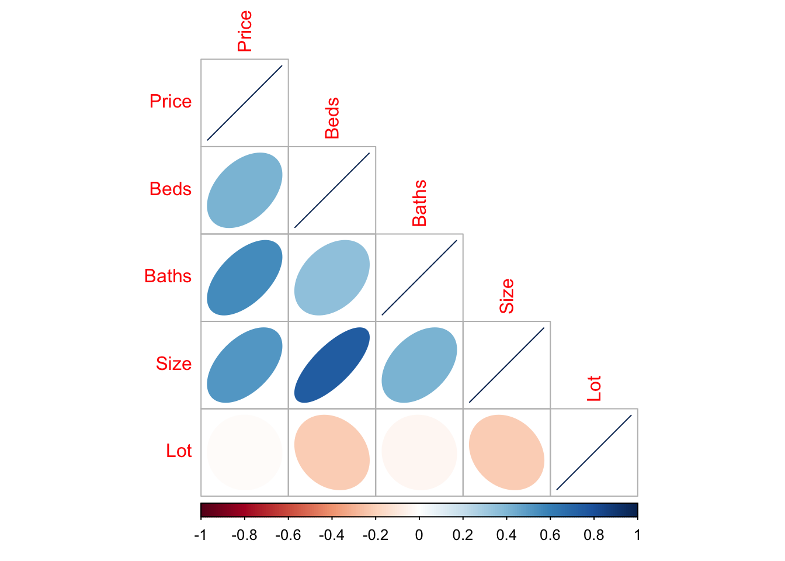</p>
</div>
</div>
<p>There are LOADS of other ways to run correlation plots here: https://www.r-graph-gallery.com/correlogram.html Feel free to choose a favourite.</p>
<p>Importantly, remember back to this website - https://www.tylervigen.com/spurious-correlations. Just because another variable is correlated with our response does not mean it HAS to be in the model. It simply means that you might want to consider whether there is a reason for that correlation.</p>
<p><br> <br></p>
</section>
</section>
</section>
<section id="filtering-and-selecting-data" class="level1">
<h1>Filtering and selecting data</h1>
<section id="selecting-a-specific-column" class="level2">
<h2 class="anchored" data-anchor-id="selecting-a-specific-column">Selecting a specific column</h2>
<p>Here I am using the NYHouses data as an example. Sometimes we want to deal with only one specific column in our spreadsheet/dataframe, for example applying the mean/standard deviation/inter-quartile range command to say just the Price column.</p>
<p>To do this, we use the $ symbol. For example, here I’m simply selecting the data in the elevation column only and saving it to a new variable called elevationdata.</p>
<div class="cell">
<div class="sourceCode cell-code" id="cb84"><pre class="sourceCode r code-with-copy"><code class="sourceCode r"><span id="cb84-1"><a href="#cb84-1" aria-hidden="true" tabindex="-1"></a><span class="fu">data</span>(<span class="st">"HousesNY"</span>)</span>
<span id="cb84-2"><a href="#cb84-2" aria-hidden="true" tabindex="-1"></a>price <span class="ot">&lt;-</span> HousesNY<span class="sc">$</span>Price</span>
<span id="cb84-3"><a href="#cb84-3" aria-hidden="true" tabindex="-1"></a></span>
<span id="cb84-4"><a href="#cb84-4" aria-hidden="true" tabindex="-1"></a>price</span></code><button title="Copy to Clipboard" class="code-copy-button"><i class="bi"></i></button></pre></div>
</div>
<p>Try it yourself. You should have seen that as you typed the $, it gave you all the available column names to choose from.</p>
<p>This means we can now easily summarise specific columns. For example:</p>
<ul>
<li><code>summary(HousesNY)</code> will create a summary of the whole spreadsheet,</li>
<li><code>summary(HousesNY$Price)</code> will only summarise the Price column.<br>
</li>
<li><code>mean(HousesNY$Price)</code> will take the mean of the Price column in the HousesNY dataframe.</li>
</ul>
<p><br></p>
</section>
<section id="Tut7b_table" class="level2">
<h2 class="anchored" data-anchor-id="Tut7b_table">Table command: counts per group</h2>
<p>Sometimes we want to count the occurrences of some category in our dataset. For example, if you look at the HousesNY, it might be interesting to know how many Houses had each number of bedrooms</p>
<p>To do this, we use the table command:</p>
<div class="cell">
<div class="sourceCode cell-code" id="cb85"><pre class="sourceCode r code-with-copy"><code class="sourceCode r"><span id="cb85-1"><a href="#cb85-1" aria-hidden="true" tabindex="-1"></a><span class="fu">table</span>(HousesNY<span class="sc">$</span>Beds)</span></code><button title="Copy to Clipboard" class="code-copy-button"><i class="bi"></i></button></pre></div>
</div>
<p>or to see the number with each combination of bedrooms and bathrooms:</p>
<div class="cell">
<div class="sourceCode cell-code" id="cb86"><pre class="sourceCode r code-with-copy"><code class="sourceCode r"><span id="cb86-1"><a href="#cb86-1" aria-hidden="true" tabindex="-1"></a><span class="fu">table</span>(HousesNY<span class="sc">$</span>Beds, HousesNY<span class="sc">$</span>Baths)</span></code><button title="Copy to Clipboard" class="code-copy-button"><i class="bi"></i></button></pre></div>
</div>
<p>For more, this tutorial is excellent: https://www.cyclismo.org/tutorial/R/tables.html.</p>
<p><br></p>
</section>
<section id="group_by-command-statistics-per-group" class="level2">
<h2 class="anchored" data-anchor-id="group_by-command-statistics-per-group">“Group_by” command: statistics per group</h2>
<p>What if we want to do more than just count the number of rows?</p>
<p>Well, we can use the <code>group_by()</code> and <code>summarise()</code> commands and save our answers to a new variable.</p>
<p>Here we are making use of the pipe symbol, %&gt;%, which takes the answer from group_by and sends it directly to the summarise command.</p>
<p>Here is some data on frost dates at weather stations.</p>
<div class="cell">
<div class="sourceCode cell-code" id="cb87"><pre class="sourceCode r code-with-copy"><code class="sourceCode r"><span id="cb87-1"><a href="#cb87-1" aria-hidden="true" tabindex="-1"></a>frost    <span class="ot">&lt;-</span> readxl<span class="sc">::</span><span class="fu">read_excel</span>(<span class="st">"Data_frostdata.xlsx"</span>)</span>
<span id="cb87-2"><a href="#cb87-2" aria-hidden="true" tabindex="-1"></a><span class="fu">head</span>(frost)</span></code><button title="Copy to Clipboard" class="code-copy-button"><i class="bi"></i></button></pre></div>
<div class="cell-output cell-output-stdout">
<pre><code># A tibble: 6 × 8
  Station    State Type_Fake Avg_DOY_SpringFrost Latit…¹ Longi…² Eleva…³ Dist_…⁴
  &lt;chr&gt;      &lt;chr&gt; &lt;chr&gt;                   &lt;dbl&gt;   &lt;dbl&gt;   &lt;dbl&gt;   &lt;dbl&gt;   &lt;dbl&gt;
1 Valley     AL    City                    110.     34.6   -85.6    1020  295.  
2 Union      AL    City                     82.3    32.0   -85.8     440  122.  
3 Saint      AL    Airport                  99.8    34.2   -86.8     800  252.  
4 Fernandina FL    City                     46.9    30.7   -81.5      13    1.15
5 Lake       FL    City                     60.6    30.2   -82.6     195   63.0 
6 West       GA    City                     85.6    32.9   -85.2     575  187.  
# … with abbreviated variable names ¹​Latitude, ²​Longitude, ³​Elevation,
#   ⁴​Dist_to_Coast</code></pre>
</div>
</div>
<p>To summarise results by the type of weather station:</p>
<div class="cell">
<div class="sourceCode cell-code" id="cb89"><pre class="sourceCode r code-with-copy"><code class="sourceCode r"><span id="cb89-1"><a href="#cb89-1" aria-hidden="true" tabindex="-1"></a>frost.summary.type <span class="ot">&lt;-</span> <span class="fu">group_by</span>(frost, <span class="at">by=</span>Type_Fake) <span class="sc">%&gt;%</span></span>
<span id="cb89-2"><a href="#cb89-2" aria-hidden="true" tabindex="-1"></a>                          <span class="fu">summarise</span>(<span class="fu">mean</span>(Latitude),</span>
<span id="cb89-3"><a href="#cb89-3" aria-hidden="true" tabindex="-1"></a>                                    <span class="fu">max</span>(Latitude),</span>
<span id="cb89-4"><a href="#cb89-4" aria-hidden="true" tabindex="-1"></a>                                    <span class="fu">min</span>(Dist_to_Coast))</span>
<span id="cb89-5"><a href="#cb89-5" aria-hidden="true" tabindex="-1"></a>frost.summary.type</span></code><button title="Copy to Clipboard" class="code-copy-button"><i class="bi"></i></button></pre></div>
<div class="cell-output cell-output-stdout">
<pre><code># A tibble: 3 × 4
  by                            `mean(Latitude)` `max(Latitude)` min(Dist_to_C…¹
  &lt;chr&gt;                                    &lt;dbl&gt;           &lt;dbl&gt;           &lt;dbl&gt;
1 Agricultural_Research_Station             33.7            36.3            4.95
2 Airport                                   34.4            37.3           45.4 
3 City                                      33.7            36.5            1.15
# … with abbreviated variable name ¹​`min(Dist_to_Coast)`</code></pre>
</div>
</div>
<p>Here, my code is:</p>
<ul>
<li>Splitting up the frost data by the Type_Fake column<br>(e.g.&nbsp;one group for City, one for Airport and one for Agricultural Research)</li>
<li>For the data rows in <em>each group</em>, calculating the mean latitude, the maximum latitude and the minimum distance to the coast</li>
<li>Saving the result to a new variable called frost.summary.type.</li>
<li>Printing the results on the screen e.g.&nbsp;the furthest North/maximum latitude of rows tagged Agricultural_Research_Station is 36.32 degrees.</li>
</ul>
</section>
<section id="filtering-rows-and-columns" class="level2">
<h2 class="anchored" data-anchor-id="filtering-rows-and-columns">Filtering rows and columns</h2>
<p>Sometimes, we do not want to analyse at the entire data.frame. Instead, we would like to only look at one (or more) columns or rows.</p>
<p>There are several ways we can select data.</p>
<ul>
<li><p>To choose a specific column, we can use the <code>$</code> symbol to select its name (as described above)</p></li>
<li><p>If you know which number rows or columns you want, you can use <strong>square brackets</strong> to numerically select data.</p></li>
</ul>
<p>Essentially our data follows the format: tablename[ROWS,COLUMNS]</p>
<div class="cell">
<div class="sourceCode cell-code" id="cb91"><pre class="sourceCode r code-with-copy"><code class="sourceCode r"><span id="cb91-1"><a href="#cb91-1" aria-hidden="true" tabindex="-1"></a><span class="co"># This will select the data in the 5th row and 7th column</span></span>
<span id="cb91-2"><a href="#cb91-2" aria-hidden="true" tabindex="-1"></a>frost[<span class="dv">5</span>,<span class="dv">7</span>]</span></code><button title="Copy to Clipboard" class="code-copy-button"><i class="bi"></i></button></pre></div>
<div class="cell-output cell-output-stdout">
<pre><code># A tibble: 1 × 1
  Elevation
      &lt;dbl&gt;
1       195</code></pre>
</div>
<div class="sourceCode cell-code" id="cb93"><pre class="sourceCode r code-with-copy"><code class="sourceCode r"><span id="cb93-1"><a href="#cb93-1" aria-hidden="true" tabindex="-1"></a><span class="co"># This will select the 2nd row and ALL the columns </span></span>
<span id="cb93-2"><a href="#cb93-2" aria-hidden="true" tabindex="-1"></a>frost[<span class="dv">2</span>,]</span></code><button title="Copy to Clipboard" class="code-copy-button"><i class="bi"></i></button></pre></div>
<div class="cell-output cell-output-stdout">
<pre><code># A tibble: 1 × 8
  Station State Type_Fake Avg_DOY_SpringFrost Latitude Longitude Eleva…¹ Dist_…²
  &lt;chr&gt;   &lt;chr&gt; &lt;chr&gt;                   &lt;dbl&gt;    &lt;dbl&gt;     &lt;dbl&gt;   &lt;dbl&gt;   &lt;dbl&gt;
1 Union   AL    City                     82.3     32.0     -85.8     440    122.
# … with abbreviated variable names ¹​Elevation, ²​Dist_to_Coast</code></pre>
</div>
<div class="sourceCode cell-code" id="cb95"><pre class="sourceCode r code-with-copy"><code class="sourceCode r"><span id="cb95-1"><a href="#cb95-1" aria-hidden="true" tabindex="-1"></a><span class="co"># This will select the 3rd column and ALL the rows</span></span>
<span id="cb95-2"><a href="#cb95-2" aria-hidden="true" tabindex="-1"></a>frost[,<span class="dv">3</span>]</span></code><button title="Copy to Clipboard" class="code-copy-button"><i class="bi"></i></button></pre></div>
<div class="cell-output cell-output-stdout">
<pre><code># A tibble: 76 × 1
   Type_Fake                    
   &lt;chr&gt;                        
 1 City                         
 2 City                         
 3 Airport                      
 4 City                         
 5 City                         
 6 City                         
 7 City                         
 8 City                         
 9 Agricultural_Research_Station
10 Agricultural_Research_Station
# … with 66 more rows</code></pre>
</div>
<div class="sourceCode cell-code" id="cb97"><pre class="sourceCode r code-with-copy"><code class="sourceCode r"><span id="cb97-1"><a href="#cb97-1" aria-hidden="true" tabindex="-1"></a><span class="co"># similar to using its name</span></span>
<span id="cb97-2"><a href="#cb97-2" aria-hidden="true" tabindex="-1"></a>frost<span class="sc">$</span>Type_Fake</span></code><button title="Copy to Clipboard" class="code-copy-button"><i class="bi"></i></button></pre></div>
<div class="cell-output cell-output-stdout">
<pre><code> [1] "City"                          "City"                         
 [3] "Airport"                       "City"                         
 [5] "City"                          "City"                         
 [7] "City"                          "City"                         
 [9] "Agricultural_Research_Station" "Agricultural_Research_Station"
[11] "Agricultural_Research_Station" "Airport"                      
[13] "Airport"                       "City"                         
[15] "City"                          "Airport"                      
[17] "City"                          "Airport"                      
[19] "City"                          "Airport"                      
[21] "City"                          "City"                         
[23] "City"                          "Airport"                      
[25] "Agricultural_Research_Station" "City"                         
[27] "City"                          "City"                         
[29] "Airport"                       "Agricultural_Research_Station"
[31] "Airport"                       "City"                         
[33] "City"                          "City"                         
[35] "Airport"                       "Agricultural_Research_Station"
[37] "City"                          "City"                         
[39] "City"                          "Agricultural_Research_Station"
[41] "Agricultural_Research_Station" "City"                         
[43] "City"                          "Airport"                      
[45] "Airport"                       "Airport"                      
[47] "Agricultural_Research_Station" "City"                         
[49] "City"                          "City"                         
[51] "City"                          "Agricultural_Research_Station"
[53] "Agricultural_Research_Station" "Agricultural_Research_Station"
[55] "Airport"                       "City"                         
[57] "Airport"                       "City"                         
[59] "Airport"                       "City"                         
[61] "Agricultural_Research_Station" "Airport"                      
[63] "Agricultural_Research_Station" "City"                         
[65] "City"                          "City"                         
[67] "City"                          "Airport"                      
[69] "Airport"                       "Agricultural_Research_Station"
[71] "Airport"                       "City"                         
[73] "Airport"                       "Airport"                      
[75] "City"                          "Agricultural_Research_Station"</code></pre>
</div>
<div class="sourceCode cell-code" id="cb99"><pre class="sourceCode r code-with-copy"><code class="sourceCode r"><span id="cb99-1"><a href="#cb99-1" aria-hidden="true" tabindex="-1"></a><span class="co"># We can combine our commands, this will print the 13th row of the Longitude column </span></span>
<span id="cb99-2"><a href="#cb99-2" aria-hidden="true" tabindex="-1"></a><span class="co"># (no comma as we're only looking at one column)</span></span>
<span id="cb99-3"><a href="#cb99-3" aria-hidden="true" tabindex="-1"></a>frost<span class="sc">$</span>Longitude[<span class="dv">13</span>]</span></code><button title="Copy to Clipboard" class="code-copy-button"><i class="bi"></i></button></pre></div>
<div class="cell-output cell-output-stdout">
<pre><code>[1] -82.58</code></pre>
</div>
<div class="sourceCode cell-code" id="cb101"><pre class="sourceCode r code-with-copy"><code class="sourceCode r"><span id="cb101-1"><a href="#cb101-1" aria-hidden="true" tabindex="-1"></a><span class="co"># The : symbol lets you choose a sequence of numbers e.g. 1:5 is 1 2 3 4 5</span></span>
<span id="cb101-2"><a href="#cb101-2" aria-hidden="true" tabindex="-1"></a><span class="co"># So this prints out rows 11 to 15 and all the columns</span></span>
<span id="cb101-3"><a href="#cb101-3" aria-hidden="true" tabindex="-1"></a>frost[<span class="dv">11</span><span class="sc">:</span><span class="dv">15</span>,]</span></code><button title="Copy to Clipboard" class="code-copy-button"><i class="bi"></i></button></pre></div>
<div class="cell-output cell-output-stdout">
<pre><code># A tibble: 5 × 8
  Station  State Type_Fake               Avg_D…¹ Latit…² Longi…³ Eleva…⁴ Dist_…⁵
  &lt;chr&gt;    &lt;chr&gt; &lt;chr&gt;                     &lt;dbl&gt;   &lt;dbl&gt;   &lt;dbl&gt;   &lt;dbl&gt;   &lt;dbl&gt;
1 Winthrop SC    Agricultural_Research_…    87.2    34.9   -81.0     690   149. 
2 Little   SC    Airport                    87.7    34.2   -81.4     711   131. 
3 Calhoun  SC    Airport                    91.5    34.1   -82.6     530   164  
4 Clemson  SC    City                       93.6    34.7   -82.8     824   202. 
5 De       FL    City                       71.3    30.7   -86.1     245    29.4
# … with abbreviated variable names ¹​Avg_DOY_SpringFrost, ²​Latitude,
#   ³​Longitude, ⁴​Elevation, ⁵​Dist_to_Coast</code></pre>
</div>
<div class="sourceCode cell-code" id="cb103"><pre class="sourceCode r code-with-copy"><code class="sourceCode r"><span id="cb103-1"><a href="#cb103-1" aria-hidden="true" tabindex="-1"></a><span class="co"># The "c" command allows you to enter whatever numbers you like.  </span></span>
<span id="cb103-2"><a href="#cb103-2" aria-hidden="true" tabindex="-1"></a><span class="co"># So this will print out rows 4,3,7 and the "Elevation" and "Dist_to_Coast" columns</span></span>
<span id="cb103-3"><a href="#cb103-3" aria-hidden="true" tabindex="-1"></a>frost[<span class="fu">c</span>(<span class="dv">4</span>,<span class="dv">3</span>,<span class="dv">7</span>), <span class="fu">c</span>(<span class="st">"Elevation"</span>,<span class="st">"Dist_to_Coast"</span>)]</span></code><button title="Copy to Clipboard" class="code-copy-button"><i class="bi"></i></button></pre></div>
<div class="cell-output cell-output-stdout">
<pre><code># A tibble: 3 × 2
  Elevation Dist_to_Coast
      &lt;dbl&gt;         &lt;dbl&gt;
1        13          1.15
2       800        252.  
3       500        132.  </code></pre>
</div>
</div>
<p>You can also add questions and commands inside the square brackets. For example here is the weather station with the lowest elevation. You can see my command chose BOTH rows where elevation = 10.</p>
<div class="cell">
<div class="sourceCode cell-code" id="cb105"><pre class="sourceCode r code-with-copy"><code class="sourceCode r"><span id="cb105-1"><a href="#cb105-1" aria-hidden="true" tabindex="-1"></a><span class="co"># which row has the lowest elevation</span></span>
<span id="cb105-2"><a href="#cb105-2" aria-hidden="true" tabindex="-1"></a><span class="co"># note the double == (more below)</span></span>
<span id="cb105-3"><a href="#cb105-3" aria-hidden="true" tabindex="-1"></a>row_number <span class="ot">&lt;-</span> <span class="fu">which</span>(frost<span class="sc">$</span>Elevation <span class="sc">==</span> <span class="fu">min</span>(frost<span class="sc">$</span>Elevation))</span>
<span id="cb105-4"><a href="#cb105-4" aria-hidden="true" tabindex="-1"></a></span>
<span id="cb105-5"><a href="#cb105-5" aria-hidden="true" tabindex="-1"></a><span class="co"># choose that row</span></span>
<span id="cb105-6"><a href="#cb105-6" aria-hidden="true" tabindex="-1"></a>loweststtation <span class="ot">&lt;-</span> frost[row_number ,  ]</span>
<span id="cb105-7"><a href="#cb105-7" aria-hidden="true" tabindex="-1"></a>loweststtation</span></code><button title="Copy to Clipboard" class="code-copy-button"><i class="bi"></i></button></pre></div>
<div class="cell-output cell-output-stdout">
<pre><code># A tibble: 2 × 8
  Station     State Type_Fake            Avg_D…¹ Latit…² Longi…³ Eleva…⁴ Dist_…⁵
  &lt;chr&gt;       &lt;chr&gt; &lt;chr&gt;                  &lt;dbl&gt;   &lt;dbl&gt;   &lt;dbl&gt;   &lt;dbl&gt;   &lt;dbl&gt;
1 Charlestown SC    Agricultural_Resear…    84.6    32.8   -79.9      10    4.95
2 Edenton     NC    City                    85.3    36.0   -76.6      10    1.25
# … with abbreviated variable names ¹​Avg_DOY_SpringFrost, ²​Latitude,
#   ³​Longitude, ⁴​Elevation, ⁵​Dist_to_Coast</code></pre>
</div>
</div>
<div class="cell">
<div class="sourceCode cell-code" id="cb107"><pre class="sourceCode r code-with-copy"><code class="sourceCode r"><span id="cb107-1"><a href="#cb107-1" aria-hidden="true" tabindex="-1"></a>seaside <span class="ot">&lt;-</span> frost[<span class="fu">which</span>(frost<span class="sc">$</span>Dist_to_Coast <span class="sc">&lt;</span> <span class="dv">10</span>) ,  ]</span>
<span id="cb107-2"><a href="#cb107-2" aria-hidden="true" tabindex="-1"></a>seaside</span></code><button title="Copy to Clipboard" class="code-copy-button"><i class="bi"></i></button></pre></div>
<div class="cell-output cell-output-stdout">
<pre><code># A tibble: 5 × 8
  Station     State Type_Fake            Avg_D…¹ Latit…² Longi…³ Eleva…⁴ Dist_…⁵
  &lt;chr&gt;       &lt;chr&gt; &lt;chr&gt;                  &lt;dbl&gt;   &lt;dbl&gt;   &lt;dbl&gt;   &lt;dbl&gt;   &lt;dbl&gt;
1 Fernandina  FL    City                    46.9    30.7   -81.5      13    1.15
2 Charlestown SC    Agricultural_Resear…    84.6    32.8   -79.9      10    4.95
3 Edenton     NC    City                    85.3    36.0   -76.6      10    1.25
4 Southport   NC    City                    82.8    33.9   -78.0      20    3.42
5 Brunswick   GA    Agricultural_Resear…    48.4    31.2   -81.5      13    7.18
# … with abbreviated variable names ¹​Avg_DOY_SpringFrost, ²​Latitude,
#   ³​Longitude, ⁴​Elevation, ⁵​Dist_to_Coast</code></pre>
</div>
</div>
</section>
<section id="which-command" class="level2">
<h2 class="anchored" data-anchor-id="which-command">which command</h2>
<p>The which command essentially says “which numbers” meet a certain threshold</p>
<p>e,g,</p>
<div class="cell">
<div class="sourceCode cell-code" id="cb109"><pre class="sourceCode r code-with-copy"><code class="sourceCode r"><span id="cb109-1"><a href="#cb109-1" aria-hidden="true" tabindex="-1"></a>a <span class="ot">&lt;-</span> <span class="dv">100</span><span class="sc">:</span><span class="dv">110</span></span>
<span id="cb109-2"><a href="#cb109-2" aria-hidden="true" tabindex="-1"></a><span class="fu">which</span>(a <span class="sc">&gt;</span> <span class="dv">107</span>)</span></code><button title="Copy to Clipboard" class="code-copy-button"><i class="bi"></i></button></pre></div>
<div class="cell-output cell-output-stdout">
<pre><code>[1]  9 10 11</code></pre>
</div>
</div>
<p>Or which rows:</p>
<div class="cell">
<div class="sourceCode cell-code" id="cb111"><pre class="sourceCode r code-with-copy"><code class="sourceCode r"><span id="cb111-1"><a href="#cb111-1" aria-hidden="true" tabindex="-1"></a>outlier_rows <span class="ot">&lt;-</span> <span class="fu">which</span>(frost<span class="sc">$</span>Dist_to_Coast <span class="sc">&lt;</span> <span class="fl">1.5</span>)</span></code><button title="Copy to Clipboard" class="code-copy-button"><i class="bi"></i></button></pre></div>
</div>
<section id="deleting-rows" class="level3">
<h3 class="anchored" data-anchor-id="deleting-rows">Deleting rows</h3>
<p>Or if you know the row number you can use the minus - sign to remove. Or just filter below.</p>
<div class="cell">
<div class="sourceCode cell-code" id="cb112"><pre class="sourceCode r code-with-copy"><code class="sourceCode r"><span id="cb112-1"><a href="#cb112-1" aria-hidden="true" tabindex="-1"></a><span class="co"># remove row 6 and and overwrite</span></span>
<span id="cb112-2"><a href="#cb112-2" aria-hidden="true" tabindex="-1"></a>frost <span class="ot">&lt;-</span> frost[<span class="sc">-</span><span class="dv">6</span> ,]</span>
<span id="cb112-3"><a href="#cb112-3" aria-hidden="true" tabindex="-1"></a></span>
<span id="cb112-4"><a href="#cb112-4" aria-hidden="true" tabindex="-1"></a><span class="co"># remove columns 4 and 2 and save result to newdata and overwrite</span></span>
<span id="cb112-5"><a href="#cb112-5" aria-hidden="true" tabindex="-1"></a>newdata <span class="ot">&lt;-</span> frost[, <span class="sc">-</span> <span class="fu">c</span>(<span class="dv">2</span>,<span class="dv">4</span>) ]</span></code><button title="Copy to Clipboard" class="code-copy-button"><i class="bi"></i></button></pre></div>
</div>
</section>
<section id="the-dplyr-filter-command-tidyverse" class="level3">
<h3 class="anchored" data-anchor-id="the-dplyr-filter-command-tidyverse">The dplyr filter command (tidyverse)</h3>
<p>Filtering means selecting rows/observations based on their values. To filter in R, use the command <code>filter()</code> from the dplyr package. I tend to write it as <code>dplyr:filter()</code> to force it to be correct.</p>
<p>Here we can apply the filter command to choose specific rows that meet certain criteria</p>
<div class="cell">
<div class="sourceCode cell-code" id="cb113"><pre class="sourceCode r code-with-copy"><code class="sourceCode r"><span id="cb113-1"><a href="#cb113-1" aria-hidden="true" tabindex="-1"></a><span class="fu">filter</span>(frost, State <span class="sc">==</span> <span class="st">"FL"</span>)</span></code><button title="Copy to Clipboard" class="code-copy-button"><i class="bi"></i></button></pre></div>
</div>
<p>The double equal operator <code>==</code> means equal to. The command is telling R to keep the rows in <em>frost</em> where the <em>State</em> column equals “FL”.</p>
<p>If you want a few categories, choose the %in% operator, using the <code>c()</code> command to stick together the categories you want. For example, here are states in Florida and Virginia.</p>
<div class="cell">
<div class="sourceCode cell-code" id="cb114"><pre class="sourceCode r code-with-copy"><code class="sourceCode r"><span id="cb114-1"><a href="#cb114-1" aria-hidden="true" tabindex="-1"></a><span class="fu">filter</span>(frost, State <span class="sc">%in%</span> <span class="fu">c</span>(<span class="st">"FL"</span>,<span class="st">"VA"</span>))</span></code><button title="Copy to Clipboard" class="code-copy-button"><i class="bi"></i></button></pre></div>
</div>
<p>We can also explicitly exclude cases and keep everything else by using the not equal operator <code>!=</code>. The following code <em>excludes</em> airport stations.</p>
<div class="cell">
<div class="sourceCode cell-code" id="cb115"><pre class="sourceCode r code-with-copy"><code class="sourceCode r"><span id="cb115-1"><a href="#cb115-1" aria-hidden="true" tabindex="-1"></a><span class="fu">filter</span>(frost, Type_Fake <span class="sc">!=</span> <span class="st">"Airport"</span>)</span></code><button title="Copy to Clipboard" class="code-copy-button"><i class="bi"></i></button></pre></div>
</div>
<p>What about filtering if a row has a value greater than a specified value? For example, Stations with an elevation greater than 500 feet?</p>
<div class="cell">
<div class="sourceCode cell-code" id="cb116"><pre class="sourceCode r code-with-copy"><code class="sourceCode r"><span id="cb116-1"><a href="#cb116-1" aria-hidden="true" tabindex="-1"></a><span class="fu">filter</span>(frost, Elevation <span class="sc">&gt;</span> <span class="dv">500</span>)</span></code><button title="Copy to Clipboard" class="code-copy-button"><i class="bi"></i></button></pre></div>
</div>
<p>Or less-than-or-equal-to 200 feet.</p>
<div class="cell">
<div class="sourceCode cell-code" id="cb117"><pre class="sourceCode r code-with-copy"><code class="sourceCode r"><span id="cb117-1"><a href="#cb117-1" aria-hidden="true" tabindex="-1"></a><span class="co"># or save the result to a new variable</span></span>
<span id="cb117-2"><a href="#cb117-2" aria-hidden="true" tabindex="-1"></a>lowland_stations <span class="ot">&lt;-</span> <span class="fu">filter</span>(frost, Elevation <span class="sc">&lt;</span> <span class="dv">200</span>)</span>
<span id="cb117-3"><a href="#cb117-3" aria-hidden="true" tabindex="-1"></a><span class="fu">summary</span>(lowland_stations)</span></code><button title="Copy to Clipboard" class="code-copy-button"><i class="bi"></i></button></pre></div>
</div>
<p><br></p>
<p>In addition to comparison operators, filtering may also utilize logical operators that make multiple selections. There are three basic logical operators: <code>&amp;</code> (and), <code>|</code> (or), and <code>!</code> (not). We can keep Stations with an <em>Elevation</em> greater than 300 <strong>and</strong> <em>State</em> in Alabama <code>&amp;</code>.</p>
<div class="cell">
<div class="sourceCode cell-code" id="cb118"><pre class="sourceCode r code-with-copy"><code class="sourceCode r"><span id="cb118-1"><a href="#cb118-1" aria-hidden="true" tabindex="-1"></a><span class="fu">filter</span>(frost, Elevation <span class="sc">&gt;</span> <span class="dv">300</span> <span class="sc">&amp;</span> State <span class="sc">==</span> <span class="st">"AL"</span>)</span></code><button title="Copy to Clipboard" class="code-copy-button"><i class="bi"></i></button></pre></div>
</div>
<p>Use <code>|</code> to keep Stations with a <em>Type_Fake</em> of “Airport” <strong>or</strong> a last spring frost date after April (~ day 90 of the year).</p>
<div class="cell">
<div class="sourceCode cell-code" id="cb119"><pre class="sourceCode r code-with-copy"><code class="sourceCode r"><span id="cb119-1"><a href="#cb119-1" aria-hidden="true" tabindex="-1"></a><span class="fu">filter</span>(frost, Type_Fake <span class="sc">==</span> <span class="st">"Airport"</span> <span class="sc">|</span> Avg_DOY_SpringFrost <span class="sc">&gt;</span> <span class="dv">90</span> )</span></code><button title="Copy to Clipboard" class="code-copy-button"><i class="bi"></i></button></pre></div>
</div>
</section>
<section id="the-dplyr-arrange-command-tidyverse" class="level3">
<h3 class="anchored" data-anchor-id="the-dplyr-arrange-command-tidyverse">The dplyr arrange command (tidyverse)</h3>
<p><br>
</p>
<p>We use the <code>arrange()</code> function to sort a data frame by one or more variables. You might want to do this to get a sense of which cases have the highest or lowest values in your data set or sort counties by their name. For example, let’s sort in ascending order by elevation.</p>
<div class="cell">
<div class="sourceCode cell-code" id="cb120"><pre class="sourceCode r code-with-copy"><code class="sourceCode r"><span id="cb120-1"><a href="#cb120-1" aria-hidden="true" tabindex="-1"></a><span class="fu">arrange</span>(frost, Latitude)</span></code><button title="Copy to Clipboard" class="code-copy-button"><i class="bi"></i></button></pre></div>
<div class="cell-output cell-output-stdout">
<pre><code># A tibble: 75 × 8
   Station     State Type_Fake           Avg_D…¹ Latit…² Longi…³ Eleva…⁴ Dist_…⁵
   &lt;chr&gt;       &lt;chr&gt; &lt;chr&gt;                 &lt;dbl&gt;   &lt;dbl&gt;   &lt;dbl&gt;   &lt;dbl&gt;   &lt;dbl&gt;
 1 Inverness   FL    City                   50.6    28.8   -82.3      40   20.5 
 2 Ocala       FL    City                   52.7    29.2   -82.1      75   41.6 
 3 Lake        FL    City                   60.6    30.2   -82.6     195   63.0 
 4 Tallahassee FL    Agricultural_Resea…    75.8    30.4   -84.4      55   23.2 
 5 Fernandina  FL    City                   46.9    30.7   -81.5      13    1.15
 6 De          FL    City                   71.3    30.7   -86.1     245   29.4 
 7 Quitman     GA    City                   65.5    30.8   -83.6     185   56.4 
 8 Brunswick   GA    Agricultural_Resea…    48.4    31.2   -81.5      13    7.18
 9 Waycross    GA    Agricultural_Resea…    75.9    31.2   -82.3     145   52.4 
10 Tifton      GA    City                   87.3    31.4   -83.5     380  101.  
# … with 65 more rows, and abbreviated variable names ¹​Avg_DOY_SpringFrost,
#   ²​Latitude, ³​Longitude, ⁴​Elevation, ⁵​Dist_to_Coast</code></pre>
</div>
</div>
<p>By default, <code>arrange()</code> sorts in ascending order. We can sort by a variable in descending order by using the <code>desc()</code> function on the variable we want to sort by. For example, to sort the dataframe by <em>Avg_DOY_SpringFrost</em> in descending order we use</p>
<div class="cell">
<div class="sourceCode cell-code" id="cb122"><pre class="sourceCode r code-with-copy"><code class="sourceCode r"><span id="cb122-1"><a href="#cb122-1" aria-hidden="true" tabindex="-1"></a><span class="fu">arrange</span>(frost, <span class="fu">desc</span>(Avg_DOY_SpringFrost))</span></code><button title="Copy to Clipboard" class="code-copy-button"><i class="bi"></i></button></pre></div>
<div class="cell-output cell-output-stdout">
<pre><code># A tibble: 75 × 8
   Station        State Type_Fake        Avg_D…¹ Latit…² Longi…³ Eleva…⁴ Dist_…⁵
   &lt;chr&gt;          &lt;chr&gt; &lt;chr&gt;              &lt;dbl&gt;   &lt;dbl&gt;   &lt;dbl&gt;   &lt;dbl&gt;   &lt;dbl&gt;
 1 Marshall       NC    Airport             118.    35.8   -82.7    2000   258. 
 2 Highlands      NC    Agricultural_Re…    118.    35.0   -83.2    3333   235. 
 3 Mt             NC    City                113.    36.5   -80.6    1041   216. 
 4 Louisburg      NC    City                113.    36.1   -78.3     260    88.5
 5 Rocky          VA    Airport             111.    37.0   -79.9    1315   180. 
 6 Henderson      NC    Agricultural_Re…    111.    36.3   -78.4     512    97.9
 7 Farmville      VA    Airport             111.    37.3   -78.4     450    97.1
 8 Statesville    NC    City                110.    35.8   -80.9     951   185. 
 9 Valley         AL    City                110.    34.6   -85.6    1020   295. 
10 Hendersonville NC    Agricultural_Re…    110.    35.3   -82.4    2160   227. 
# … with 65 more rows, and abbreviated variable names ¹​Avg_DOY_SpringFrost,
#   ²​Latitude, ³​Longitude, ⁴​Elevation, ⁵​Dist_to_Coast</code></pre>
</div>
</div>
<p><br> <br></p>
</section>
</section>
</section>
<section id="making-plots" class="level1">
<h1>Making plots</h1>
<section id="where-to-get-plot-code-and-examples" class="level2">
<h2 class="anchored" data-anchor-id="where-to-get-plot-code-and-examples">Where to get plot code and examples</h2>
<p>There are three places I visit constantly:</p>
<ul>
<li>https://r-charts.com/distribution/</li>
<li>https://www.r-graph-gallery.com/</li>
<li>https://flowingdata.com/</li>
</ul>
<p>For plots, we have <em>many</em> choices. We can use what is built into R, or.. use the ggplot system where you add on layers to your plot using the + symbol, or use specialist packages such as ggstatplot or beeswarm.</p>
<p>If you are new to data visualisation, read these two articles</p>
<ul>
<li>https://flowingdata.com/2014/10/23/moving-past-default-charts/</li>
<li>https://flowingdata.com/2012/05/15/how-to-visualize-and-compare-distributions/</li>
</ul>
</section>
<section id="how-to-decide-what-to-do" class="level2">
<h2 class="anchored" data-anchor-id="how-to-decide-what-to-do">How to decide what to do</h2>
<p>Plots are designed to do two things, allow you to see something in the data that you couldn’t see in the numbers, plus communicate output in a compelling way. Going beyond the basics or knowing the limitations of a plot will help you do this, so in these examples I have provided a range of complexity.</p>
<p>So far, I have focused on plots that slow you to visualise the distribution of your response variable. You do not need to use them all! Choose ones that work for you and your data.</p>
<ol type="1">
<li>Boxplots</li>
<li>Histograms</li>
<li>Violin plots (half boxplot half histogram)</li>
<li>Beeswarm</li>
</ol>
</section>
<section id="boxplots" class="level2">
<h2 class="anchored" data-anchor-id="boxplots">Boxplots</h2>
<p>Boxplots have been around over 40 years! See their history and evolution here: http://vita.had.co.nz/papers/boxplots.pdf</p>
<p>In terms of your reports, you need to think of 3 things: - Why you are making the plot (quick look vs publication worthy final graphic) - What aspects of the data do you want to highlight (lots of data, comparing groups, weird distributions..) - What are your final requirements and personal style (colorblind friendly, you’re drawn to a certain type of plot..)</p>
<p>So for boxplots.. they are especially good at allowing you to compare different groups of things or to look for multiple groups in a single response variable. Here is a beautiful example made by Marcus Beckman on dissertation lengths (description here: https://beckmw.wordpress.com/2014/07/15/average-dissertation-and-thesis-length-take-two/ and code here: https://github.com/fawda123/diss_proc )</p>
<p>If there are only one or two variables, I often jump to the violin or histogram plots as they show more detail.</p>
<p>So.. how to make these yourselves. You have a range of options!</p>
<section id="basics-single-boxplot" class="level3">
<h3 class="anchored" data-anchor-id="basics-single-boxplot">Basics (single boxplot)</h3>
<p>Here is the most basic boxplot you can make. I often start with this for my own use when exploring the data, then later decide which plots to “make pretty”.</p>
<div class="cell">
<div class="sourceCode cell-code" id="cb124"><pre class="sourceCode r code-with-copy"><code class="sourceCode r"><span id="cb124-1"><a href="#cb124-1" aria-hidden="true" tabindex="-1"></a><span class="fu">boxplot</span>(HousesNY<span class="sc">$</span>Price)</span></code><button title="Copy to Clipboard" class="code-copy-button"><i class="bi"></i></button></pre></div>
<div class="cell-output-display">
<p>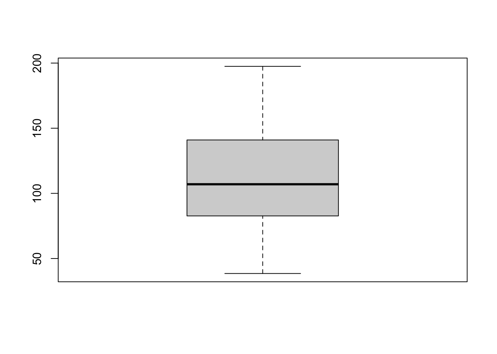</p>
</div>
</div>
<p>We can make better boxplots in base R (e.g.&nbsp;using no special packages/libraries). See this tutorial for all the details: https://www.datamentor.io/r-programming/box-plot/ which goes through exactly what each line means.</p>
<div class="cell">
<div class="sourceCode cell-code" id="cb125"><pre class="sourceCode r code-with-copy"><code class="sourceCode r"><span id="cb125-1"><a href="#cb125-1" aria-hidden="true" tabindex="-1"></a><span class="co"># one big command on separate lines</span></span>
<span id="cb125-2"><a href="#cb125-2" aria-hidden="true" tabindex="-1"></a><span class="fu">boxplot</span>(HousesNY<span class="sc">$</span>Price,</span>
<span id="cb125-3"><a href="#cb125-3" aria-hidden="true" tabindex="-1"></a>        <span class="at">main =</span> <span class="st">"House prices of Canton NY sample"</span>,</span>
<span id="cb125-4"><a href="#cb125-4" aria-hidden="true" tabindex="-1"></a>        <span class="at">xlab =</span> <span class="st">"Price (Thousand USD)"</span>,</span>
<span id="cb125-5"><a href="#cb125-5" aria-hidden="true" tabindex="-1"></a>        <span class="at">col =</span> <span class="st">"light blue"</span>,</span>
<span id="cb125-6"><a href="#cb125-6" aria-hidden="true" tabindex="-1"></a>        <span class="at">border =</span> <span class="st">"dark blue"</span>,</span>
<span id="cb125-7"><a href="#cb125-7" aria-hidden="true" tabindex="-1"></a>        <span class="at">horizontal =</span> <span class="cn">TRUE</span>,</span>
<span id="cb125-8"><a href="#cb125-8" aria-hidden="true" tabindex="-1"></a>        <span class="at">notch =</span> <span class="cn">TRUE</span>)</span></code><button title="Copy to Clipboard" class="code-copy-button"><i class="bi"></i></button></pre></div>
<div class="cell-output-display">
<p></p>
</div>
</div>
<p>There are specific plotting packages, the most famous being ggplot2 (there are data camp courses on it). The absolute basics. Here x is blank because we just want to look at the price column alone.</p>
<div class="cell">
<div class="sourceCode cell-code" id="cb126"><pre class="sourceCode r code-with-copy"><code class="sourceCode r"><span id="cb126-1"><a href="#cb126-1" aria-hidden="true" tabindex="-1"></a><span class="fu">library</span>(ggplot2)</span>
<span id="cb126-2"><a href="#cb126-2" aria-hidden="true" tabindex="-1"></a></span>
<span id="cb126-3"><a href="#cb126-3" aria-hidden="true" tabindex="-1"></a><span class="fu">ggplot</span>(HousesNY, <span class="fu">aes</span>(<span class="at">x =</span><span class="st">""</span>, <span class="at">y =</span> Price)) <span class="sc">+</span>    <span class="do">## this loads the data</span></span>
<span id="cb126-4"><a href="#cb126-4" aria-hidden="true" tabindex="-1"></a>   <span class="fu">geom_boxplot</span>()                            <span class="do">## and we choose a boxplot</span></span></code><button title="Copy to Clipboard" class="code-copy-button"><i class="bi"></i></button></pre></div>
<div class="cell-output-display">
<p></p>
</div>
</div>
<p>Note for now, think of the %&gt;% symbol and + symbol also as “one command on multiple lines..”. They allow you to build up layers of the plot. Data camp has more on this.</p>
<p>But with these we can easily do more sophisticated things. For example, here’s how to see the underlying data, which allows us to see something of the background distribution</p>
<p>https://r-charts.com/distribution/box-plot-jitter-ggplot2/</p>
<div class="cell">
<div class="sourceCode cell-code" id="cb127"><pre class="sourceCode r code-with-copy"><code class="sourceCode r"><span id="cb127-1"><a href="#cb127-1" aria-hidden="true" tabindex="-1"></a><span class="co"># Basic box plot</span></span>
<span id="cb127-2"><a href="#cb127-2" aria-hidden="true" tabindex="-1"></a><span class="fu">ggplot</span>(HousesNY, <span class="fu">aes</span>(<span class="at">x =</span> <span class="st">""</span>, <span class="at">y =</span> Price)) <span class="sc">+</span> </span>
<span id="cb127-3"><a href="#cb127-3" aria-hidden="true" tabindex="-1"></a>  <span class="fu">geom_boxplot</span>() <span class="sc">+</span></span>
<span id="cb127-4"><a href="#cb127-4" aria-hidden="true" tabindex="-1"></a>  <span class="fu">geom_jitter</span>()</span></code><button title="Copy to Clipboard" class="code-copy-button"><i class="bi"></i></button></pre></div>
<div class="cell-output-display">
<p>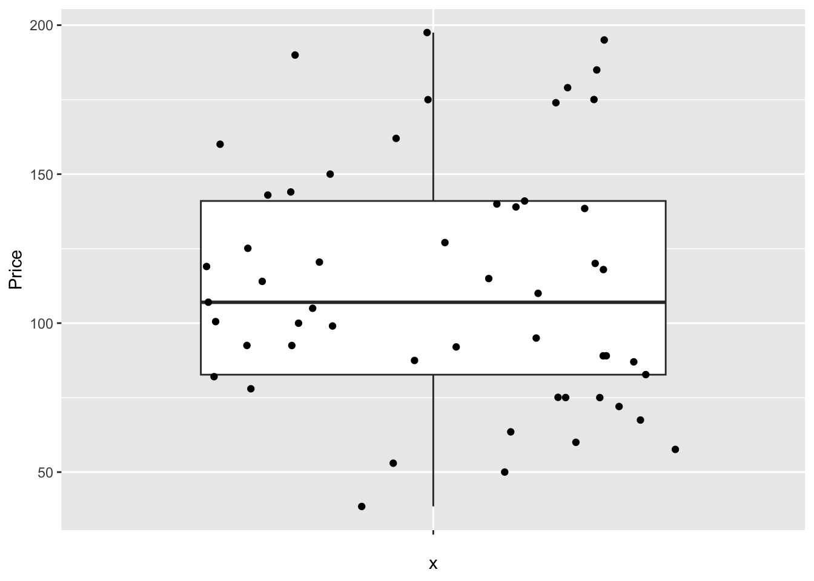</p>
</div>
</div>
</section>
<section id="comparing-groups" class="level3">
<h3 class="anchored" data-anchor-id="comparing-groups">Comparing groups</h3>
<p>The basic code to see a boxplot split by group, in this case the price per number of beds:</p>
<div class="cell">
<div class="sourceCode cell-code" id="cb128"><pre class="sourceCode r code-with-copy"><code class="sourceCode r"><span id="cb128-1"><a href="#cb128-1" aria-hidden="true" tabindex="-1"></a><span class="fu">boxplot</span>(HousesNY<span class="sc">$</span>Price <span class="sc">~</span> HousesNY<span class="sc">$</span>Beds)</span></code><button title="Copy to Clipboard" class="code-copy-button"><i class="bi"></i></button></pre></div>
<div class="cell-output-display">
<p></p>
</div>
</div>
<p>The advantage of this is that you can be sure that you really did plot your columns of choice (e.g.&nbsp;you didn’t mistakenly label anything). Note, if you use a comma, rather than the “~” symbol, you will make one for each column - which is normally not useful!</p>
<div class="cell">
<div class="sourceCode cell-code" id="cb129"><pre class="sourceCode r code-with-copy"><code class="sourceCode r"><span id="cb129-1"><a href="#cb129-1" aria-hidden="true" tabindex="-1"></a><span class="fu">boxplot</span>(HousesNY<span class="sc">$</span>Price,  HousesNY<span class="sc">$</span>Beds)</span></code><button title="Copy to Clipboard" class="code-copy-button"><i class="bi"></i></button></pre></div>
<div class="cell-output-display">
<p>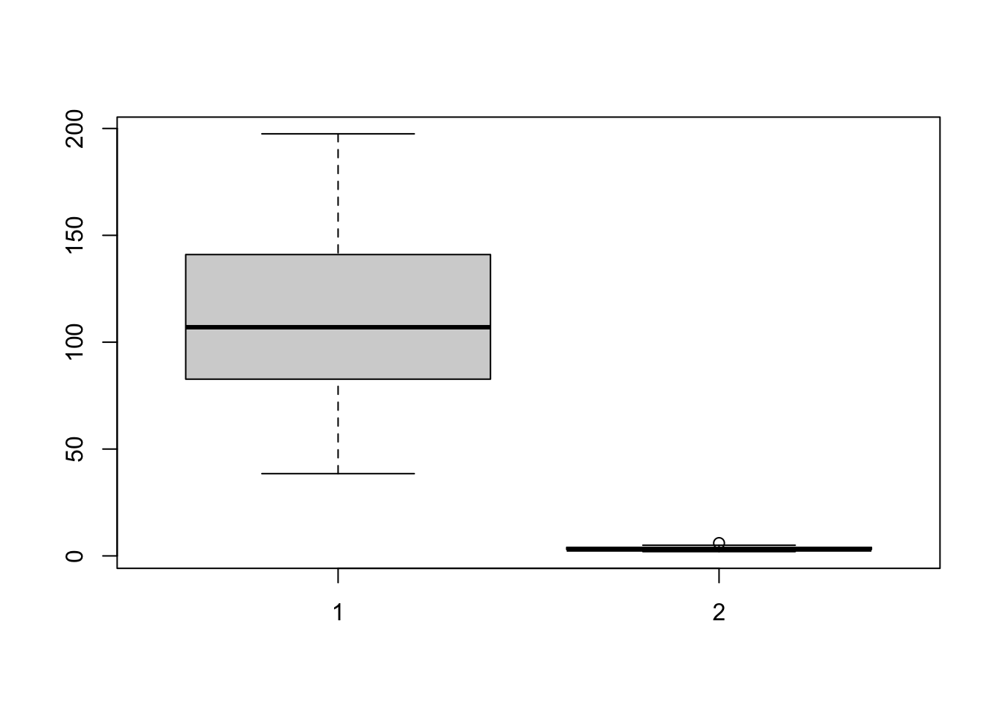</p>
</div>
</div>
<p><br></p>
<p>In GGplot comparing different groups:</p>
<div class="cell">
<div class="sourceCode cell-code" id="cb130"><pre class="sourceCode r code-with-copy"><code class="sourceCode r"><span id="cb130-1"><a href="#cb130-1" aria-hidden="true" tabindex="-1"></a><span class="co"># Libraries</span></span>
<span id="cb130-2"><a href="#cb130-2" aria-hidden="true" tabindex="-1"></a><span class="fu">library</span>(tidyverse)</span>
<span id="cb130-3"><a href="#cb130-3" aria-hidden="true" tabindex="-1"></a><span class="fu">library</span>(hrbrthemes)</span></code><button title="Copy to Clipboard" class="code-copy-button"><i class="bi"></i></button></pre></div>
<div class="cell-output cell-output-stderr">
<pre><code>NOTE: Either Arial Narrow or Roboto Condensed fonts are required to use these themes.</code></pre>
</div>
<div class="cell-output cell-output-stderr">
<pre><code>      Please use hrbrthemes::import_roboto_condensed() to install Roboto Condensed and</code></pre>
</div>
<div class="cell-output cell-output-stderr">
<pre><code>      if Arial Narrow is not on your system, please see https://bit.ly/arialnarrow</code></pre>
</div>
<div class="sourceCode cell-code" id="cb134"><pre class="sourceCode r code-with-copy"><code class="sourceCode r"><span id="cb134-1"><a href="#cb134-1" aria-hidden="true" tabindex="-1"></a><span class="fu">library</span>(viridis)</span>
<span id="cb134-2"><a href="#cb134-2" aria-hidden="true" tabindex="-1"></a></span>
<span id="cb134-3"><a href="#cb134-3" aria-hidden="true" tabindex="-1"></a><span class="co"># tell R that the beds column is categorical</span></span>
<span id="cb134-4"><a href="#cb134-4" aria-hidden="true" tabindex="-1"></a>HousesNY<span class="sc">$</span>Beds <span class="ot">&lt;-</span> <span class="fu">factor</span>(HousesNY<span class="sc">$</span>Beds,</span>
<span id="cb134-5"><a href="#cb134-5" aria-hidden="true" tabindex="-1"></a>                     <span class="at">levels=</span><span class="fu">c</span>(<span class="fu">min</span>(HousesNY<span class="sc">$</span>Beds)<span class="sc">:</span><span class="fu">max</span>(HousesNY<span class="sc">$</span>Beds)))</span>
<span id="cb134-6"><a href="#cb134-6" aria-hidden="true" tabindex="-1"></a></span>
<span id="cb134-7"><a href="#cb134-7" aria-hidden="true" tabindex="-1"></a><span class="co"># Plot</span></span>
<span id="cb134-8"><a href="#cb134-8" aria-hidden="true" tabindex="-1"></a>  <span class="fu">ggplot</span>(HousesNY, <span class="fu">aes</span>(<span class="at">x=</span>Beds, <span class="at">y=</span>Price)) <span class="sc">+</span></span>
<span id="cb134-9"><a href="#cb134-9" aria-hidden="true" tabindex="-1"></a>    <span class="fu">geom_boxplot</span>() </span></code><button title="Copy to Clipboard" class="code-copy-button"><i class="bi"></i></button></pre></div>
<div class="cell-output-display">
<p>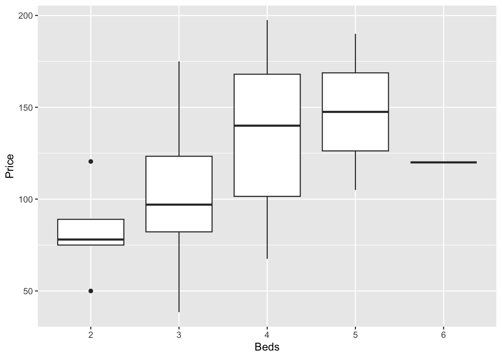</p>
</div>
</div>
<p>Or getting more complex</p>
<div class="cell">
<div class="sourceCode cell-code" id="cb135"><pre class="sourceCode r code-with-copy"><code class="sourceCode r"><span id="cb135-1"><a href="#cb135-1" aria-hidden="true" tabindex="-1"></a><span class="co"># Libraries</span></span>
<span id="cb135-2"><a href="#cb135-2" aria-hidden="true" tabindex="-1"></a><span class="fu">library</span>(tidyverse)</span>
<span id="cb135-3"><a href="#cb135-3" aria-hidden="true" tabindex="-1"></a><span class="fu">library</span>(hrbrthemes)</span>
<span id="cb135-4"><a href="#cb135-4" aria-hidden="true" tabindex="-1"></a><span class="fu">library</span>(viridis)</span>
<span id="cb135-5"><a href="#cb135-5" aria-hidden="true" tabindex="-1"></a></span>
<span id="cb135-6"><a href="#cb135-6" aria-hidden="true" tabindex="-1"></a><span class="co"># tell R that the beds column is categorical</span></span>
<span id="cb135-7"><a href="#cb135-7" aria-hidden="true" tabindex="-1"></a><span class="co"># I already did this in the table section</span></span>
<span id="cb135-8"><a href="#cb135-8" aria-hidden="true" tabindex="-1"></a><span class="co">#HousesNY$Beds &lt;- as.factor(HousesNY$Beds)</span></span>
<span id="cb135-9"><a href="#cb135-9" aria-hidden="true" tabindex="-1"></a></span>
<span id="cb135-10"><a href="#cb135-10" aria-hidden="true" tabindex="-1"></a><span class="co"># Plot</span></span>
<span id="cb135-11"><a href="#cb135-11" aria-hidden="true" tabindex="-1"></a>HousesNY <span class="sc">%&gt;%</span></span>
<span id="cb135-12"><a href="#cb135-12" aria-hidden="true" tabindex="-1"></a>  <span class="fu">ggplot</span>( <span class="fu">aes</span>(<span class="at">x=</span>Beds, <span class="at">y=</span>Price, <span class="at">fill=</span>Beds) )<span class="sc">+</span></span>
<span id="cb135-13"><a href="#cb135-13" aria-hidden="true" tabindex="-1"></a>    <span class="fu">geom_boxplot</span>() <span class="sc">+</span></span>
<span id="cb135-14"><a href="#cb135-14" aria-hidden="true" tabindex="-1"></a>    <span class="fu">scale_fill_viridis</span>(<span class="at">discrete =</span> <span class="cn">TRUE</span>, <span class="at">alpha=</span><span class="fl">0.6</span>) <span class="sc">+</span></span>
<span id="cb135-15"><a href="#cb135-15" aria-hidden="true" tabindex="-1"></a>    <span class="fu">geom_jitter</span>(<span class="at">color=</span><span class="st">"black"</span>, <span class="at">size=</span><span class="fl">0.5</span>, <span class="at">alpha=</span><span class="fl">0.8</span>) <span class="sc">+</span></span>
<span id="cb135-16"><a href="#cb135-16" aria-hidden="true" tabindex="-1"></a>    <span class="fu">ggtitle</span>(<span class="st">""</span>) <span class="sc">+</span></span>
<span id="cb135-17"><a href="#cb135-17" aria-hidden="true" tabindex="-1"></a>    <span class="fu">xlab</span>(<span class="st">"Beds"</span>)</span></code><button title="Copy to Clipboard" class="code-copy-button"><i class="bi"></i></button></pre></div>
<div class="cell-output-display">
<p>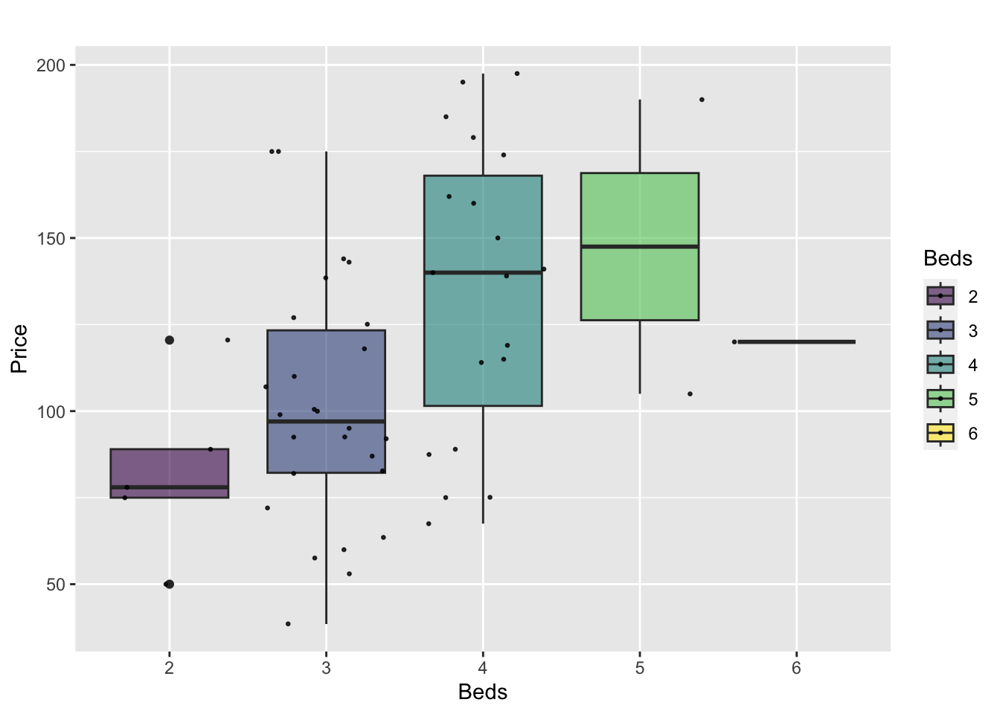</p>
</div>
</div>
<p>or dotplots..</p>
<div class="cell">
<div class="sourceCode cell-code" id="cb136"><pre class="sourceCode r code-with-copy"><code class="sourceCode r"><span id="cb136-1"><a href="#cb136-1" aria-hidden="true" tabindex="-1"></a><span class="fu">ggplot</span>(HousesNY,  <span class="fu">aes</span>(<span class="at">x=</span>Beds, <span class="at">y=</span>Price, <span class="at">fill=</span>Beds)) <span class="sc">+</span></span>
<span id="cb136-2"><a href="#cb136-2" aria-hidden="true" tabindex="-1"></a>  <span class="fu">geom_boxplot</span>() <span class="sc">+</span></span>
<span id="cb136-3"><a href="#cb136-3" aria-hidden="true" tabindex="-1"></a>  <span class="fu">geom_dotplot</span>(<span class="at">binaxis =</span> <span class="st">"y"</span>, <span class="at">stackdir =</span> <span class="st">"center"</span>, <span class="at">dotsize =</span> <span class="fl">0.5</span>,<span class="at">binwidth=</span><span class="dv">7</span>)</span></code><button title="Copy to Clipboard" class="code-copy-button"><i class="bi"></i></button></pre></div>
<div class="cell-output-display">
<p></p>
</div>
</div>
<p>There are MANY more options, plus code here: https://www.r-graph-gallery.com/boxplot.html</p>
<p>and a delightful tutorial here: https://www.r-bloggers.com/2021/11/how-to-make-stunning-boxplots-in-r-a-complete-guide-with-ggplot2/</p>
</section>
<section id="sophisticated" class="level3">
<h3 class="anchored" data-anchor-id="sophisticated">Sophisticated</h3>
<p>Finally, we <em>can</em> get super fancy in base R - it’s often a good way to learn how to code. I like this example because it shows many different aspects/useful commands in R programming. http://www.opiniomics.org/beautiful-boxplots-in-base-r/</p>
<div class="cell">
<div class="sourceCode cell-code" id="cb137"><pre class="sourceCode r code-with-copy"><code class="sourceCode r"><span id="cb137-1"><a href="#cb137-1" aria-hidden="true" tabindex="-1"></a><span class="fu">library</span>(RColorBrewer)</span>
<span id="cb137-2"><a href="#cb137-2" aria-hidden="true" tabindex="-1"></a></span>
<span id="cb137-3"><a href="#cb137-3" aria-hidden="true" tabindex="-1"></a><span class="co"># create colours and colour matrix (for points)</span></span>
<span id="cb137-4"><a href="#cb137-4" aria-hidden="true" tabindex="-1"></a>m     <span class="ot">&lt;-</span> <span class="fu">as.matrix</span>(HousesNY<span class="sc">$</span>Price)</span>
<span id="cb137-5"><a href="#cb137-5" aria-hidden="true" tabindex="-1"></a></span>
<span id="cb137-6"><a href="#cb137-6" aria-hidden="true" tabindex="-1"></a>col_main   <span class="ot">&lt;-</span> <span class="fu">colorRampPalette</span>(<span class="fu">brewer.pal</span>(<span class="dv">12</span>, <span class="st">"Set3"</span>), <span class="at">alpha=</span><span class="cn">TRUE</span>)(<span class="fu">ncol</span>(m))</span>
<span id="cb137-7"><a href="#cb137-7" aria-hidden="true" tabindex="-1"></a>col_transp <span class="ot">&lt;-</span> colorspace<span class="sc">::</span><span class="fu">adjust_transparency</span>(col_main, <span class="at">alpha =</span> .<span class="dv">3</span>)</span>
<span id="cb137-8"><a href="#cb137-8" aria-hidden="true" tabindex="-1"></a></span>
<span id="cb137-9"><a href="#cb137-9" aria-hidden="true" tabindex="-1"></a>colsm   <span class="ot">&lt;-</span><span class="fu">matrix</span>(<span class="fu">rep</span>(col_main, <span class="at">each=</span><span class="fu">nrow</span>(m)), <span class="at">ncol=</span><span class="fu">ncol</span>(m))</span>
<span id="cb137-10"><a href="#cb137-10" aria-hidden="true" tabindex="-1"></a>colsm_tr <span class="ot">&lt;-</span><span class="fu">matrix</span>(<span class="fu">rep</span>(col_transp, <span class="at">each=</span><span class="fu">nrow</span>(m)), <span class="at">ncol=</span><span class="fu">ncol</span>(m))</span>
<span id="cb137-11"><a href="#cb137-11" aria-hidden="true" tabindex="-1"></a></span>
<span id="cb137-12"><a href="#cb137-12" aria-hidden="true" tabindex="-1"></a></span>
<span id="cb137-13"><a href="#cb137-13" aria-hidden="true" tabindex="-1"></a><span class="co"># create some random data for jitter</span></span>
<span id="cb137-14"><a href="#cb137-14" aria-hidden="true" tabindex="-1"></a>r <span class="ot">&lt;-</span>  (<span class="fu">matrix</span>(<span class="fu">runif</span>(<span class="fu">nrow</span>(m)<span class="sc">*</span><span class="fu">ncol</span>(m)), <span class="at">nrow=</span><span class="fu">nrow</span>(m), <span class="at">ncol=</span><span class="fu">ncol</span>(m)) <span class="sc">/</span> <span class="dv">2</span>) <span class="sc">-</span> <span class="fl">0.25</span></span>
<span id="cb137-15"><a href="#cb137-15" aria-hidden="true" tabindex="-1"></a></span>
<span id="cb137-16"><a href="#cb137-16" aria-hidden="true" tabindex="-1"></a><span class="co"># get the greys (stolen from https://github.com/zonination/perceptions/blob/master/percept.R)</span></span>
<span id="cb137-17"><a href="#cb137-17" aria-hidden="true" tabindex="-1"></a>palette <span class="ot">&lt;-</span> <span class="fu">brewer.pal</span>(<span class="st">"Greys"</span>, <span class="at">n=</span><span class="dv">9</span>)</span>
<span id="cb137-18"><a href="#cb137-18" aria-hidden="true" tabindex="-1"></a>color.background <span class="ot">=</span> palette[<span class="dv">2</span>]</span>
<span id="cb137-19"><a href="#cb137-19" aria-hidden="true" tabindex="-1"></a>color.grid.major <span class="ot">=</span> palette[<span class="dv">5</span>]</span>
<span id="cb137-20"><a href="#cb137-20" aria-hidden="true" tabindex="-1"></a></span>
<span id="cb137-21"><a href="#cb137-21" aria-hidden="true" tabindex="-1"></a><span class="co"># set graphical area</span></span>
<span id="cb137-22"><a href="#cb137-22" aria-hidden="true" tabindex="-1"></a><span class="fu">par</span>(<span class="at">bty=</span><span class="st">"n"</span>, <span class="at">bg=</span>palette[<span class="dv">2</span>], <span class="at">mar=</span><span class="fu">c</span>(<span class="dv">5</span>,<span class="dv">8</span>,<span class="dv">3</span>,<span class="dv">1</span>))</span>
<span id="cb137-23"><a href="#cb137-23" aria-hidden="true" tabindex="-1"></a></span>
<span id="cb137-24"><a href="#cb137-24" aria-hidden="true" tabindex="-1"></a><span class="co"># plot initial boxplot</span></span>
<span id="cb137-25"><a href="#cb137-25" aria-hidden="true" tabindex="-1"></a><span class="fu">boxplot</span>(m<span class="sc">~</span><span class="fu">col</span>(m), <span class="at">horizontal=</span><span class="cn">TRUE</span>, <span class="at">outline=</span><span class="cn">FALSE</span>, <span class="at">lty=</span><span class="dv">1</span>, </span>
<span id="cb137-26"><a href="#cb137-26" aria-hidden="true" tabindex="-1"></a>        <span class="at">staplewex=</span><span class="dv">0</span>, <span class="at">boxwex=</span><span class="fl">0.8</span>, <span class="at">boxlwd=</span><span class="dv">1</span>, <span class="at">medlwd=</span><span class="dv">1</span>, </span>
<span id="cb137-27"><a href="#cb137-27" aria-hidden="true" tabindex="-1"></a>        <span class="at">col=</span>colsm_tr, <span class="at">xaxt=</span><span class="st">"n"</span>, <span class="at">yaxt=</span><span class="st">"n"</span>,<span class="at">xlab=</span><span class="st">""</span>,<span class="at">ylab=</span><span class="st">""</span>)</span>
<span id="cb137-28"><a href="#cb137-28" aria-hidden="true" tabindex="-1"></a></span>
<span id="cb137-29"><a href="#cb137-29" aria-hidden="true" tabindex="-1"></a><span class="co"># plot gridlines</span></span>
<span id="cb137-30"><a href="#cb137-30" aria-hidden="true" tabindex="-1"></a><span class="cf">for</span> (i <span class="cf">in</span> <span class="fu">pretty</span>(m,<span class="dv">10</span>)) {</span>
<span id="cb137-31"><a href="#cb137-31" aria-hidden="true" tabindex="-1"></a>    <span class="fu">lines</span>(<span class="fu">c</span>(i,i), <span class="fu">c</span>(<span class="dv">0</span>,<span class="dv">20</span>), <span class="at">col=</span>palette[<span class="dv">4</span>])</span>
<span id="cb137-32"><a href="#cb137-32" aria-hidden="true" tabindex="-1"></a>}</span>
<span id="cb137-33"><a href="#cb137-33" aria-hidden="true" tabindex="-1"></a></span>
<span id="cb137-34"><a href="#cb137-34" aria-hidden="true" tabindex="-1"></a><span class="co"># plot points</span></span>
<span id="cb137-35"><a href="#cb137-35" aria-hidden="true" tabindex="-1"></a><span class="fu">points</span>(m, <span class="fu">col</span>(m)<span class="sc">+</span>r, <span class="at">col=</span>colsm, <span class="at">pch=</span><span class="dv">16</span>)</span>
<span id="cb137-36"><a href="#cb137-36" aria-hidden="true" tabindex="-1"></a></span>
<span id="cb137-37"><a href="#cb137-37" aria-hidden="true" tabindex="-1"></a><span class="co"># overlay boxplot</span></span>
<span id="cb137-38"><a href="#cb137-38" aria-hidden="true" tabindex="-1"></a><span class="fu">boxplot</span>(m<span class="sc">~</span><span class="fu">col</span>(m), <span class="at">horizontal=</span><span class="cn">TRUE</span>, <span class="at">outline=</span><span class="cn">FALSE</span>, <span class="at">lty=</span><span class="dv">1</span>, </span>
<span id="cb137-39"><a href="#cb137-39" aria-hidden="true" tabindex="-1"></a>        <span class="at">staplewex=</span><span class="dv">0</span>, <span class="at">boxwex=</span><span class="fl">0.8</span>, <span class="at">boxlwd=</span><span class="dv">1</span>, <span class="at">medlwd=</span><span class="dv">1</span>, <span class="at">col=</span>colsm_tr, </span>
<span id="cb137-40"><a href="#cb137-40" aria-hidden="true" tabindex="-1"></a>        <span class="at">add=</span><span class="cn">TRUE</span>, <span class="at">xaxt=</span><span class="st">"n"</span>, <span class="at">yaxt=</span><span class="st">"n"</span>)</span>
<span id="cb137-41"><a href="#cb137-41" aria-hidden="true" tabindex="-1"></a></span>
<span id="cb137-42"><a href="#cb137-42" aria-hidden="true" tabindex="-1"></a><span class="co"># add axes and title</span></span>
<span id="cb137-43"><a href="#cb137-43" aria-hidden="true" tabindex="-1"></a><span class="fu">axis</span>(<span class="at">side=</span><span class="dv">1</span>, <span class="at">at=</span><span class="fu">pretty</span>(m,<span class="dv">10</span>), <span class="at">col.axis=</span>palette[<span class="dv">7</span>], </span>
<span id="cb137-44"><a href="#cb137-44" aria-hidden="true" tabindex="-1"></a>     <span class="at">cex.axis=</span><span class="fl">0.8</span>, <span class="at">lty=</span><span class="dv">0</span>, <span class="at">tick=</span><span class="cn">NA</span>, <span class="at">line=</span><span class="sc">-</span><span class="dv">1</span>)</span>
<span id="cb137-45"><a href="#cb137-45" aria-hidden="true" tabindex="-1"></a><span class="fu">axis</span>(<span class="at">side=</span><span class="dv">1</span>, <span class="at">at=</span><span class="dv">50</span>, <span class="at">labels=</span><span class="st">"Price (Thousand USD)"</span>, </span>
<span id="cb137-46"><a href="#cb137-46" aria-hidden="true" tabindex="-1"></a>     <span class="at">lty=</span><span class="dv">0</span>, <span class="at">tick=</span><span class="cn">NA</span>, <span class="at">col.axis=</span>palette[<span class="dv">7</span>])</span>
<span id="cb137-47"><a href="#cb137-47" aria-hidden="true" tabindex="-1"></a><span class="fu">axis</span>(<span class="at">side=</span><span class="dv">2</span>, <span class="at">at=</span><span class="dv">1</span>, <span class="at">col.axis=</span>palette[<span class="dv">7</span>], <span class="at">cex.axis=</span><span class="fl">0.8</span>, </span>
<span id="cb137-48"><a href="#cb137-48" aria-hidden="true" tabindex="-1"></a>     <span class="at">lty=</span><span class="dv">0</span>, <span class="at">tick=</span><span class="cn">NA</span>, <span class="at">labels=</span><span class="st">"Sample 1"</span>, <span class="at">las=</span><span class="dv">2</span>)</span>
<span id="cb137-49"><a href="#cb137-49" aria-hidden="true" tabindex="-1"></a><span class="fu">axis</span>(<span class="at">side=</span><span class="dv">2</span>, <span class="at">at=</span><span class="dv">17</span><span class="sc">/</span><span class="dv">2</span>, <span class="at">labels=</span><span class="st">"Phrase"</span>, <span class="at">col.axis=</span>palette[<span class="dv">7</span>], </span>
<span id="cb137-50"><a href="#cb137-50" aria-hidden="true" tabindex="-1"></a>     <span class="at">lty=</span><span class="dv">0</span>, <span class="at">tick=</span><span class="cn">NA</span>, <span class="at">las=</span><span class="dv">3</span>, <span class="at">line=</span><span class="dv">6</span>)</span>
<span id="cb137-51"><a href="#cb137-51" aria-hidden="true" tabindex="-1"></a><span class="fu">title</span>(<span class="st">"House Prices in Canton NY"</span>)</span></code><button title="Copy to Clipboard" class="code-copy-button"><i class="bi"></i></button></pre></div>
<div class="cell-output-display">
<p>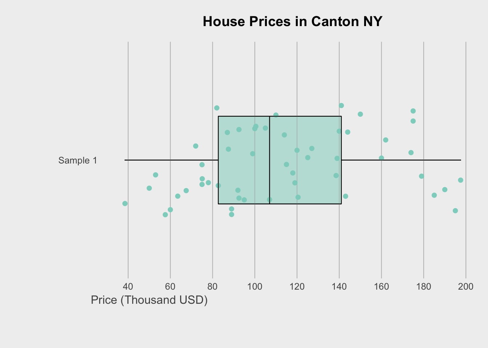</p>
</div>
</div>
<p>Or if you wish to do the rainbow many group boxplot at the beginning, the code is here : https://github.com/fawda123/diss_proc/blob/master/diss_plot.R</p>
<p><br> <br></p>
</section>
</section>
<section id="violin-plots" class="level2">
<h2 class="anchored" data-anchor-id="violin-plots">Violin plots</h2>
<p>Violin plots combine the simplicity of a boxplot with a sense of the underlying distribution. This is useful when you want a sense of both the symmetry of the data and the underlying distribution. Highly recommended! For a single variable, consider a box-plot-with-histogram (see below).</p>
<p>There are MANY on R graph gallery with code: https://www.r-graph-gallery.com/violin.html</p>
<p>For example, for our data:</p>
<div class="cell">
<div class="sourceCode cell-code" id="cb138"><pre class="sourceCode r code-with-copy"><code class="sourceCode r"><span id="cb138-1"><a href="#cb138-1" aria-hidden="true" tabindex="-1"></a><span class="co"># fill=name allow to automatically dedicate a color for each group</span></span>
<span id="cb138-2"><a href="#cb138-2" aria-hidden="true" tabindex="-1"></a><span class="fu">ggplot</span>(HousesNY, <span class="fu">aes</span>(<span class="at">x=</span>Beds, <span class="at">y=</span>Price, <span class="at">fill=</span>Beds)) <span class="sc">+</span> </span>
<span id="cb138-3"><a href="#cb138-3" aria-hidden="true" tabindex="-1"></a>   <span class="fu">geom_violin</span>()</span></code><button title="Copy to Clipboard" class="code-copy-button"><i class="bi"></i></button></pre></div>
<div class="cell-output cell-output-stderr">
<pre><code>Warning: Groups with fewer than two data points have been dropped.</code></pre>
</div>
<div class="cell-output-display">
<p></p>
</div>
</div>
<p>There’s also a <em>beautiful</em> package called <code>ggstatsplot</code> which allows a lot of detail (https://indrajeetpatil.github.io/ggstatsplot/)</p>
<p>For example, I love the plot below because it shows how much data in each group.</p>
<div class="cell">
<div class="sourceCode cell-code" id="cb140"><pre class="sourceCode r code-with-copy"><code class="sourceCode r"><span id="cb140-1"><a href="#cb140-1" aria-hidden="true" tabindex="-1"></a><span class="co"># you might need to first install this.</span></span>
<span id="cb140-2"><a href="#cb140-2" aria-hidden="true" tabindex="-1"></a><span class="fu">library</span>(ggstatsplot)</span></code><button title="Copy to Clipboard" class="code-copy-button"><i class="bi"></i></button></pre></div>
<div class="cell-output cell-output-stderr">
<pre><code>You can cite this package as:
     Patil, I. (2021). Visualizations with statistical details: The 'ggstatsplot' approach.
     Journal of Open Source Software, 6(61), 3167, doi:10.21105/joss.03167</code></pre>
</div>
<div class="sourceCode cell-code" id="cb142"><pre class="sourceCode r code-with-copy"><code class="sourceCode r"><span id="cb142-1"><a href="#cb142-1" aria-hidden="true" tabindex="-1"></a><span class="co"># i'm changing the middle mean point to be dark blue</span></span>
<span id="cb142-2"><a href="#cb142-2" aria-hidden="true" tabindex="-1"></a></span>
<span id="cb142-3"><a href="#cb142-3" aria-hidden="true" tabindex="-1"></a><span class="fu">ggbetweenstats</span>(<span class="at">data =</span> HousesNY,<span class="at">x =</span> Beds,<span class="at">y =</span> Price, </span>
<span id="cb142-4"><a href="#cb142-4" aria-hidden="true" tabindex="-1"></a>               <span class="at">centrality.point.args=</span><span class="fu">list</span>(<span class="at">color =</span> <span class="st">"darkblue"</span>))</span></code><button title="Copy to Clipboard" class="code-copy-button"><i class="bi"></i></button></pre></div>
<div class="cell-output cell-output-stderr">
<pre><code>Warning: Groups with fewer than two data points have been dropped.</code></pre>
</div>
<div class="cell-output-display">
<p>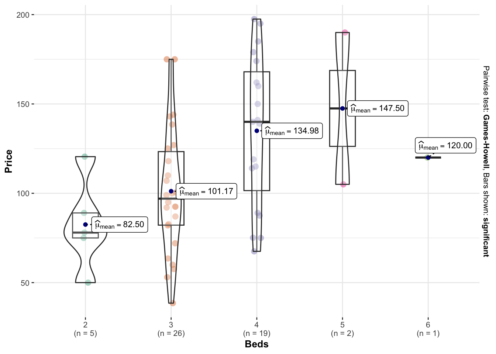</p>
</div>
</div>
<p>Or we can customise it even more using this tutorial to get results like this (https://www.r-graph-gallery.com/web-violinplot-with-ggstatsplot.html)</p>
<p><br> <br></p>
</section>
<section id="histograms" class="level2">
<h2 class="anchored" data-anchor-id="histograms">Histograms</h2>
<p>Especially just looking at a single response variable, it’s useful to look immediately at the distribution itself. Histograms are great for this, although you must be careful that the bin size doesn’t impact your perception of results. Adding in a boxplot is often useful</p>
<p>Here is the absolute basic histogram</p>
<div class="cell">
<div class="sourceCode cell-code" id="cb144"><pre class="sourceCode r code-with-copy"><code class="sourceCode r"><span id="cb144-1"><a href="#cb144-1" aria-hidden="true" tabindex="-1"></a><span class="fu">hist</span>(HousesNY<span class="sc">$</span>Price)</span></code><button title="Copy to Clipboard" class="code-copy-button"><i class="bi"></i></button></pre></div>
<div class="cell-output-display">
<p>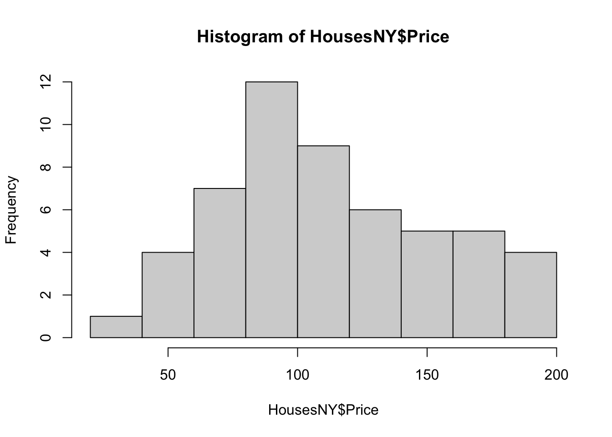</p>
</div>
</div>
<p>Or changing the bin size</p>
<div class="cell">
<div class="sourceCode cell-code" id="cb145"><pre class="sourceCode r code-with-copy"><code class="sourceCode r"><span id="cb145-1"><a href="#cb145-1" aria-hidden="true" tabindex="-1"></a><span class="fu">hist</span>(HousesNY<span class="sc">$</span>Price,<span class="at">br=</span><span class="dv">40</span>)</span></code><button title="Copy to Clipboard" class="code-copy-button"><i class="bi"></i></button></pre></div>
<div class="cell-output-display">
<p></p>
</div>
</div>
<p>In GGPlot 2, it’s also easy</p>
<div class="cell">
<div class="sourceCode cell-code" id="cb146"><pre class="sourceCode r code-with-copy"><code class="sourceCode r"><span id="cb146-1"><a href="#cb146-1" aria-hidden="true" tabindex="-1"></a><span class="fu">ggplot</span>(<span class="at">data=</span>HousesNY, <span class="fu">aes</span>(<span class="at">x=</span>Price)) <span class="sc">+</span> </span>
<span id="cb146-2"><a href="#cb146-2" aria-hidden="true" tabindex="-1"></a>  <span class="fu">geom_histogram</span>(<span class="at">bins=</span><span class="dv">20</span>) </span></code><button title="Copy to Clipboard" class="code-copy-button"><i class="bi"></i></button></pre></div>
<div class="cell-output-display">
<p></p>
</div>
</div>
<p>Often, a boxplot AND a histogram is useful as it allows you to see a sense of the data shape and its underlying symmetry. For example, in base R</p>
<div class="cell">
<div class="sourceCode cell-code" id="cb147"><pre class="sourceCode r code-with-copy"><code class="sourceCode r"><span id="cb147-1"><a href="#cb147-1" aria-hidden="true" tabindex="-1"></a><span class="co"># Layout to split the screen</span></span>
<span id="cb147-2"><a href="#cb147-2" aria-hidden="true" tabindex="-1"></a>graphics<span class="sc">::</span><span class="fu">layout</span>(<span class="fu">matrix</span>(<span class="fu">c</span>(<span class="dv">1</span>,<span class="dv">2</span>),<span class="dv">2</span>,<span class="dv">1</span>, <span class="at">byrow=</span><span class="cn">TRUE</span>),  </span>
<span id="cb147-3"><a href="#cb147-3" aria-hidden="true" tabindex="-1"></a>       <span class="at">height =</span> <span class="fu">c</span>(<span class="dv">2</span>,<span class="dv">7</span>))</span>
<span id="cb147-4"><a href="#cb147-4" aria-hidden="true" tabindex="-1"></a> </span>
<span id="cb147-5"><a href="#cb147-5" aria-hidden="true" tabindex="-1"></a><span class="co"># Draw the boxplot and the histogram </span></span>
<span id="cb147-6"><a href="#cb147-6" aria-hidden="true" tabindex="-1"></a><span class="fu">par</span>(<span class="at">mar=</span><span class="fu">c</span>(<span class="dv">0</span>, <span class="fl">3.1</span>, .<span class="dv">5</span>, <span class="fl">2.1</span>))</span>
<span id="cb147-7"><a href="#cb147-7" aria-hidden="true" tabindex="-1"></a></span>
<span id="cb147-8"><a href="#cb147-8" aria-hidden="true" tabindex="-1"></a>data_to_plot <span class="ot">&lt;-</span> HousesNY<span class="sc">$</span>Price</span>
<span id="cb147-9"><a href="#cb147-9" aria-hidden="true" tabindex="-1"></a></span>
<span id="cb147-10"><a href="#cb147-10" aria-hidden="true" tabindex="-1"></a>rangeplot <span class="ot">&lt;-</span> <span class="fu">pretty</span>(data_to_plot,<span class="dv">10</span>)</span>
<span id="cb147-11"><a href="#cb147-11" aria-hidden="true" tabindex="-1"></a></span>
<span id="cb147-12"><a href="#cb147-12" aria-hidden="true" tabindex="-1"></a><span class="fu">boxplot</span>(data_to_plot,<span class="at">col =</span> <span class="st">"light blue"</span>,</span>
<span id="cb147-13"><a href="#cb147-13" aria-hidden="true" tabindex="-1"></a>        <span class="at">border =</span> <span class="st">"dark blue"</span>,<span class="at">xaxt=</span><span class="st">"n"</span>,<span class="at">frame=</span><span class="cn">FALSE</span>,<span class="at">xlim=</span><span class="fu">c</span>(<span class="fl">0.75</span>,<span class="fl">1.25</span>),</span>
<span id="cb147-14"><a href="#cb147-14" aria-hidden="true" tabindex="-1"></a>        <span class="at">horizontal =</span> <span class="cn">TRUE</span>,<span class="at">notch =</span> <span class="cn">TRUE</span>,<span class="at">ylim=</span><span class="fu">c</span>(<span class="fu">min</span>(rangeplot),<span class="fu">max</span>(rangeplot)))</span>
<span id="cb147-15"><a href="#cb147-15" aria-hidden="true" tabindex="-1"></a></span>
<span id="cb147-16"><a href="#cb147-16" aria-hidden="true" tabindex="-1"></a><span class="fu">par</span>(<span class="at">mar=</span><span class="fu">c</span>(<span class="dv">3</span>, <span class="fl">3.1</span>, .<span class="dv">5</span>, <span class="fl">2.1</span>))</span>
<span id="cb147-17"><a href="#cb147-17" aria-hidden="true" tabindex="-1"></a><span class="fu">hist</span>(data_to_plot , <span class="at">breaks=</span><span class="dv">20</span> , </span>
<span id="cb147-18"><a href="#cb147-18" aria-hidden="true" tabindex="-1"></a>     <span class="at">col=</span><span class="fu">grey</span>(<span class="fl">0.3</span>) , <span class="at">border=</span>F , </span>
<span id="cb147-19"><a href="#cb147-19" aria-hidden="true" tabindex="-1"></a>     <span class="at">tcl=</span><span class="sc">-</span>.<span class="dv">25</span>,<span class="at">mgp=</span><span class="fu">c</span>(<span class="fl">1.75</span>,.<span class="dv">5</span>,<span class="dv">0</span>),</span>
<span id="cb147-20"><a href="#cb147-20" aria-hidden="true" tabindex="-1"></a>     <span class="at">main=</span><span class="st">""</span> , <span class="at">xlab=</span><span class="st">"Price of houses in Canton NY"</span>, </span>
<span id="cb147-21"><a href="#cb147-21" aria-hidden="true" tabindex="-1"></a>     <span class="at">xlim=</span><span class="fu">c</span>(<span class="fu">min</span>(rangeplot),<span class="fu">max</span>(rangeplot)))</span>
<span id="cb147-22"><a href="#cb147-22" aria-hidden="true" tabindex="-1"></a><span class="fu">box</span>();<span class="fu">grid</span>();</span>
<span id="cb147-23"><a href="#cb147-23" aria-hidden="true" tabindex="-1"></a><span class="fu">hist</span>(data_to_plot , <span class="at">breaks=</span><span class="dv">20</span> , <span class="at">add=</span><span class="cn">TRUE</span>,</span>
<span id="cb147-24"><a href="#cb147-24" aria-hidden="true" tabindex="-1"></a>     <span class="at">col=</span><span class="fu">grey</span>(<span class="fl">0.3</span>) , <span class="at">border=</span>F , <span class="at">axis=</span><span class="cn">FALSE</span>,</span>
<span id="cb147-25"><a href="#cb147-25" aria-hidden="true" tabindex="-1"></a>     <span class="at">xlim=</span><span class="fu">c</span>(<span class="fu">min</span>(rangeplot),<span class="fu">max</span>(rangeplot)))</span></code><button title="Copy to Clipboard" class="code-copy-button"><i class="bi"></i></button></pre></div>
<div class="cell-output-display">
<p></p>
</div>
</div>
<p>And the same with ggplot2:</p>
<div class="cell">
<div class="sourceCode cell-code" id="cb148"><pre class="sourceCode r code-with-copy"><code class="sourceCode r"><span id="cb148-1"><a href="#cb148-1" aria-hidden="true" tabindex="-1"></a><span class="fu">library</span>(ggExtra)</span>
<span id="cb148-2"><a href="#cb148-2" aria-hidden="true" tabindex="-1"></a></span>
<span id="cb148-3"><a href="#cb148-3" aria-hidden="true" tabindex="-1"></a>p <span class="ot">&lt;-</span> <span class="fu">ggplot</span>(<span class="at">data=</span>HousesNY, <span class="fu">aes</span>(<span class="at">x=</span>Price)) <span class="sc">+</span> </span>
<span id="cb148-4"><a href="#cb148-4" aria-hidden="true" tabindex="-1"></a>  <span class="fu">geom_point</span>(<span class="fu">aes</span>(<span class="at">y =</span> <span class="fl">0.01</span>), <span class="at">alpha =</span> <span class="dv">0</span>) <span class="sc">+</span></span>
<span id="cb148-5"><a href="#cb148-5" aria-hidden="true" tabindex="-1"></a>  <span class="fu">geom_histogram</span>(<span class="at">bins=</span><span class="dv">20</span>) <span class="sc">+</span></span>
<span id="cb148-6"><a href="#cb148-6" aria-hidden="true" tabindex="-1"></a>  <span class="fu">geom_density</span>(<span class="at">na.rm=</span>T)</span>
<span id="cb148-7"><a href="#cb148-7" aria-hidden="true" tabindex="-1"></a></span>
<span id="cb148-8"><a href="#cb148-8" aria-hidden="true" tabindex="-1"></a><span class="fu">ggMarginal</span>(p, <span class="at">type=</span><span class="st">"boxplot"</span>, <span class="at">margins =</span> <span class="st">"x"</span>)</span></code><button title="Copy to Clipboard" class="code-copy-button"><i class="bi"></i></button></pre></div>
<div class="cell-output cell-output-stderr">
<pre><code>Warning: Continuous x aesthetic
ℹ did you forget `aes(group = ...)`?</code></pre>
</div>
<div class="cell-output-display">
<p></p>
</div>
</div>
<p>I also love the ggstatplot version</p>
<div class="cell">
<div class="sourceCode cell-code" id="cb150"><pre class="sourceCode r code-with-copy"><code class="sourceCode r"><span id="cb150-1"><a href="#cb150-1" aria-hidden="true" tabindex="-1"></a><span class="fu">library</span>(ggstatsplot)</span>
<span id="cb150-2"><a href="#cb150-2" aria-hidden="true" tabindex="-1"></a><span class="do">## plot</span></span>
<span id="cb150-3"><a href="#cb150-3" aria-hidden="true" tabindex="-1"></a><span class="fu">gghistostats</span>(</span>
<span id="cb150-4"><a href="#cb150-4" aria-hidden="true" tabindex="-1"></a>  <span class="at">data       =</span> HousesNY, <span class="do">## dataframe from which variable is to be taken</span></span>
<span id="cb150-5"><a href="#cb150-5" aria-hidden="true" tabindex="-1"></a>  <span class="at">x          =</span> Price, <span class="do">## numeric variable whose distribution is of interest</span></span>
<span id="cb150-6"><a href="#cb150-6" aria-hidden="true" tabindex="-1"></a>  <span class="at">title      =</span> <span class="st">"Price of sampled houses in Canton NY"</span>, <span class="do">## title for the plot</span></span>
<span id="cb150-7"><a href="#cb150-7" aria-hidden="true" tabindex="-1"></a>  <span class="at">caption    =</span> <span class="st">"Source: Zillow"</span>,</span>
<span id="cb150-8"><a href="#cb150-8" aria-hidden="true" tabindex="-1"></a>  <span class="at">type =</span> <span class="st">"parametric"</span>,</span>
<span id="cb150-9"><a href="#cb150-9" aria-hidden="true" tabindex="-1"></a>  <span class="at">xlab =</span> <span class="cn">NULL</span>,<span class="at">subtitle=</span><span class="cn">FALSE</span>,</span>
<span id="cb150-10"><a href="#cb150-10" aria-hidden="true" tabindex="-1"></a>  ggthemes<span class="sc">::</span><span class="fu">theme_tufte</span>(),</span>
<span id="cb150-11"><a href="#cb150-11" aria-hidden="true" tabindex="-1"></a>  <span class="at">binwidth   =</span> <span class="dv">8</span>) <span class="do">## binwidth value (experiment)</span></span></code><button title="Copy to Clipboard" class="code-copy-button"><i class="bi"></i></button></pre></div>
<div class="cell-output cell-output-stderr">
<pre><code>Warning: The dot-dot notation (`..count..`) was deprecated in ggplot2 3.4.0.
ℹ Please use `after_stat(count)` instead.
ℹ The deprecated feature was likely used in the ggstatsplot package.
  Please report the issue at
  &lt;]8;;https://github.com/IndrajeetPatil/ggstatsplot/issueshttps://github.com/IndrajeetPatil/ggstatsplot/issues]8;;&gt;.</code></pre>
</div>
<div class="cell-output-display">
<p>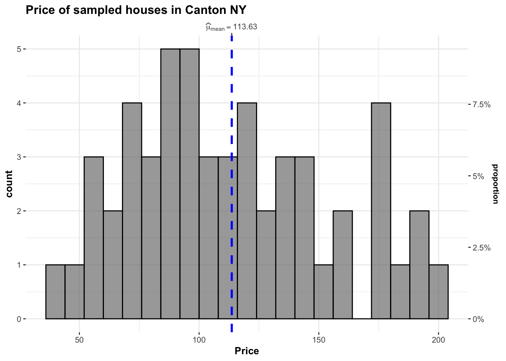</p>
</div>
</div>
<p>Or their version that includes a lot of associated statistics. You can turn many of these on and off</p>
<div class="cell">
<div class="sourceCode cell-code" id="cb152"><pre class="sourceCode r code-with-copy"><code class="sourceCode r"><span id="cb152-1"><a href="#cb152-1" aria-hidden="true" tabindex="-1"></a><span class="fu">library</span>(ggstatsplot)</span>
<span id="cb152-2"><a href="#cb152-2" aria-hidden="true" tabindex="-1"></a></span>
<span id="cb152-3"><a href="#cb152-3" aria-hidden="true" tabindex="-1"></a><span class="do">## plot</span></span>
<span id="cb152-4"><a href="#cb152-4" aria-hidden="true" tabindex="-1"></a><span class="fu">gghistostats</span>(</span>
<span id="cb152-5"><a href="#cb152-5" aria-hidden="true" tabindex="-1"></a>  <span class="at">data       =</span> HousesNY, <span class="do">## dataframe from which variable is to be taken</span></span>
<span id="cb152-6"><a href="#cb152-6" aria-hidden="true" tabindex="-1"></a>  <span class="at">x          =</span> Price, <span class="do">## numeric variable whose distribution is of interest</span></span>
<span id="cb152-7"><a href="#cb152-7" aria-hidden="true" tabindex="-1"></a>  <span class="at">title      =</span> <span class="st">"Price of sampled houses in Canton NY"</span>, <span class="do">## title for the plot</span></span>
<span id="cb152-8"><a href="#cb152-8" aria-hidden="true" tabindex="-1"></a>  <span class="at">caption    =</span> <span class="st">"Source: Zillow"</span>,</span>
<span id="cb152-9"><a href="#cb152-9" aria-hidden="true" tabindex="-1"></a>  <span class="at">type =</span> <span class="st">"parametric"</span>,</span>
<span id="cb152-10"><a href="#cb152-10" aria-hidden="true" tabindex="-1"></a>  <span class="at">xlab =</span> <span class="cn">NULL</span>,</span>
<span id="cb152-11"><a href="#cb152-11" aria-hidden="true" tabindex="-1"></a>  ggthemes<span class="sc">::</span><span class="fu">theme_tufte</span>(),</span>
<span id="cb152-12"><a href="#cb152-12" aria-hidden="true" tabindex="-1"></a>  <span class="at">binwidth   =</span> <span class="dv">8</span>) <span class="do">## binwidth value (experiment)</span></span></code><button title="Copy to Clipboard" class="code-copy-button"><i class="bi"></i></button></pre></div>
<div class="cell-output-display">
<p>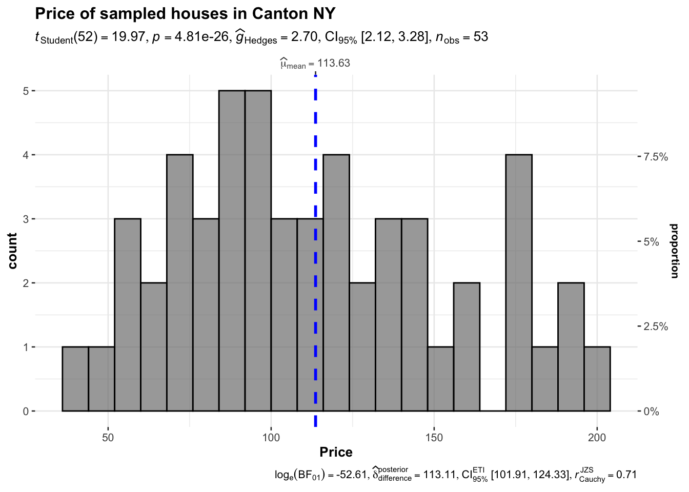</p>
</div>
</div>
<section id="adding-a-density-function" class="level3">
<h3 class="anchored" data-anchor-id="adding-a-density-function">Adding a density function</h3>
<p>Sometimes seeing a smoothed line helps draw the eye to distributions</p>
<div class="cell">
<div class="sourceCode cell-code" id="cb153"><pre class="sourceCode r code-with-copy"><code class="sourceCode r"><span id="cb153-1"><a href="#cb153-1" aria-hidden="true" tabindex="-1"></a><span class="fu">hist</span>(HousesNY<span class="sc">$</span>Price, <span class="at">prob =</span> <span class="cn">TRUE</span>,</span>
<span id="cb153-2"><a href="#cb153-2" aria-hidden="true" tabindex="-1"></a>     <span class="at">main =</span> <span class="st">"Canton Prices with density curve"</span>)</span>
<span id="cb153-3"><a href="#cb153-3" aria-hidden="true" tabindex="-1"></a><span class="fu">lines</span>(<span class="fu">density</span>(HousesNY<span class="sc">$</span>Price), <span class="at">col =</span> <span class="dv">4</span>, <span class="at">lwd =</span> <span class="dv">2</span>)</span>
<span id="cb153-4"><a href="#cb153-4" aria-hidden="true" tabindex="-1"></a><span class="fu">box</span>()</span></code><button title="Copy to Clipboard" class="code-copy-button"><i class="bi"></i></button></pre></div>
<div class="cell-output-display">
<p></p>
</div>
</div>
</section>
<section id="adding-a-distribution" class="level3">
<h3 class="anchored" data-anchor-id="adding-a-distribution">Adding a distribution</h3>
<p>Let’s say you want to make plots similar to the ones in the lectures where there is your chosen distribution on top.</p>
<p>If you know the distribution, you can simply add it on top as a line</p>
<div class="cell">
<div class="sourceCode cell-code" id="cb154"><pre class="sourceCode r code-with-copy"><code class="sourceCode r"><span id="cb154-1"><a href="#cb154-1" aria-hidden="true" tabindex="-1"></a>mysample <span class="ot">&lt;-</span> HousesNY<span class="sc">$</span>Price</span>
<span id="cb154-2"><a href="#cb154-2" aria-hidden="true" tabindex="-1"></a></span>
<span id="cb154-3"><a href="#cb154-3" aria-hidden="true" tabindex="-1"></a>plotmin <span class="ot">&lt;-</span> <span class="fu">mean</span>(mysample) <span class="sc">-</span> <span class="fu">sd</span>(mysample)<span class="sc">*</span><span class="dv">3</span></span>
<span id="cb154-4"><a href="#cb154-4" aria-hidden="true" tabindex="-1"></a>plotmax <span class="ot">&lt;-</span>  <span class="fu">mean</span>(mysample) <span class="sc">+</span> <span class="fu">sd</span>(mysample)<span class="sc">*</span><span class="dv">3</span></span>
<span id="cb154-5"><a href="#cb154-5" aria-hidden="true" tabindex="-1"></a></span>
<span id="cb154-6"><a href="#cb154-6" aria-hidden="true" tabindex="-1"></a><span class="co"># Points for the normal equation line</span></span>
<span id="cb154-7"><a href="#cb154-7" aria-hidden="true" tabindex="-1"></a>NormCurve_x <span class="ot">&lt;-</span> <span class="fu">seq</span>(plotmin,plotmax, <span class="at">length =</span> <span class="dv">40</span>)</span>
<span id="cb154-8"><a href="#cb154-8" aria-hidden="true" tabindex="-1"></a></span>
<span id="cb154-9"><a href="#cb154-9" aria-hidden="true" tabindex="-1"></a><span class="co"># Normal curve calculation for each point</span></span>
<span id="cb154-10"><a href="#cb154-10" aria-hidden="true" tabindex="-1"></a>NormCurve_y <span class="ot">&lt;-</span> <span class="fu">dnorm</span>(NormCurve_x, <span class="at">mean =</span> <span class="fu">mean</span>(mysample), <span class="at">sd =</span> <span class="fu">sd</span>(mysample))</span>
<span id="cb154-11"><a href="#cb154-11" aria-hidden="true" tabindex="-1"></a></span>
<span id="cb154-12"><a href="#cb154-12" aria-hidden="true" tabindex="-1"></a><span class="co"># make sure this is density not raw frequency</span></span>
<span id="cb154-13"><a href="#cb154-13" aria-hidden="true" tabindex="-1"></a><span class="fu">hist</span>(mysample , <span class="at">breaks=</span><span class="dv">20</span> , <span class="at">freq=</span><span class="cn">FALSE</span>,</span>
<span id="cb154-14"><a href="#cb154-14" aria-hidden="true" tabindex="-1"></a>     <span class="at">col=</span><span class="fu">grey</span>(<span class="fl">0.5</span>) , <span class="at">border=</span>F , </span>
<span id="cb154-15"><a href="#cb154-15" aria-hidden="true" tabindex="-1"></a>     <span class="at">xlim=</span><span class="fu">c</span>(plotmin,plotmax),</span>
<span id="cb154-16"><a href="#cb154-16" aria-hidden="true" tabindex="-1"></a>     <span class="at">tcl=</span><span class="sc">-</span>.<span class="dv">25</span>,<span class="at">mgp=</span><span class="fu">c</span>(<span class="fl">1.75</span>,.<span class="dv">5</span>,<span class="dv">0</span>),</span>
<span id="cb154-17"><a href="#cb154-17" aria-hidden="true" tabindex="-1"></a>     <span class="at">main=</span><span class="st">""</span> , <span class="at">xlab=</span><span class="st">"Price of houses in Canton NY"</span>)</span>
<span id="cb154-18"><a href="#cb154-18" aria-hidden="true" tabindex="-1"></a><span class="co"># add the normal curve (THIS NEEDS TO BE IN THE SAME CODE CHUNK)</span></span>
<span id="cb154-19"><a href="#cb154-19" aria-hidden="true" tabindex="-1"></a><span class="fu">lines</span>(NormCurve_x, NormCurve_y, <span class="at">col =</span> <span class="dv">2</span>, <span class="at">lwd =</span> <span class="dv">2</span>)</span>
<span id="cb154-20"><a href="#cb154-20" aria-hidden="true" tabindex="-1"></a><span class="fu">box</span>()</span></code><button title="Copy to Clipboard" class="code-copy-button"><i class="bi"></i></button></pre></div>
<div class="cell-output-display">
<p></p>
</div>
</div>
<p>We could plot any old curve this way, it doesn’t have to be “fit” to our data. For example here is a random gamma function</p>
<div class="cell">
<div class="sourceCode cell-code" id="cb155"><pre class="sourceCode r code-with-copy"><code class="sourceCode r"><span id="cb155-1"><a href="#cb155-1" aria-hidden="true" tabindex="-1"></a>mysample <span class="ot">&lt;-</span> HousesNY<span class="sc">$</span>Price</span>
<span id="cb155-2"><a href="#cb155-2" aria-hidden="true" tabindex="-1"></a></span>
<span id="cb155-3"><a href="#cb155-3" aria-hidden="true" tabindex="-1"></a><span class="co"># Points for the normal equation line</span></span>
<span id="cb155-4"><a href="#cb155-4" aria-hidden="true" tabindex="-1"></a>GammaCurve_x <span class="ot">&lt;-</span> <span class="fu">seq</span>(plotmin,plotmax, <span class="at">length =</span> <span class="dv">60</span>)</span>
<span id="cb155-5"><a href="#cb155-5" aria-hidden="true" tabindex="-1"></a>GammaCurve_y <span class="ot">&lt;-</span> <span class="fu">dgamma</span>(GammaCurve_x,<span class="at">shape =</span> <span class="dv">2</span>)</span>
<span id="cb155-6"><a href="#cb155-6" aria-hidden="true" tabindex="-1"></a></span>
<span id="cb155-7"><a href="#cb155-7" aria-hidden="true" tabindex="-1"></a><span class="co"># make sure this is density not raw frequency</span></span>
<span id="cb155-8"><a href="#cb155-8" aria-hidden="true" tabindex="-1"></a><span class="fu">hist</span>(mysample , <span class="at">breaks=</span><span class="dv">20</span> , <span class="at">freq=</span><span class="cn">FALSE</span>,</span>
<span id="cb155-9"><a href="#cb155-9" aria-hidden="true" tabindex="-1"></a>     <span class="at">col=</span><span class="fu">grey</span>(<span class="fl">0.5</span>) , <span class="at">border=</span>F , </span>
<span id="cb155-10"><a href="#cb155-10" aria-hidden="true" tabindex="-1"></a>     <span class="at">xlim=</span><span class="fu">c</span>(plotmin,plotmax),</span>
<span id="cb155-11"><a href="#cb155-11" aria-hidden="true" tabindex="-1"></a>     <span class="at">tcl=</span><span class="sc">-</span>.<span class="dv">25</span>,<span class="at">mgp=</span><span class="fu">c</span>(<span class="fl">1.75</span>,.<span class="dv">5</span>,<span class="dv">0</span>),</span>
<span id="cb155-12"><a href="#cb155-12" aria-hidden="true" tabindex="-1"></a>     <span class="at">main=</span><span class="st">""</span> , <span class="at">xlab=</span><span class="st">"Price of houses in Canton NY"</span>)</span>
<span id="cb155-13"><a href="#cb155-13" aria-hidden="true" tabindex="-1"></a><span class="co"># add the normal curve (THIS NEEDS TO BE IN THE SAME CODE CHUNK)</span></span>
<span id="cb155-14"><a href="#cb155-14" aria-hidden="true" tabindex="-1"></a><span class="fu">lines</span>(GammaCurve_x, GammaCurve_y, <span class="at">col =</span> <span class="dv">2</span>, <span class="at">lwd =</span> <span class="dv">2</span>)</span>
<span id="cb155-15"><a href="#cb155-15" aria-hidden="true" tabindex="-1"></a><span class="fu">box</span>()</span></code><button title="Copy to Clipboard" class="code-copy-button"><i class="bi"></i></button></pre></div>
<div class="cell-output-display">
<p></p>
</div>
</div>
</section>
<section id="comparing-groups-1" class="level3">
<h3 class="anchored" data-anchor-id="comparing-groups-1">Comparing groups</h3>
<p>Or you can easily compare two datasets, tutorial for this plot here: https://www.r-graph-gallery.com/histogram_several_group.html</p>
<p><br> <br></p>
</section>
</section>
<section id="ridgeline-plots" class="level2">
<h2 class="anchored" data-anchor-id="ridgeline-plots">Ridgeline plots</h2>
<p>These are another way of looking at histograms for different groups. They work especially when your grouping data is ORDINAL (has some inherent order). So bedrooms would be a good example</p>
<p>Two great pages here: - https://www.data-to-viz.com/graph/ridgeline.html - https://r-charts.com/distribution/ggridges/</p>
<p>We can use histograms or smoothed density lines https://www.data-to-viz.com/graph/ridgeline.html</p>
<div class="cell">
<div class="sourceCode cell-code" id="cb156"><pre class="sourceCode r code-with-copy"><code class="sourceCode r"><span id="cb156-1"><a href="#cb156-1" aria-hidden="true" tabindex="-1"></a><span class="fu">library</span>(ggridges)</span>
<span id="cb156-2"><a href="#cb156-2" aria-hidden="true" tabindex="-1"></a><span class="fu">library</span>(ggplot2)</span>
<span id="cb156-3"><a href="#cb156-3" aria-hidden="true" tabindex="-1"></a></span>
<span id="cb156-4"><a href="#cb156-4" aria-hidden="true" tabindex="-1"></a>HousesNY <span class="sc">%&gt;%</span></span>
<span id="cb156-5"><a href="#cb156-5" aria-hidden="true" tabindex="-1"></a>  <span class="fu">ggplot</span>( <span class="fu">aes</span>(<span class="at">y=</span>Beds, <span class="at">x=</span>Price,  <span class="at">fill=</span>Beds)) <span class="sc">+</span></span>
<span id="cb156-6"><a href="#cb156-6" aria-hidden="true" tabindex="-1"></a>    <span class="fu">geom_density_ridges</span>(<span class="at">alpha=</span><span class="fl">0.6</span>, <span class="at">stat=</span><span class="st">"binline"</span>) <span class="sc">+</span></span>
<span id="cb156-7"><a href="#cb156-7" aria-hidden="true" tabindex="-1"></a>    <span class="fu">scale_fill_viridis</span>(<span class="at">discrete=</span><span class="cn">TRUE</span>) <span class="sc">+</span></span>
<span id="cb156-8"><a href="#cb156-8" aria-hidden="true" tabindex="-1"></a>    <span class="fu">scale_color_viridis</span>(<span class="at">discrete=</span><span class="cn">TRUE</span>) <span class="sc">+</span></span>
<span id="cb156-9"><a href="#cb156-9" aria-hidden="true" tabindex="-1"></a>    <span class="fu">theme_ipsum</span>() <span class="sc">+</span></span>
<span id="cb156-10"><a href="#cb156-10" aria-hidden="true" tabindex="-1"></a>    <span class="fu">theme</span>(</span>
<span id="cb156-11"><a href="#cb156-11" aria-hidden="true" tabindex="-1"></a>      <span class="at">legend.position=</span><span class="st">"none"</span>,</span>
<span id="cb156-12"><a href="#cb156-12" aria-hidden="true" tabindex="-1"></a>      <span class="at">panel.spacing =</span> <span class="fu">unit</span>(<span class="fl">0.1</span>, <span class="st">"lines"</span>),</span>
<span id="cb156-13"><a href="#cb156-13" aria-hidden="true" tabindex="-1"></a>      <span class="at">strip.text.x =</span> <span class="fu">element_text</span>(<span class="at">size =</span> <span class="dv">8</span>)</span>
<span id="cb156-14"><a href="#cb156-14" aria-hidden="true" tabindex="-1"></a>    ) <span class="sc">+</span></span>
<span id="cb156-15"><a href="#cb156-15" aria-hidden="true" tabindex="-1"></a>    <span class="fu">xlab</span>(<span class="st">""</span>) <span class="sc">+</span></span>
<span id="cb156-16"><a href="#cb156-16" aria-hidden="true" tabindex="-1"></a>    <span class="fu">ylab</span>(<span class="st">"Number of Bedrooms"</span>)</span></code><button title="Copy to Clipboard" class="code-copy-button"><i class="bi"></i></button></pre></div>
<div class="cell-output cell-output-stderr">
<pre><code>`stat_binline()` using `bins = 30`. Pick better value with `binwidth`.</code></pre>
</div>
<div class="cell-output-display">
<p></p>
</div>
</div>
<p>But the</p>
<p>All of these are from https://r-charts.com/distribution/ggridges/</p>
<div class="cell">
<div class="sourceCode cell-code" id="cb158"><pre class="sourceCode r code-with-copy"><code class="sourceCode r"><span id="cb158-1"><a href="#cb158-1" aria-hidden="true" tabindex="-1"></a><span class="fu">library</span>(ggridges)</span>
<span id="cb158-2"><a href="#cb158-2" aria-hidden="true" tabindex="-1"></a><span class="fu">library</span>(ggplot2)</span>
<span id="cb158-3"><a href="#cb158-3" aria-hidden="true" tabindex="-1"></a></span>
<span id="cb158-4"><a href="#cb158-4" aria-hidden="true" tabindex="-1"></a><span class="fu">ggplot</span>(HousesNY, <span class="fu">aes</span>(<span class="at">x =</span> Price, <span class="at">y =</span> Beds, <span class="at">fill =</span> <span class="fu">stat</span>(x))) <span class="sc">+</span></span>
<span id="cb158-5"><a href="#cb158-5" aria-hidden="true" tabindex="-1"></a>  <span class="fu">geom_density_ridges_gradient</span>() <span class="sc">+</span></span>
<span id="cb158-6"><a href="#cb158-6" aria-hidden="true" tabindex="-1"></a>  <span class="fu">scale_fill_viridis_c</span>(<span class="at">name =</span> <span class="st">"Depth"</span>, <span class="at">option =</span> <span class="st">"C"</span>) <span class="sc">+</span></span>
<span id="cb158-7"><a href="#cb158-7" aria-hidden="true" tabindex="-1"></a>  <span class="fu">coord_cartesian</span>(<span class="at">clip =</span> <span class="st">"off"</span>) <span class="sc">+</span> <span class="co"># To avoid cut off</span></span>
<span id="cb158-8"><a href="#cb158-8" aria-hidden="true" tabindex="-1"></a>  <span class="fu">theme_minimal</span>()</span></code><button title="Copy to Clipboard" class="code-copy-button"><i class="bi"></i></button></pre></div>
<div class="cell-output cell-output-stderr">
<pre><code>Warning: `stat(x)` was deprecated in ggplot2 3.4.0.
ℹ Please use `after_stat(x)` instead.</code></pre>
</div>
<div class="cell-output-display">
<p>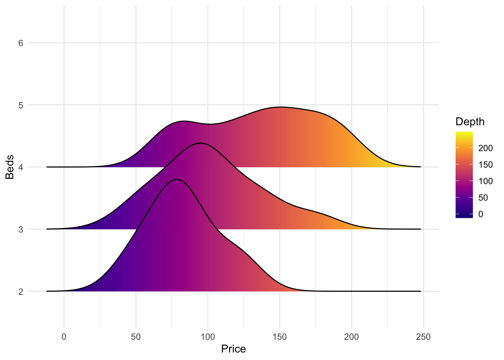</p>
</div>
</div>
<p>We can also make the colours more meaningful, for example adding quantiles to show the median and interquartile range</p>
<div class="cell">
<div class="sourceCode cell-code" id="cb160"><pre class="sourceCode r code-with-copy"><code class="sourceCode r"><span id="cb160-1"><a href="#cb160-1" aria-hidden="true" tabindex="-1"></a><span class="fu">ggplot</span>(HousesNY, <span class="fu">aes</span>(<span class="at">x =</span> Price, <span class="at">y =</span> Beds, <span class="at">fill =</span> <span class="fu">stat</span>(quantile))) <span class="sc">+</span></span>
<span id="cb160-2"><a href="#cb160-2" aria-hidden="true" tabindex="-1"></a>  <span class="fu">stat_density_ridges</span>(<span class="at">quantile_lines =</span> <span class="cn">FALSE</span>,</span>
<span id="cb160-3"><a href="#cb160-3" aria-hidden="true" tabindex="-1"></a>                      <span class="at">calc_ecdf =</span> <span class="cn">TRUE</span>,</span>
<span id="cb160-4"><a href="#cb160-4" aria-hidden="true" tabindex="-1"></a>                      <span class="at">geom =</span> <span class="st">"density_ridges_gradient"</span>) <span class="sc">+</span></span>
<span id="cb160-5"><a href="#cb160-5" aria-hidden="true" tabindex="-1"></a>  <span class="fu">scale_fill_brewer</span>(<span class="at">name =</span> <span class="st">""</span>)</span></code><button title="Copy to Clipboard" class="code-copy-button"><i class="bi"></i></button></pre></div>
<div class="cell-output cell-output-stderr">
<pre><code>Picking joint bandwidth of 16.8</code></pre>
</div>
<div class="cell-output-display">
<p>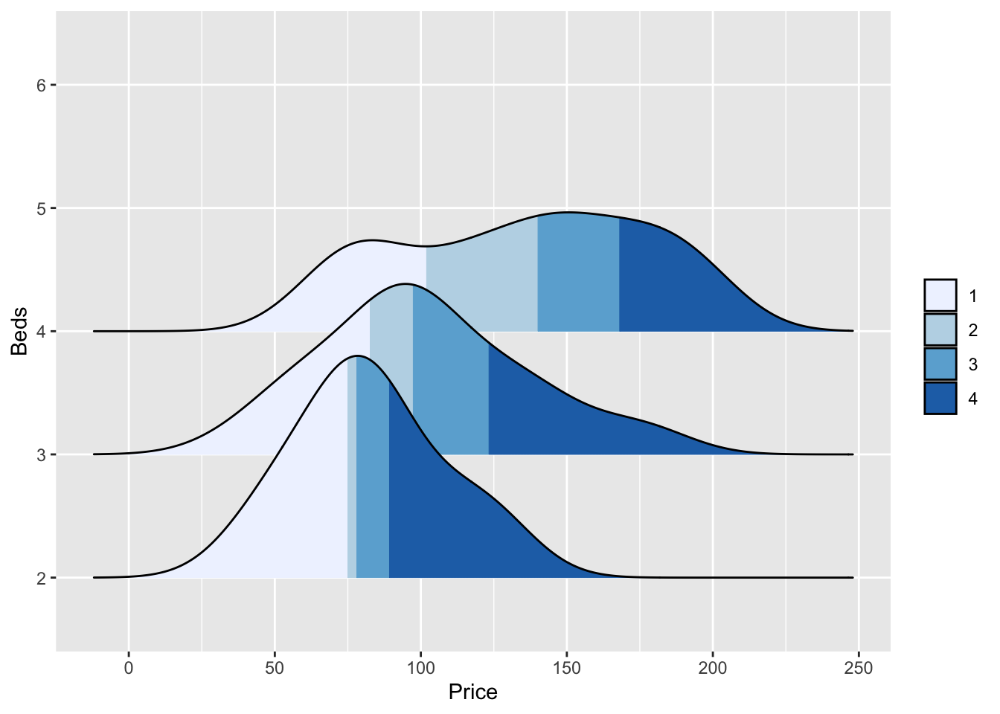</p>
</div>
</div>
<p>or highlighting tails</p>
<div class="cell">
<div class="sourceCode cell-code" id="cb162"><pre class="sourceCode r code-with-copy"><code class="sourceCode r"><span id="cb162-1"><a href="#cb162-1" aria-hidden="true" tabindex="-1"></a><span class="fu">ggplot</span>(HousesNY, <span class="fu">aes</span>(<span class="at">x =</span> Price, <span class="at">y =</span> Beds, <span class="at">fill =</span> <span class="fu">stat</span>(quantile))) <span class="sc">+</span></span>
<span id="cb162-2"><a href="#cb162-2" aria-hidden="true" tabindex="-1"></a>  <span class="fu">stat_density_ridges</span>(<span class="at">quantile_lines =</span> <span class="cn">TRUE</span>,</span>
<span id="cb162-3"><a href="#cb162-3" aria-hidden="true" tabindex="-1"></a>                      <span class="at">calc_ecdf =</span> <span class="cn">TRUE</span>,</span>
<span id="cb162-4"><a href="#cb162-4" aria-hidden="true" tabindex="-1"></a>                      <span class="at">geom =</span> <span class="st">"density_ridges_gradient"</span>,</span>
<span id="cb162-5"><a href="#cb162-5" aria-hidden="true" tabindex="-1"></a>                      <span class="at">quantiles =</span> <span class="fu">c</span>(<span class="fl">0.05</span>, <span class="fl">0.95</span>)) <span class="sc">+</span></span>
<span id="cb162-6"><a href="#cb162-6" aria-hidden="true" tabindex="-1"></a>  <span class="fu">scale_fill_manual</span>(<span class="at">name =</span> <span class="st">"Proportion"</span>, </span>
<span id="cb162-7"><a href="#cb162-7" aria-hidden="true" tabindex="-1"></a>                    <span class="at">values =</span> <span class="fu">c</span>(<span class="st">"#E2FFF2"</span>, <span class="st">"white"</span>, <span class="st">"#B0E0E6"</span>),</span>
<span id="cb162-8"><a href="#cb162-8" aria-hidden="true" tabindex="-1"></a>                    <span class="at">labels =</span> <span class="fu">c</span>(<span class="st">"(0, 5%]"</span>, <span class="st">"(5%, 95%]"</span>, <span class="st">"(95%, 1]"</span>))</span></code><button title="Copy to Clipboard" class="code-copy-button"><i class="bi"></i></button></pre></div>
<div class="cell-output cell-output-stderr">
<pre><code>Picking joint bandwidth of 16.8</code></pre>
</div>
<div class="cell-output cell-output-stderr">
<pre><code>Warning: Using the `size` aesthietic with geom_segment was deprecated in ggplot2 3.4.0.
ℹ Please use the `linewidth` aesthetic instead.</code></pre>
</div>
<div class="cell-output-display">
<p>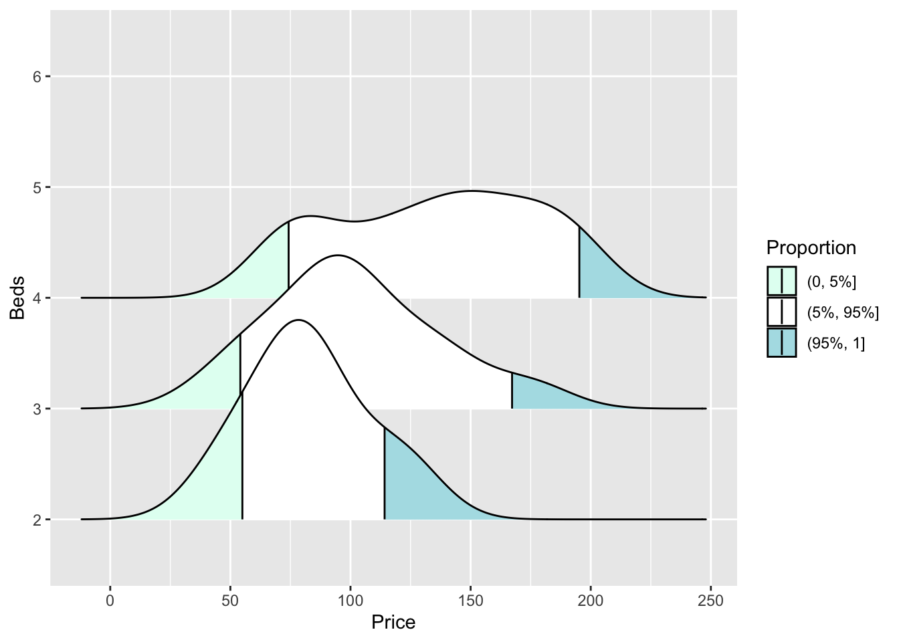</p>
</div>
</div>
</section>
<section id="beeswarm-plots" class="level2">
<h2 class="anchored" data-anchor-id="beeswarm-plots">Beeswarm plots</h2>
<p>These are cool. As described here:</p>
<p>https://www.rhoworld.com/i-swarm-you-swarm-we-all-swarm-for-beeswarm-plots-0/#:~:text=What%20is%20a%20beeswarm%20plot%3F&amp;text=A%20beeswarm%20plot%20improves%20upon,bees%20buzzing%20about%20their%20hive.</p>
<p>“But what is a beeswarm plot? … A beeswarm plot improves upon the random jittering approach to move data points the minimum distance away from one another to avoid overlays. The result is a plot where you can see each distinct data point, like so: It looks a bit like a friendly swarm of bees buzzing about their hive.”</p>
<p>It’s often used for professional visualisation, see here for many examples: https://flowingdata.com/charttype/beeswarm</p>
<p>Especially for the first, you can see the distribution clearly, also with the amount of data. With the second, you can see the mitigating impact of a second variable.</p>
<p>To make easy ones you can install a new packages “beeswarm”</p>
<div class="cell">
<div class="sourceCode cell-code" id="cb165"><pre class="sourceCode r code-with-copy"><code class="sourceCode r"><span id="cb165-1"><a href="#cb165-1" aria-hidden="true" tabindex="-1"></a><span class="fu">library</span>(<span class="st">"beeswarm"</span>)</span>
<span id="cb165-2"><a href="#cb165-2" aria-hidden="true" tabindex="-1"></a></span>
<span id="cb165-3"><a href="#cb165-3" aria-hidden="true" tabindex="-1"></a><span class="fu">beeswarm</span>(HousesNY<span class="sc">$</span>Price,</span>
<span id="cb165-4"><a href="#cb165-4" aria-hidden="true" tabindex="-1"></a>         <span class="at">vertical =</span> <span class="cn">FALSE</span>, <span class="at">method =</span> <span class="st">"hex"</span>)</span></code><button title="Copy to Clipboard" class="code-copy-button"><i class="bi"></i></button></pre></div>
<div class="cell-output-display">
<p></p>
</div>
</div>
<p>This is a little boring for my 58 data points! (although perhaps it does show that 58 points is barely a big enough sample to know an underlying model..)</p>
<p><br> <br></p>
</section>
<section id="scatterplots" class="level2">
<h2 class="anchored" data-anchor-id="scatterplots">Scatterplots</h2>
<p>Here is the absolute basic scatterplot</p>
<div class="cell">
<div class="sourceCode cell-code" id="cb166"><pre class="sourceCode r code-with-copy"><code class="sourceCode r"><span id="cb166-1"><a href="#cb166-1" aria-hidden="true" tabindex="-1"></a><span class="co"># you can either do plot(x, y)</span></span>
<span id="cb166-2"><a href="#cb166-2" aria-hidden="true" tabindex="-1"></a><span class="co"># OR (recommended), use the ~ to say plot(y~x) </span></span>
<span id="cb166-3"><a href="#cb166-3" aria-hidden="true" tabindex="-1"></a><span class="co"># e.g. y depends on x</span></span>
<span id="cb166-4"><a href="#cb166-4" aria-hidden="true" tabindex="-1"></a>HousesNY<span class="sc">$</span>Beds <span class="ot">&lt;-</span> <span class="fu">as.numeric</span>(HousesNY<span class="sc">$</span>Beds)</span>
<span id="cb166-5"><a href="#cb166-5" aria-hidden="true" tabindex="-1"></a></span>
<span id="cb166-6"><a href="#cb166-6" aria-hidden="true" tabindex="-1"></a><span class="fu">plot</span>(HousesNY<span class="sc">$</span>Price <span class="sc">~</span> HousesNY<span class="sc">$</span>Beds)</span></code><button title="Copy to Clipboard" class="code-copy-button"><i class="bi"></i></button></pre></div>
<div class="cell-output-display">
<p></p>
</div>
</div>
<p>There are many things we can change, see the help file for the <code>par</code> command for more.</p>
<p>For example, here is an ugly plot showing as many as I can think!</p>
<div class="cell">
<div class="sourceCode cell-code" id="cb167"><pre class="sourceCode r code-with-copy"><code class="sourceCode r"><span id="cb167-1"><a href="#cb167-1" aria-hidden="true" tabindex="-1"></a><span class="fu">plot</span>(HousesNY<span class="sc">$</span>Price <span class="sc">~</span> HousesNY<span class="sc">$</span>Beds,</span>
<span id="cb167-2"><a href="#cb167-2" aria-hidden="true" tabindex="-1"></a>     <span class="at">xlim=</span><span class="fu">c</span>(<span class="dv">0</span>,<span class="dv">7</span>), <span class="co">#xlimits</span></span>
<span id="cb167-3"><a href="#cb167-3" aria-hidden="true" tabindex="-1"></a>     <span class="at">ylim=</span><span class="fu">c</span>(<span class="dv">40</span>,<span class="dv">220</span>), <span class="co">#ylimits</span></span>
<span id="cb167-4"><a href="#cb167-4" aria-hidden="true" tabindex="-1"></a>     <span class="at">xlab=</span><span class="fu">list</span>(<span class="st">"Beds"</span>,<span class="at">cex=</span>.<span class="dv">8</span>,<span class="at">col=</span><span class="st">"red"</span>,<span class="at">font=</span><span class="dv">2</span>), <span class="co"># play with x-label</span></span>
<span id="cb167-5"><a href="#cb167-5" aria-hidden="true" tabindex="-1"></a>     <span class="at">ylab=</span><span class="fu">list</span>(<span class="st">"Price"</span>,<span class="at">cex=</span><span class="fl">1.2</span>,<span class="at">col=</span><span class="st">"blue"</span>,<span class="at">font=</span><span class="dv">3</span>), <span class="co"># play with x-label</span></span>
<span id="cb167-6"><a href="#cb167-6" aria-hidden="true" tabindex="-1"></a>     <span class="at">main=</span><span class="st">"Ugly feature plot"</span>,</span>
<span id="cb167-7"><a href="#cb167-7" aria-hidden="true" tabindex="-1"></a>     <span class="at">cex=</span><span class="fl">1.2</span>, <span class="co">#point size</span></span>
<span id="cb167-8"><a href="#cb167-8" aria-hidden="true" tabindex="-1"></a>     <span class="at">pch=</span><span class="dv">16</span>, <span class="co"># symbol shape (try plot(1:24,1:24,pch=1:24 to see them all))</span></span>
<span id="cb167-9"><a href="#cb167-9" aria-hidden="true" tabindex="-1"></a>     <span class="at">tcl=</span><span class="sc">-</span>.<span class="dv">25</span>, <span class="co"># smaller tick marks</span></span>
<span id="cb167-10"><a href="#cb167-10" aria-hidden="true" tabindex="-1"></a>     <span class="at">mgp=</span><span class="fu">c</span>(<span class="fl">1.75</span>,.<span class="dv">5</span>,<span class="dv">0</span>)) <span class="co"># move the x/y labels around</span></span>
<span id="cb167-11"><a href="#cb167-11" aria-hidden="true" tabindex="-1"></a></span>
<span id="cb167-12"><a href="#cb167-12" aria-hidden="true" tabindex="-1"></a><span class="fu">grid</span>() <span class="co">#  add a grid</span></span>
<span id="cb167-13"><a href="#cb167-13" aria-hidden="true" tabindex="-1"></a></span>
<span id="cb167-14"><a href="#cb167-14" aria-hidden="true" tabindex="-1"></a><span class="co"># lines means "add points on top"</span></span>
<span id="cb167-15"><a href="#cb167-15" aria-hidden="true" tabindex="-1"></a><span class="fu">lines</span>(HousesNY<span class="sc">$</span>Price <span class="sc">~</span> HousesNY<span class="sc">$</span>Beds, </span>
<span id="cb167-16"><a href="#cb167-16" aria-hidden="true" tabindex="-1"></a>     <span class="at">type=</span><span class="st">"p"</span>, <span class="co"># p for points, "l" for lines, "o" for both, "h for bars</span></span>
<span id="cb167-17"><a href="#cb167-17" aria-hidden="true" tabindex="-1"></a>     <span class="at">xlim=</span><span class="fu">c</span>(<span class="dv">0</span>,<span class="dv">7</span>), <span class="co">#xlimits</span></span>
<span id="cb167-18"><a href="#cb167-18" aria-hidden="true" tabindex="-1"></a>     <span class="at">ylim=</span><span class="fu">c</span>(<span class="dv">40</span>,<span class="dv">220</span>), <span class="co">#ylimits</span></span>
<span id="cb167-19"><a href="#cb167-19" aria-hidden="true" tabindex="-1"></a>     <span class="at">col=</span><span class="st">"yellow"</span>,</span>
<span id="cb167-20"><a href="#cb167-20" aria-hidden="true" tabindex="-1"></a>     <span class="at">cex=</span>.<span class="dv">5</span>, <span class="co">#point size</span></span>
<span id="cb167-21"><a href="#cb167-21" aria-hidden="true" tabindex="-1"></a>     <span class="at">pch=</span><span class="dv">4</span>) <span class="co"># move the x/y labels around</span></span></code><button title="Copy to Clipboard" class="code-copy-button"><i class="bi"></i></button></pre></div>
<div class="cell-output-display">
<p></p>
</div>
</div>
<p>To add a line, you can use the abline command IN THE SAME CODE CHUNK. For example</p>
<div class="cell">
<div class="sourceCode cell-code" id="cb168"><pre class="sourceCode r code-with-copy"><code class="sourceCode r"><span id="cb168-1"><a href="#cb168-1" aria-hidden="true" tabindex="-1"></a><span class="fu">plot</span>(HousesNY<span class="sc">$</span>Price <span class="sc">~</span> HousesNY<span class="sc">$</span>Beds,</span>
<span id="cb168-2"><a href="#cb168-2" aria-hidden="true" tabindex="-1"></a>     <span class="at">xlim=</span><span class="fu">c</span>(<span class="dv">0</span>,<span class="dv">7</span>), <span class="co">#xlimits</span></span>
<span id="cb168-3"><a href="#cb168-3" aria-hidden="true" tabindex="-1"></a>     <span class="at">ylim=</span><span class="fu">c</span>(<span class="dv">40</span>,<span class="dv">220</span>), <span class="co">#ylimits</span></span>
<span id="cb168-4"><a href="#cb168-4" aria-hidden="true" tabindex="-1"></a>     <span class="at">xlab=</span><span class="fu">list</span>(<span class="st">"Beds"</span>,<span class="at">cex=</span>.<span class="dv">8</span>,<span class="at">col=</span><span class="st">"red"</span>,<span class="at">font=</span><span class="dv">2</span>), <span class="co"># play with x-label</span></span>
<span id="cb168-5"><a href="#cb168-5" aria-hidden="true" tabindex="-1"></a>     <span class="at">ylab=</span><span class="fu">list</span>(<span class="st">"Price"</span>,<span class="at">cex=</span><span class="fl">1.2</span>,<span class="at">col=</span><span class="st">"blue"</span>,<span class="at">font=</span><span class="dv">3</span>), <span class="co"># play with x-label</span></span>
<span id="cb168-6"><a href="#cb168-6" aria-hidden="true" tabindex="-1"></a>     <span class="at">main=</span><span class="st">""</span>, <span class="co"># no title</span></span>
<span id="cb168-7"><a href="#cb168-7" aria-hidden="true" tabindex="-1"></a>     <span class="at">cex=</span><span class="fl">1.2</span>, <span class="co">#point size</span></span>
<span id="cb168-8"><a href="#cb168-8" aria-hidden="true" tabindex="-1"></a>     <span class="at">pch=</span><span class="dv">16</span>, <span class="co"># symbol shape (try plot(1:24,1:24,pch=1:24 to see them all))</span></span>
<span id="cb168-9"><a href="#cb168-9" aria-hidden="true" tabindex="-1"></a>     <span class="at">tcl=</span><span class="sc">-</span>.<span class="dv">25</span>, <span class="co"># smaller tick marks</span></span>
<span id="cb168-10"><a href="#cb168-10" aria-hidden="true" tabindex="-1"></a>     <span class="at">mgp=</span><span class="fu">c</span>(<span class="fl">1.75</span>,.<span class="dv">5</span>,<span class="dv">0</span>)) <span class="co"># move the x/y labels around</span></span>
<span id="cb168-11"><a href="#cb168-11" aria-hidden="true" tabindex="-1"></a></span>
<span id="cb168-12"><a href="#cb168-12" aria-hidden="true" tabindex="-1"></a><span class="co"># add vertical line at 3.5</span></span>
<span id="cb168-13"><a href="#cb168-13" aria-hidden="true" tabindex="-1"></a><span class="fu">abline</span>(<span class="at">v=</span><span class="fl">5.5</span>,<span class="at">col=</span><span class="st">"red"</span>)</span>
<span id="cb168-14"><a href="#cb168-14" aria-hidden="true" tabindex="-1"></a><span class="co"># add horizontal line at the mean of price</span></span>
<span id="cb168-15"><a href="#cb168-15" aria-hidden="true" tabindex="-1"></a><span class="fu">abline</span>(<span class="at">h=</span><span class="fu">mean</span>(HousesNY<span class="sc">$</span>Price)) </span>
<span id="cb168-16"><a href="#cb168-16" aria-hidden="true" tabindex="-1"></a><span class="co"># add line of best fit</span></span>
<span id="cb168-17"><a href="#cb168-17" aria-hidden="true" tabindex="-1"></a><span class="fu">abline</span>(<span class="fu">lm</span>(HousesNY<span class="sc">$</span>Price <span class="sc">~</span> HousesNY<span class="sc">$</span>Beds),<span class="at">col=</span><span class="st">"blue"</span>,<span class="at">lty=</span><span class="st">"dotted"</span>,<span class="at">lwd=</span><span class="dv">3</span>) </span></code><button title="Copy to Clipboard" class="code-copy-button"><i class="bi"></i></button></pre></div>
<div class="cell-output-display">
<p>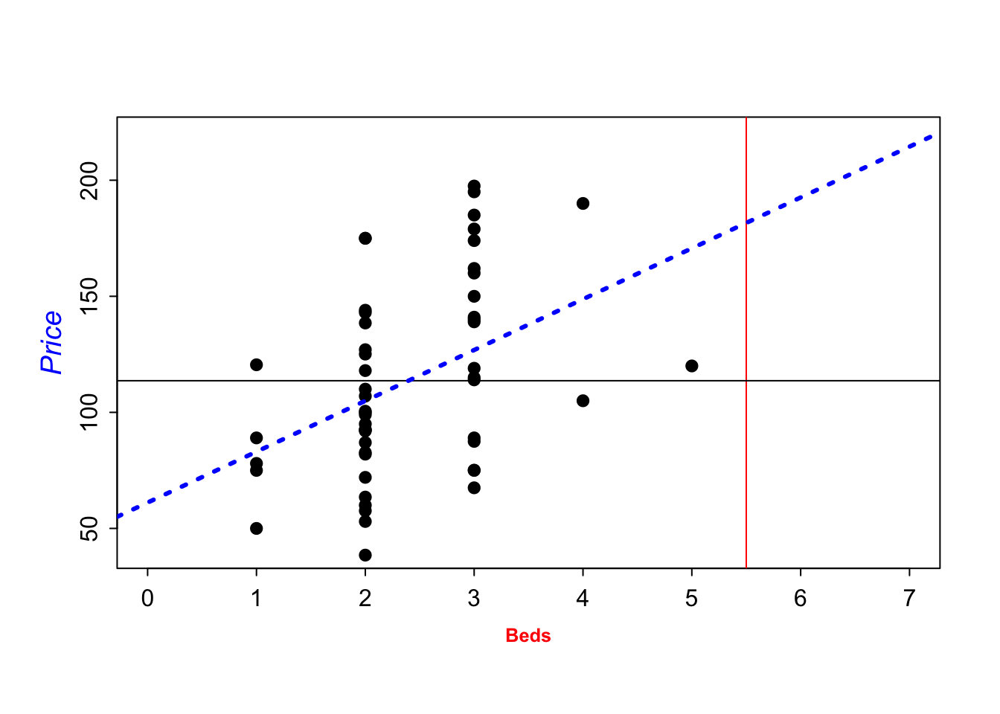</p>
</div>
</div>
<p>GGPlot also has basic and advanced options. From the basics:</p>
<div class="cell">
<div class="sourceCode cell-code" id="cb169"><pre class="sourceCode r code-with-copy"><code class="sourceCode r"><span id="cb169-1"><a href="#cb169-1" aria-hidden="true" tabindex="-1"></a><span class="fu">library</span>(ggplot2)</span>
<span id="cb169-2"><a href="#cb169-2" aria-hidden="true" tabindex="-1"></a><span class="co">#</span></span>
<span id="cb169-3"><a href="#cb169-3" aria-hidden="true" tabindex="-1"></a><span class="fu">ggplot</span>(HousesNY, <span class="fu">aes</span>(<span class="at">x=</span>Beds, <span class="at">y=</span>Price)) <span class="sc">+</span> </span>
<span id="cb169-4"><a href="#cb169-4" aria-hidden="true" tabindex="-1"></a>    <span class="fu">geom_point</span>()</span></code><button title="Copy to Clipboard" class="code-copy-button"><i class="bi"></i></button></pre></div>
<div class="cell-output-display">
<p></p>
</div>
</div>
<p>To more advanced:</p>
<div class="cell">
<div class="sourceCode cell-code" id="cb170"><pre class="sourceCode r code-with-copy"><code class="sourceCode r"><span id="cb170-1"><a href="#cb170-1" aria-hidden="true" tabindex="-1"></a><span class="fu">library</span>(ggplot2)</span>
<span id="cb170-2"><a href="#cb170-2" aria-hidden="true" tabindex="-1"></a><span class="fu">library</span>(hrbrthemes)</span>
<span id="cb170-3"><a href="#cb170-3" aria-hidden="true" tabindex="-1"></a></span>
<span id="cb170-4"><a href="#cb170-4" aria-hidden="true" tabindex="-1"></a><span class="co"># use options!</span></span>
<span id="cb170-5"><a href="#cb170-5" aria-hidden="true" tabindex="-1"></a><span class="fu">ggplot</span>(HousesNY, <span class="fu">aes</span>(<span class="at">x=</span>Beds, <span class="at">y=</span>Price)) <span class="sc">+</span> </span>
<span id="cb170-6"><a href="#cb170-6" aria-hidden="true" tabindex="-1"></a>    <span class="fu">geom_point</span>(</span>
<span id="cb170-7"><a href="#cb170-7" aria-hidden="true" tabindex="-1"></a>        <span class="at">color=</span><span class="st">"black"</span>,</span>
<span id="cb170-8"><a href="#cb170-8" aria-hidden="true" tabindex="-1"></a>        <span class="at">fill=</span><span class="st">"#69b3a2"</span>,</span>
<span id="cb170-9"><a href="#cb170-9" aria-hidden="true" tabindex="-1"></a>        <span class="at">shape=</span><span class="dv">22</span>,</span>
<span id="cb170-10"><a href="#cb170-10" aria-hidden="true" tabindex="-1"></a>        <span class="at">alpha=</span><span class="fl">0.5</span>,</span>
<span id="cb170-11"><a href="#cb170-11" aria-hidden="true" tabindex="-1"></a>        <span class="at">size=</span><span class="dv">6</span>,</span>
<span id="cb170-12"><a href="#cb170-12" aria-hidden="true" tabindex="-1"></a>        <span class="at">stroke =</span> <span class="dv">1</span></span>
<span id="cb170-13"><a href="#cb170-13" aria-hidden="true" tabindex="-1"></a>        ) <span class="sc">+</span></span>
<span id="cb170-14"><a href="#cb170-14" aria-hidden="true" tabindex="-1"></a>    <span class="fu">theme_ipsum</span>()</span></code><button title="Copy to Clipboard" class="code-copy-button"><i class="bi"></i></button></pre></div>
<div class="cell-output-display">
<p>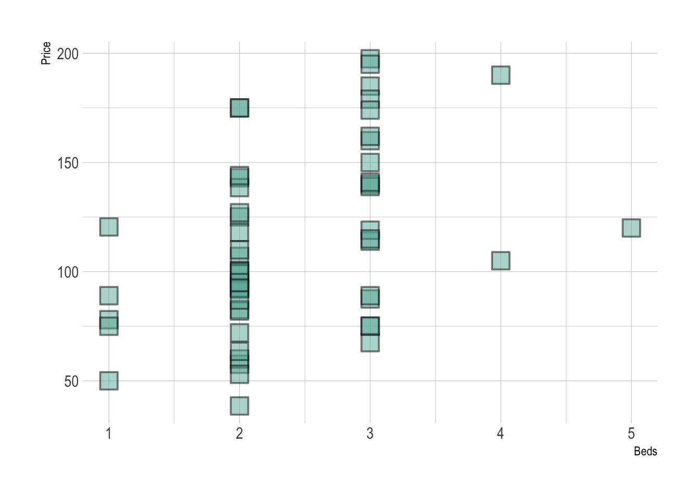</p>
</div>
</div>
<p>Adding a line of best fit is also easy, but fits less easily with R’s modelling commands:</p>
<div class="cell">
<div class="sourceCode cell-code" id="cb171"><pre class="sourceCode r code-with-copy"><code class="sourceCode r"><span id="cb171-1"><a href="#cb171-1" aria-hidden="true" tabindex="-1"></a><span class="co"># Library</span></span>
<span id="cb171-2"><a href="#cb171-2" aria-hidden="true" tabindex="-1"></a><span class="fu">library</span>(ggplot2)</span>
<span id="cb171-3"><a href="#cb171-3" aria-hidden="true" tabindex="-1"></a><span class="fu">library</span>(hrbrthemes)</span>
<span id="cb171-4"><a href="#cb171-4" aria-hidden="true" tabindex="-1"></a></span>
<span id="cb171-5"><a href="#cb171-5" aria-hidden="true" tabindex="-1"></a><span class="co"># Create dummy data</span></span>
<span id="cb171-6"><a href="#cb171-6" aria-hidden="true" tabindex="-1"></a>data <span class="ot">&lt;-</span> <span class="fu">data.frame</span>(</span>
<span id="cb171-7"><a href="#cb171-7" aria-hidden="true" tabindex="-1"></a>  <span class="at">cond =</span> <span class="fu">rep</span>(<span class="fu">c</span>(<span class="st">"condition_1"</span>, <span class="st">"condition_2"</span>), <span class="at">each=</span><span class="dv">10</span>), </span>
<span id="cb171-8"><a href="#cb171-8" aria-hidden="true" tabindex="-1"></a>  <span class="at">my_x =</span> <span class="dv">1</span><span class="sc">:</span><span class="dv">100</span> <span class="sc">+</span> <span class="fu">rnorm</span>(<span class="dv">100</span>,<span class="at">sd=</span><span class="dv">9</span>), </span>
<span id="cb171-9"><a href="#cb171-9" aria-hidden="true" tabindex="-1"></a>  <span class="at">my_y =</span> <span class="dv">1</span><span class="sc">:</span><span class="dv">100</span> <span class="sc">+</span> <span class="fu">rnorm</span>(<span class="dv">100</span>,<span class="at">sd=</span><span class="dv">16</span>) </span>
<span id="cb171-10"><a href="#cb171-10" aria-hidden="true" tabindex="-1"></a>)</span>
<span id="cb171-11"><a href="#cb171-11" aria-hidden="true" tabindex="-1"></a></span>
<span id="cb171-12"><a href="#cb171-12" aria-hidden="true" tabindex="-1"></a><span class="co"># Basic scatter plot.</span></span>
<span id="cb171-13"><a href="#cb171-13" aria-hidden="true" tabindex="-1"></a>p1 <span class="ot">&lt;-</span> <span class="fu">ggplot</span>(data, <span class="fu">aes</span>(<span class="at">x=</span>my_x, <span class="at">y=</span>my_y)) <span class="sc">+</span> </span>
<span id="cb171-14"><a href="#cb171-14" aria-hidden="true" tabindex="-1"></a>  <span class="fu">geom_point</span>( <span class="at">color=</span><span class="st">"#69b3a2"</span>) <span class="sc">+</span></span>
<span id="cb171-15"><a href="#cb171-15" aria-hidden="true" tabindex="-1"></a>  <span class="fu">theme_ipsum</span>()</span>
<span id="cb171-16"><a href="#cb171-16" aria-hidden="true" tabindex="-1"></a> </span>
<span id="cb171-17"><a href="#cb171-17" aria-hidden="true" tabindex="-1"></a><span class="co"># with linear trend</span></span>
<span id="cb171-18"><a href="#cb171-18" aria-hidden="true" tabindex="-1"></a>p2 <span class="ot">&lt;-</span> <span class="fu">ggplot</span>(data, <span class="fu">aes</span>(<span class="at">x=</span>my_x, <span class="at">y=</span>my_y)) <span class="sc">+</span></span>
<span id="cb171-19"><a href="#cb171-19" aria-hidden="true" tabindex="-1"></a>  <span class="fu">geom_point</span>() <span class="sc">+</span></span>
<span id="cb171-20"><a href="#cb171-20" aria-hidden="true" tabindex="-1"></a>  <span class="fu">geom_smooth</span>(<span class="at">method=</span>lm , <span class="at">color=</span><span class="st">"red"</span>, <span class="at">se=</span><span class="cn">FALSE</span>) <span class="sc">+</span></span>
<span id="cb171-21"><a href="#cb171-21" aria-hidden="true" tabindex="-1"></a>  <span class="fu">theme_ipsum</span>()</span>
<span id="cb171-22"><a href="#cb171-22" aria-hidden="true" tabindex="-1"></a></span>
<span id="cb171-23"><a href="#cb171-23" aria-hidden="true" tabindex="-1"></a><span class="co"># linear trend + confidence interval</span></span>
<span id="cb171-24"><a href="#cb171-24" aria-hidden="true" tabindex="-1"></a>p3 <span class="ot">&lt;-</span> <span class="fu">ggplot</span>(data, <span class="fu">aes</span>(<span class="at">x=</span>my_x, <span class="at">y=</span>my_y)) <span class="sc">+</span></span>
<span id="cb171-25"><a href="#cb171-25" aria-hidden="true" tabindex="-1"></a>  <span class="fu">geom_point</span>() <span class="sc">+</span></span>
<span id="cb171-26"><a href="#cb171-26" aria-hidden="true" tabindex="-1"></a>  <span class="fu">geom_smooth</span>(<span class="at">method=</span>lm , <span class="at">color=</span><span class="st">"red"</span>, <span class="at">fill=</span><span class="st">"#69b3a2"</span>, <span class="at">se=</span><span class="cn">TRUE</span>) <span class="sc">+</span></span>
<span id="cb171-27"><a href="#cb171-27" aria-hidden="true" tabindex="-1"></a>  <span class="fu">theme_ipsum</span>()</span>
<span id="cb171-28"><a href="#cb171-28" aria-hidden="true" tabindex="-1"></a></span>
<span id="cb171-29"><a href="#cb171-29" aria-hidden="true" tabindex="-1"></a>p1</span></code><button title="Copy to Clipboard" class="code-copy-button"><i class="bi"></i></button></pre></div>
<div class="cell-output-display">
<p>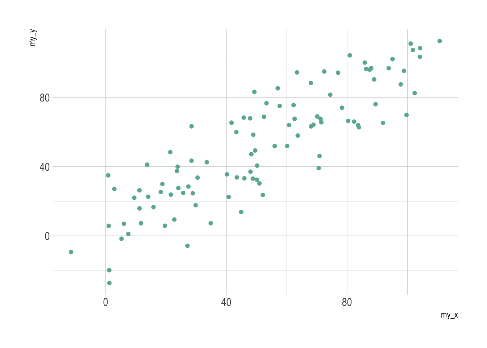</p>
</div>
<div class="sourceCode cell-code" id="cb172"><pre class="sourceCode r code-with-copy"><code class="sourceCode r"><span id="cb172-1"><a href="#cb172-1" aria-hidden="true" tabindex="-1"></a>p2</span></code><button title="Copy to Clipboard" class="code-copy-button"><i class="bi"></i></button></pre></div>
<div class="cell-output cell-output-stderr">
<pre><code>`geom_smooth()` using formula = 'y ~ x'</code></pre>
</div>
<div class="cell-output-display">
<p>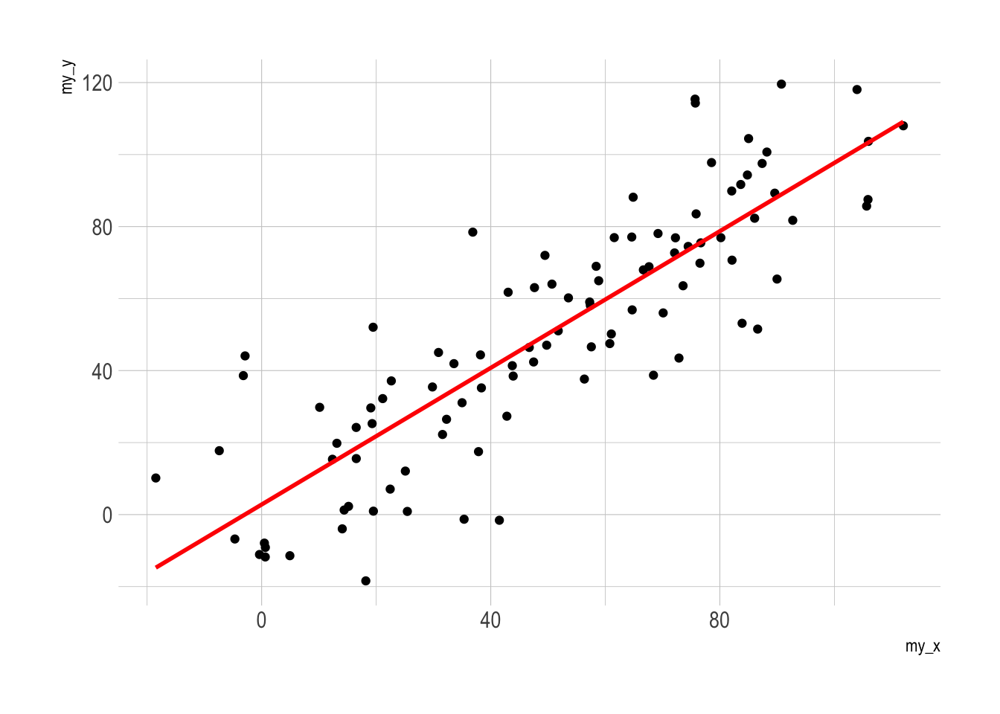</p>
</div>
<div class="sourceCode cell-code" id="cb174"><pre class="sourceCode r code-with-copy"><code class="sourceCode r"><span id="cb174-1"><a href="#cb174-1" aria-hidden="true" tabindex="-1"></a>p3</span></code><button title="Copy to Clipboard" class="code-copy-button"><i class="bi"></i></button></pre></div>
<div class="cell-output cell-output-stderr">
<pre><code>`geom_smooth()` using formula = 'y ~ x'</code></pre>
</div>
<div class="cell-output-display">
<p>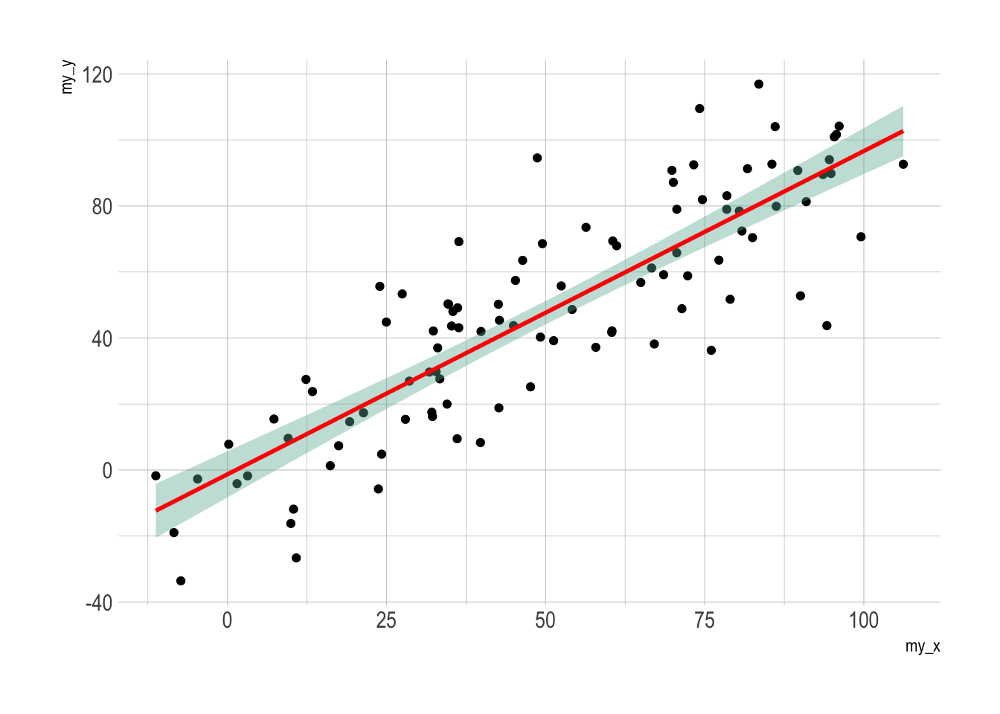</p>
</div>
</div>
<p>Or using the plotly library to make your plots interactive (really useful, try zooming in or clicking on a few points)</p>
<div class="cell">
<div class="sourceCode cell-code" id="cb176"><pre class="sourceCode r code-with-copy"><code class="sourceCode r"><span id="cb176-1"><a href="#cb176-1" aria-hidden="true" tabindex="-1"></a><span class="co"># create the plot, save it as "p" rather than print immediately</span></span>
<span id="cb176-2"><a href="#cb176-2" aria-hidden="true" tabindex="-1"></a>myplot <span class="ot">&lt;-</span>   <span class="fu">ggplot</span>(HousesNY, <span class="fu">aes</span>(<span class="at">x=</span>Beds, <span class="at">y=</span>Price, <span class="at">label=</span>Baths)) <span class="sc">+</span> </span>
<span id="cb176-3"><a href="#cb176-3" aria-hidden="true" tabindex="-1"></a>            <span class="fu">geom_point</span>(<span class="at">alpha=</span>.<span class="dv">5</span>) <span class="sc">+</span></span>
<span id="cb176-4"><a href="#cb176-4" aria-hidden="true" tabindex="-1"></a>            <span class="fu">theme_classic</span>()</span>
<span id="cb176-5"><a href="#cb176-5" aria-hidden="true" tabindex="-1"></a>            </span>
<span id="cb176-6"><a href="#cb176-6" aria-hidden="true" tabindex="-1"></a><span class="co"># and plot interactively</span></span>
<span id="cb176-7"><a href="#cb176-7" aria-hidden="true" tabindex="-1"></a><span class="fu">ggplotly</span>(myplot)</span></code><button title="Copy to Clipboard" class="code-copy-button"><i class="bi"></i></button></pre></div>
<div class="cell-output-display">
<div id="htmlwidget-a163150d114f9db064c0" style="width:100%;height:464px;" class="plotly html-widget"></div>
<script type="application/json" data-for="htmlwidget-a163150d114f9db064c0">{"x":{"data":[{"x":[2,5,3,2,2,1,1,3,3,2,2,2,2,3,2,2,3,2,3,2,3,3,4,3,2,1,2,2,3,2,2,2,2,2,2,1,2,2,2,3,1,3,3,3,3,2,3,2,3,3,4,3,2],"y":[57.6,120,150,143,92.5,50,89,140,197.5,125.1,175,60,138.5,160,63.5,107,185,82.7,75,118,87.5,67.5,105,114,100.5,78,99,144,179,110,175,100,53,92,127,120.5,72,95,38.5,139,75,174,119,89,75.1,92.5,141,82,162,195,190,115,87],"text":["Beds: 2<br />Price:  57.6<br />Baths: 2.0","Beds: 5<br />Price: 120.0<br />Baths: 2.0","Beds: 3<br />Price: 150.0<br />Baths: 2.0","Beds: 2<br />Price: 143.0<br />Baths: 2.0","Beds: 2<br />Price:  92.5<br />Baths: 1.0","Beds: 1<br />Price:  50.0<br />Baths: 1.0","Beds: 1<br />Price:  89.0<br />Baths: 2.0","Beds: 3<br />Price: 140.0<br />Baths: 3.0","Beds: 3<br />Price: 197.5<br />Baths: 2.5","Beds: 2<br />Price: 125.1<br />Baths: 2.0","Beds: 2<br />Price: 175.0<br />Baths: 2.0","Beds: 2<br />Price:  60.0<br />Baths: 1.0","Beds: 2<br />Price: 138.5<br />Baths: 2.0","Beds: 3<br />Price: 160.0<br />Baths: 2.0","Beds: 2<br />Price:  63.5<br />Baths: 2.0","Beds: 2<br />Price: 107.0<br />Baths: 1.0","Beds: 3<br />Price: 185.0<br />Baths: 3.5","Beds: 2<br />Price:  82.7<br />Baths: 1.0","Beds: 3<br />Price:  75.0<br />Baths: 2.0","Beds: 2<br />Price: 118.0<br />Baths: 1.0","Beds: 3<br />Price:  87.5<br />Baths: 2.0","Beds: 3<br />Price:  67.5<br />Baths: 1.0","Beds: 4<br />Price: 105.0<br />Baths: 2.0","Beds: 3<br />Price: 114.0<br />Baths: 2.0","Beds: 2<br />Price: 100.5<br />Baths: 2.0","Beds: 1<br />Price:  78.0<br />Baths: 1.0","Beds: 2<br />Price:  99.0<br />Baths: 1.0","Beds: 2<br />Price: 144.0<br />Baths: 1.5","Beds: 3<br />Price: 179.0<br />Baths: 2.0","Beds: 2<br />Price: 110.0<br />Baths: 1.5","Beds: 2<br />Price: 175.0<br />Baths: 2.0","Beds: 2<br />Price: 100.0<br />Baths: 2.0","Beds: 2<br />Price:  53.0<br />Baths: 1.0","Beds: 2<br />Price:  92.0<br />Baths: 2.0","Beds: 2<br />Price: 127.0<br />Baths: 2.0","Beds: 1<br />Price: 120.5<br />Baths: 2.0","Beds: 2<br />Price:  72.0<br />Baths: 2.0","Beds: 2<br />Price:  95.0<br />Baths: 2.0","Beds: 2<br />Price:  38.5<br />Baths: 1.0","Beds: 3<br />Price: 139.0<br />Baths: 2.0","Beds: 1<br />Price:  75.0<br />Baths: 2.0","Beds: 3<br />Price: 174.0<br />Baths: 3.0","Beds: 3<br />Price: 119.0<br />Baths: 2.0","Beds: 3<br />Price:  89.0<br />Baths: 1.0","Beds: 3<br />Price:  75.1<br />Baths: 2.0","Beds: 2<br />Price:  92.5<br />Baths: 2.0","Beds: 3<br />Price: 141.0<br />Baths: 1.0","Beds: 2<br />Price:  82.0<br />Baths: 3.0","Beds: 3<br />Price: 162.0<br />Baths: 1.5","Beds: 3<br />Price: 195.0<br />Baths: 3.0","Beds: 4<br />Price: 190.0<br />Baths: 3.5","Beds: 3<br />Price: 115.0<br />Baths: 2.0","Beds: 2<br />Price:  87.0<br />Baths: 1.5"],"type":"scatter","mode":"markers","marker":{"autocolorscale":false,"color":"rgba(0,0,0,1)","opacity":0.5,"size":5.66929133858268,"symbol":"circle","line":{"width":1.88976377952756,"color":"rgba(0,0,0,1)"}},"hoveron":"points","showlegend":false,"xaxis":"x","yaxis":"y","hoverinfo":"text","frame":null}],"layout":{"margin":{"t":26.2283105022831,"r":7.30593607305936,"b":40.1826484018265,"l":43.1050228310502},"plot_bgcolor":"rgba(255,255,255,1)","paper_bgcolor":"rgba(255,255,255,1)","font":{"color":"rgba(0,0,0,1)","family":"","size":14.6118721461187},"xaxis":{"domain":[0,1],"automargin":true,"type":"linear","autorange":false,"range":[0.8,5.2],"tickmode":"array","ticktext":["1","2","3","4","5"],"tickvals":[1,2,3,4,5],"categoryorder":"array","categoryarray":["1","2","3","4","5"],"nticks":null,"ticks":"outside","tickcolor":"rgba(51,51,51,1)","ticklen":3.65296803652968,"tickwidth":0,"showticklabels":true,"tickfont":{"color":"rgba(77,77,77,1)","family":"","size":11.689497716895},"tickangle":-0,"showline":true,"linecolor":"rgba(0,0,0,1)","linewidth":0,"showgrid":false,"gridcolor":null,"gridwidth":0,"zeroline":false,"anchor":"y","title":{"text":"Beds","font":{"color":"rgba(0,0,0,1)","family":"","size":14.6118721461187}},"hoverformat":".2f"},"yaxis":{"domain":[0,1],"automargin":true,"type":"linear","autorange":false,"range":[30.55,205.45],"tickmode":"array","ticktext":["50","100","150","200"],"tickvals":[50,100,150,200],"categoryorder":"array","categoryarray":["50","100","150","200"],"nticks":null,"ticks":"outside","tickcolor":"rgba(51,51,51,1)","ticklen":3.65296803652968,"tickwidth":0,"showticklabels":true,"tickfont":{"color":"rgba(77,77,77,1)","family":"","size":11.689497716895},"tickangle":-0,"showline":true,"linecolor":"rgba(0,0,0,1)","linewidth":0,"showgrid":false,"gridcolor":null,"gridwidth":0,"zeroline":false,"anchor":"x","title":{"text":"Price","font":{"color":"rgba(0,0,0,1)","family":"","size":14.6118721461187}},"hoverformat":".2f"},"shapes":[{"type":"rect","fillcolor":null,"line":{"color":null,"width":0,"linetype":[]},"yref":"paper","xref":"paper","x0":0,"x1":1,"y0":0,"y1":1}],"showlegend":false,"legend":{"bgcolor":"rgba(255,255,255,1)","bordercolor":"transparent","borderwidth":0,"font":{"color":"rgba(0,0,0,1)","family":"","size":11.689497716895}},"hovermode":"closest","barmode":"relative"},"config":{"doubleClick":"reset","modeBarButtonsToAdd":["hoverclosest","hovercompare"],"showSendToCloud":false},"source":"A","attrs":{"17cd833968768":{"x":{},"y":{},"label":{},"type":"scatter"}},"cur_data":"17cd833968768","visdat":{"17cd833968768":["function (y) ","x"]},"highlight":{"on":"plotly_click","persistent":false,"dynamic":false,"selectize":false,"opacityDim":0.2,"selected":{"opacity":1},"debounce":0},"shinyEvents":["plotly_hover","plotly_click","plotly_selected","plotly_relayout","plotly_brushed","plotly_brushing","plotly_clickannotation","plotly_doubleclick","plotly_deselect","plotly_afterplot","plotly_sunburstclick"],"base_url":"https://plot.ly"},"evals":[],"jsHooks":[]}</script>
</div>
</div>
<p>It’s also very easy to add in color to see another variable. For example</p>
<div class="cell">
<div class="sourceCode cell-code" id="cb177"><pre class="sourceCode r code-with-copy"><code class="sourceCode r"><span id="cb177-1"><a href="#cb177-1" aria-hidden="true" tabindex="-1"></a><span class="co"># create the plot, save it as "p" rather than print immediately</span></span>
<span id="cb177-2"><a href="#cb177-2" aria-hidden="true" tabindex="-1"></a>myplot <span class="ot">&lt;-</span>   <span class="fu">ggplot</span>(HousesNY, <span class="fu">aes</span>(<span class="at">x=</span>Beds, <span class="at">y=</span>Price,<span class="at">color=</span>Baths)) <span class="sc">+</span> </span>
<span id="cb177-3"><a href="#cb177-3" aria-hidden="true" tabindex="-1"></a>            <span class="fu">geom_point</span>(<span class="at">alpha=</span>.<span class="dv">5</span>) <span class="sc">+</span></span>
<span id="cb177-4"><a href="#cb177-4" aria-hidden="true" tabindex="-1"></a>            <span class="fu">theme_classic</span>()<span class="sc">+</span></span>
<span id="cb177-5"><a href="#cb177-5" aria-hidden="true" tabindex="-1"></a>            <span class="fu">scale_color_gradient</span>(<span class="at">low=</span><span class="st">"blue"</span>, <span class="at">high=</span><span class="st">"red"</span>)</span>
<span id="cb177-6"><a href="#cb177-6" aria-hidden="true" tabindex="-1"></a></span>
<span id="cb177-7"><a href="#cb177-7" aria-hidden="true" tabindex="-1"></a><span class="co"># and plot interactively</span></span>
<span id="cb177-8"><a href="#cb177-8" aria-hidden="true" tabindex="-1"></a><span class="fu">ggplotly</span>(myplot)</span></code><button title="Copy to Clipboard" class="code-copy-button"><i class="bi"></i></button></pre></div>
<div class="cell-output-display">
<div id="htmlwidget-fd05d2a165feca296787" style="width:100%;height:464px;" class="plotly html-widget"></div>
<script type="application/json" data-for="htmlwidget-fd05d2a165feca296787">{"x":{"data":[{"x":[2,5,3,2,2,1,1,3,3,2,2,2,2,3,2,2,3,2,3,2,3,3,4,3,2,1,2,2,3,2,2,2,2,2,2,1,2,2,2,3,1,3,3,3,3,2,3,2,3,3,4,3,2],"y":[57.6,120,150,143,92.5,50,89,140,197.5,125.1,175,60,138.5,160,63.5,107,185,82.7,75,118,87.5,67.5,105,114,100.5,78,99,144,179,110,175,100,53,92,127,120.5,72,95,38.5,139,75,174,119,89,75.1,92.5,141,82,162,195,190,115,87],"text":["Beds: 2<br />Price:  57.6<br />Baths: 2.0","Beds: 5<br />Price: 120.0<br />Baths: 2.0","Beds: 3<br />Price: 150.0<br />Baths: 2.0","Beds: 2<br />Price: 143.0<br />Baths: 2.0","Beds: 2<br />Price:  92.5<br />Baths: 1.0","Beds: 1<br />Price:  50.0<br />Baths: 1.0","Beds: 1<br />Price:  89.0<br />Baths: 2.0","Beds: 3<br />Price: 140.0<br />Baths: 3.0","Beds: 3<br />Price: 197.5<br />Baths: 2.5","Beds: 2<br />Price: 125.1<br />Baths: 2.0","Beds: 2<br />Price: 175.0<br />Baths: 2.0","Beds: 2<br />Price:  60.0<br />Baths: 1.0","Beds: 2<br />Price: 138.5<br />Baths: 2.0","Beds: 3<br />Price: 160.0<br />Baths: 2.0","Beds: 2<br />Price:  63.5<br />Baths: 2.0","Beds: 2<br />Price: 107.0<br />Baths: 1.0","Beds: 3<br />Price: 185.0<br />Baths: 3.5","Beds: 2<br />Price:  82.7<br />Baths: 1.0","Beds: 3<br />Price:  75.0<br />Baths: 2.0","Beds: 2<br />Price: 118.0<br />Baths: 1.0","Beds: 3<br />Price:  87.5<br />Baths: 2.0","Beds: 3<br />Price:  67.5<br />Baths: 1.0","Beds: 4<br />Price: 105.0<br />Baths: 2.0","Beds: 3<br />Price: 114.0<br />Baths: 2.0","Beds: 2<br />Price: 100.5<br />Baths: 2.0","Beds: 1<br />Price:  78.0<br />Baths: 1.0","Beds: 2<br />Price:  99.0<br />Baths: 1.0","Beds: 2<br />Price: 144.0<br />Baths: 1.5","Beds: 3<br />Price: 179.0<br />Baths: 2.0","Beds: 2<br />Price: 110.0<br />Baths: 1.5","Beds: 2<br />Price: 175.0<br />Baths: 2.0","Beds: 2<br />Price: 100.0<br />Baths: 2.0","Beds: 2<br />Price:  53.0<br />Baths: 1.0","Beds: 2<br />Price:  92.0<br />Baths: 2.0","Beds: 2<br />Price: 127.0<br />Baths: 2.0","Beds: 1<br />Price: 120.5<br />Baths: 2.0","Beds: 2<br />Price:  72.0<br />Baths: 2.0","Beds: 2<br />Price:  95.0<br />Baths: 2.0","Beds: 2<br />Price:  38.5<br />Baths: 1.0","Beds: 3<br />Price: 139.0<br />Baths: 2.0","Beds: 1<br />Price:  75.0<br />Baths: 2.0","Beds: 3<br />Price: 174.0<br />Baths: 3.0","Beds: 3<br />Price: 119.0<br />Baths: 2.0","Beds: 3<br />Price:  89.0<br />Baths: 1.0","Beds: 3<br />Price:  75.1<br />Baths: 2.0","Beds: 2<br />Price:  92.5<br />Baths: 2.0","Beds: 3<br />Price: 141.0<br />Baths: 1.0","Beds: 2<br />Price:  82.0<br />Baths: 3.0","Beds: 3<br />Price: 162.0<br />Baths: 1.5","Beds: 3<br />Price: 195.0<br />Baths: 3.0","Beds: 4<br />Price: 190.0<br />Baths: 3.5","Beds: 3<br />Price: 115.0<br />Baths: 2.0","Beds: 2<br />Price:  87.0<br />Baths: 1.5"],"type":"scatter","mode":"markers","marker":{"autocolorscale":false,"color":["rgba(186,0,159,1)","rgba(186,0,159,1)","rgba(186,0,159,1)","rgba(186,0,159,1)","rgba(0,0,255,1)","rgba(0,0,255,1)","rgba(186,0,159,1)","rgba(237,0,68,1)","rgba(215,0,114,1)","rgba(186,0,159,1)","rgba(186,0,159,1)","rgba(0,0,255,1)","rgba(186,0,159,1)","rgba(186,0,159,1)","rgba(186,0,159,1)","rgba(0,0,255,1)","rgba(255,0,0,1)","rgba(0,0,255,1)","rgba(186,0,159,1)","rgba(0,0,255,1)","rgba(186,0,159,1)","rgba(0,0,255,1)","rgba(186,0,159,1)","rgba(186,0,159,1)","rgba(186,0,159,1)","rgba(0,0,255,1)","rgba(0,0,255,1)","rgba(141,0,206,1)","rgba(186,0,159,1)","rgba(141,0,206,1)","rgba(186,0,159,1)","rgba(186,0,159,1)","rgba(0,0,255,1)","rgba(186,0,159,1)","rgba(186,0,159,1)","rgba(186,0,159,1)","rgba(186,0,159,1)","rgba(186,0,159,1)","rgba(0,0,255,1)","rgba(186,0,159,1)","rgba(186,0,159,1)","rgba(237,0,68,1)","rgba(186,0,159,1)","rgba(0,0,255,1)","rgba(186,0,159,1)","rgba(186,0,159,1)","rgba(0,0,255,1)","rgba(237,0,68,1)","rgba(141,0,206,1)","rgba(237,0,68,1)","rgba(255,0,0,1)","rgba(186,0,159,1)","rgba(141,0,206,1)"],"opacity":0.5,"size":5.66929133858268,"symbol":"circle","line":{"width":1.88976377952756,"color":["rgba(186,0,159,1)","rgba(186,0,159,1)","rgba(186,0,159,1)","rgba(186,0,159,1)","rgba(0,0,255,1)","rgba(0,0,255,1)","rgba(186,0,159,1)","rgba(237,0,68,1)","rgba(215,0,114,1)","rgba(186,0,159,1)","rgba(186,0,159,1)","rgba(0,0,255,1)","rgba(186,0,159,1)","rgba(186,0,159,1)","rgba(186,0,159,1)","rgba(0,0,255,1)","rgba(255,0,0,1)","rgba(0,0,255,1)","rgba(186,0,159,1)","rgba(0,0,255,1)","rgba(186,0,159,1)","rgba(0,0,255,1)","rgba(186,0,159,1)","rgba(186,0,159,1)","rgba(186,0,159,1)","rgba(0,0,255,1)","rgba(0,0,255,1)","rgba(141,0,206,1)","rgba(186,0,159,1)","rgba(141,0,206,1)","rgba(186,0,159,1)","rgba(186,0,159,1)","rgba(0,0,255,1)","rgba(186,0,159,1)","rgba(186,0,159,1)","rgba(186,0,159,1)","rgba(186,0,159,1)","rgba(186,0,159,1)","rgba(0,0,255,1)","rgba(186,0,159,1)","rgba(186,0,159,1)","rgba(237,0,68,1)","rgba(186,0,159,1)","rgba(0,0,255,1)","rgba(186,0,159,1)","rgba(186,0,159,1)","rgba(0,0,255,1)","rgba(237,0,68,1)","rgba(141,0,206,1)","rgba(237,0,68,1)","rgba(255,0,0,1)","rgba(186,0,159,1)","rgba(141,0,206,1)"]}},"hoveron":"points","showlegend":false,"xaxis":"x","yaxis":"y","hoverinfo":"text","frame":null},{"x":[1],"y":[50],"name":"99_6ccb91eea3e6eb102a64eebb95be0905","type":"scatter","mode":"markers","opacity":0,"hoverinfo":"skip","showlegend":false,"marker":{"color":[0,1],"colorscale":[[0,"#0000FF"],[0.00334448160535121,"#0F00FE"],[0.00668896321070234,"#1900FD"],[0.0100334448160536,"#2000FD"],[0.0133779264214047,"#2600FC"],[0.0167224080267559,"#2B00FB"],[0.020066889632107,"#2F00FA"],[0.0234113712374582,"#3300F9"],[0.0267558528428093,"#3700F8"],[0.0301003344481606,"#3A00F8"],[0.0334448160535117,"#3E00F7"],[0.0367892976588629,"#4100F6"],[0.040133779264214,"#4400F5"],[0.0434782608695652,"#4600F4"],[0.0468227424749164,"#4900F3"],[0.0501672240802676,"#4B00F3"],[0.0535117056856187,"#4E00F2"],[0.0568561872909699,"#5000F1"],[0.060200668896321,"#5200F0"],[0.0635451505016722,"#5400EF"],[0.0668896321070234,"#5600EF"],[0.0702341137123746,"#5800EE"],[0.0735785953177258,"#5A00ED"],[0.0769230769230769,"#5C00EC"],[0.080267558528428,"#5E00EB"],[0.0836120401337793,"#6000EB"],[0.0869565217391305,"#6200EA"],[0.0903010033444816,"#6300E9"],[0.0936454849498328,"#6500E8"],[0.0969899665551839,"#6700E7"],[0.100334448160535,"#6800E6"],[0.103678929765886,"#6A00E6"],[0.107023411371237,"#6B00E5"],[0.110367892976589,"#6D00E4"],[0.11371237458194,"#6E00E3"],[0.117056856187291,"#7000E2"],[0.120401337792642,"#7100E2"],[0.123745819397993,"#7200E1"],[0.127090301003344,"#7400E0"],[0.130434782608696,"#7500DF"],[0.133779264214047,"#7600DE"],[0.137123745819398,"#7800DE"],[0.140468227424749,"#7900DD"],[0.1438127090301,"#7A00DC"],[0.147157190635451,"#7B00DB"],[0.150501672240803,"#7D00DA"],[0.153846153846154,"#7E00DA"],[0.157190635451505,"#7F00D9"],[0.160535117056856,"#8000D8"],[0.163879598662207,"#8100D7"],[0.167224080267559,"#8200D6"],[0.17056856187291,"#8400D5"],[0.173913043478261,"#8500D5"],[0.177257525083612,"#8600D4"],[0.180602006688963,"#8700D3"],[0.183946488294314,"#8800D2"],[0.187290969899666,"#8900D1"],[0.190635451505017,"#8A00D1"],[0.193979933110368,"#8B00D0"],[0.197324414715719,"#8C00CF"],[0.20066889632107,"#8D00CE"],[0.204013377926421,"#8E00CD"],[0.207357859531773,"#8F00CD"],[0.210702341137124,"#9000CC"],[0.214046822742475,"#9100CB"],[0.217391304347826,"#9200CA"],[0.220735785953177,"#9300CA"],[0.224080267558528,"#9400C9"],[0.22742474916388,"#9400C8"],[0.230769230769231,"#9500C7"],[0.234113712374582,"#9600C6"],[0.237458193979933,"#9700C6"],[0.240802675585284,"#9800C5"],[0.244147157190635,"#9900C4"],[0.247491638795987,"#9A00C3"],[0.250836120401338,"#9B00C2"],[0.254180602006689,"#9B00C2"],[0.25752508361204,"#9C00C1"],[0.260869565217391,"#9D00C0"],[0.264214046822742,"#9E00BF"],[0.267558528428094,"#9F00BE"],[0.270903010033445,"#9F00BE"],[0.274247491638796,"#A000BD"],[0.277591973244147,"#A100BC"],[0.280936454849498,"#A200BB"],[0.28428093645485,"#A300BA"],[0.287625418060201,"#A300BA"],[0.290969899665552,"#A400B9"],[0.294314381270903,"#A500B8"],[0.297658862876254,"#A600B7"],[0.301003344481605,"#A600B7"],[0.304347826086956,"#A700B6"],[0.307692307692308,"#A800B5"],[0.311036789297659,"#A800B4"],[0.31438127090301,"#A900B3"],[0.317725752508361,"#AA00B3"],[0.321070234113712,"#AB00B2"],[0.324414715719064,"#AB00B1"],[0.327759197324415,"#AC00B0"],[0.331103678929766,"#AD00AF"],[0.334448160535117,"#AD00AF"],[0.337792642140468,"#AE00AE"],[0.341137123745819,"#AF00AD"],[0.344481605351171,"#AF00AC"],[0.347826086956522,"#B000AC"],[0.351170568561873,"#B100AB"],[0.354515050167224,"#B100AA"],[0.357859531772575,"#B200A9"],[0.361204013377926,"#B300A8"],[0.364548494983278,"#B300A8"],[0.367892976588629,"#B400A7"],[0.37123745819398,"#B400A6"],[0.374581939799331,"#B500A5"],[0.377926421404682,"#B600A5"],[0.381270903010033,"#B600A4"],[0.384615384615385,"#B700A3"],[0.387959866220736,"#B700A2"],[0.391304347826087,"#B800A1"],[0.394648829431438,"#B900A1"],[0.397993311036789,"#B900A0"],[0.401337792642141,"#BA009F"],[0.404682274247492,"#BA009E"],[0.408026755852843,"#BB009E"],[0.411371237458194,"#BC009D"],[0.414715719063545,"#BC009C"],[0.418060200668896,"#BD009B"],[0.421404682274247,"#BD009B"],[0.424749163879598,"#BE009A"],[0.42809364548495,"#BE0099"],[0.431438127090301,"#BF0098"],[0.434782608695652,"#BF0097"],[0.438127090301003,"#C00097"],[0.441471571906354,"#C10096"],[0.444816053511706,"#C10095"],[0.448160535117057,"#C20094"],[0.451505016722408,"#C20094"],[0.454849498327759,"#C30093"],[0.45819397993311,"#C30092"],[0.461538461538462,"#C40091"],[0.464882943143813,"#C40091"],[0.468227424749164,"#C50090"],[0.471571906354515,"#C5008F"],[0.474916387959866,"#C6008E"],[0.478260869565217,"#C6008D"],[0.481605351170569,"#C7008D"],[0.48494983277592,"#C7008C"],[0.488294314381271,"#C8008B"],[0.491638795986622,"#C8008A"],[0.494983277591973,"#C9008A"],[0.498327759197324,"#C90089"],[0.501672240802675,"#CA0088"],[0.505016722408027,"#CA0087"],[0.508361204013378,"#CB0087"],[0.511705685618729,"#CB0086"],[0.51505016722408,"#CC0085"],[0.518394648829431,"#CC0084"],[0.521739130434783,"#CD0084"],[0.525083612040134,"#CD0083"],[0.528428093645485,"#CE0082"],[0.531772575250836,"#CE0081"],[0.535117056856187,"#CE0080"],[0.538461538461538,"#CF0080"],[0.54180602006689,"#CF007F"],[0.545150501672241,"#D0007E"],[0.548494983277592,"#D0007D"],[0.551839464882943,"#D1007D"],[0.555183946488294,"#D1007C"],[0.558528428093645,"#D2007B"],[0.561872909698997,"#D2007A"],[0.565217391304348,"#D3007A"],[0.568561872909699,"#D30079"],[0.57190635451505,"#D30078"],[0.575250836120401,"#D40077"],[0.578595317725753,"#D40077"],[0.581939799331104,"#D50076"],[0.585284280936455,"#D50075"],[0.588628762541806,"#D60074"],[0.591973244147157,"#D60074"],[0.595317725752508,"#D60073"],[0.598662207357859,"#D70072"],[0.602006688963211,"#D70071"],[0.605351170568562,"#D80071"],[0.608695652173913,"#D80070"],[0.612040133779264,"#D8006F"],[0.615384615384615,"#D9006E"],[0.618729096989967,"#D9006E"],[0.622073578595318,"#DA006D"],[0.625418060200669,"#DA006C"],[0.62876254180602,"#DA006B"],[0.632107023411371,"#DB006A"],[0.635451505016722,"#DB006A"],[0.638795986622074,"#DC0069"],[0.642140468227425,"#DC0068"],[0.645484949832776,"#DC0067"],[0.648829431438127,"#DD0067"],[0.652173913043478,"#DD0066"],[0.65551839464883,"#DE0065"],[0.658862876254181,"#DE0064"],[0.662207357859532,"#DE0064"],[0.665551839464883,"#DF0063"],[0.668896321070234,"#DF0062"],[0.672240802675585,"#E00061"],[0.675585284280936,"#E00061"],[0.678929765886288,"#E00060"],[0.682274247491639,"#E1005F"],[0.68561872909699,"#E1005E"],[0.688963210702341,"#E1005E"],[0.692307692307692,"#E2005D"],[0.695652173913043,"#E2005C"],[0.698996655518395,"#E3005B"],[0.702341137123746,"#E3005B"],[0.705685618729097,"#E3005A"],[0.709030100334448,"#E40059"],[0.712374581939799,"#E40058"],[0.71571906354515,"#E40057"],[0.719063545150502,"#E50057"],[0.722408026755853,"#E50056"],[0.725752508361204,"#E50055"],[0.729096989966555,"#E60054"],[0.732441471571906,"#E60054"],[0.735785953177258,"#E60053"],[0.739130434782609,"#E70052"],[0.74247491638796,"#E70051"],[0.745819397993311,"#E80050"],[0.749163879598662,"#E80050"],[0.752508361204013,"#E8004F"],[0.755852842809364,"#E9004E"],[0.759197324414716,"#E9004D"],[0.762541806020067,"#E9004D"],[0.765886287625418,"#EA004C"],[0.769230769230769,"#EA004B"],[0.77257525083612,"#EA004A"],[0.775919732441471,"#EB0049"],[0.779264214046823,"#EB0049"],[0.782608695652174,"#EB0048"],[0.785953177257525,"#EC0047"],[0.789297658862876,"#EC0046"],[0.792642140468227,"#EC0046"],[0.795986622073579,"#ED0045"],[0.79933110367893,"#ED0044"],[0.802675585284281,"#ED0043"],[0.806020066889632,"#EE0042"],[0.809364548494983,"#EE0042"],[0.812709030100334,"#EE0041"],[0.816053511705686,"#EF0040"],[0.819397993311037,"#EF003F"],[0.822742474916388,"#EF003E"],[0.826086956521739,"#F0003D"],[0.82943143812709,"#F0003D"],[0.832775919732441,"#F0003C"],[0.836120401337793,"#F0003B"],[0.839464882943144,"#F1003A"],[0.842809364548495,"#F10039"],[0.846153846153846,"#F10038"],[0.849498327759197,"#F20038"],[0.852842809364548,"#F20037"],[0.8561872909699,"#F20036"],[0.859531772575251,"#F30035"],[0.862876254180602,"#F30034"],[0.866220735785953,"#F30033"],[0.869565217391304,"#F40032"],[0.872909698996655,"#F40032"],[0.876254180602007,"#F40031"],[0.879598662207358,"#F50030"],[0.882943143812709,"#F5002F"],[0.88628762541806,"#F5002E"],[0.889632107023411,"#F5002D"],[0.892976588628762,"#F6002C"],[0.896321070234114,"#F6002B"],[0.899665551839465,"#F6002A"],[0.903010033444816,"#F70029"],[0.906354515050167,"#F70028"],[0.909698996655518,"#F70027"],[0.91304347826087,"#F80026"],[0.916387959866221,"#F80025"],[0.919732441471572,"#F80024"],[0.923076923076923,"#F80023"],[0.926421404682274,"#F90022"],[0.929765886287625,"#F90021"],[0.933110367892977,"#F90020"],[0.936454849498328,"#FA001F"],[0.939799331103679,"#FA001E"],[0.94314381270903,"#FA001D"],[0.946488294314381,"#FA001B"],[0.949832775919732,"#FB001A"],[0.953177257525084,"#FB0019"],[0.956521739130435,"#FB0018"],[0.959866220735786,"#FC0016"],[0.963210702341137,"#FC0015"],[0.966555183946488,"#FC0013"],[0.969899665551839,"#FC0012"],[0.973244147157191,"#FD0010"],[0.976588628762542,"#FD000F"],[0.979933110367893,"#FD000D"],[0.983277591973244,"#FE000B"],[0.986622073578595,"#FE0008"],[0.989966555183946,"#FE0006"],[0.993311036789298,"#FE0004"],[0.996655518394649,"#FF0002"],[1,"#FF0000"]],"colorbar":{"bgcolor":"rgba(255,255,255,1)","bordercolor":"transparent","borderwidth":0,"thickness":23.04,"title":"Baths","titlefont":{"color":"rgba(0,0,0,1)","family":"","size":14.6118721461187},"tickmode":"array","ticktext":["1.0","1.5","2.0","2.5","3.0","3.5"],"tickvals":[0,0.2,0.4,0.6,0.8,1],"tickfont":{"color":"rgba(0,0,0,1)","family":"","size":11.689497716895},"ticklen":2,"len":0.5}},"xaxis":"x","yaxis":"y","frame":null}],"layout":{"margin":{"t":26.2283105022831,"r":7.30593607305936,"b":40.1826484018265,"l":43.1050228310502},"plot_bgcolor":"rgba(255,255,255,1)","paper_bgcolor":"rgba(255,255,255,1)","font":{"color":"rgba(0,0,0,1)","family":"","size":14.6118721461187},"xaxis":{"domain":[0,1],"automargin":true,"type":"linear","autorange":false,"range":[0.8,5.2],"tickmode":"array","ticktext":["1","2","3","4","5"],"tickvals":[1,2,3,4,5],"categoryorder":"array","categoryarray":["1","2","3","4","5"],"nticks":null,"ticks":"outside","tickcolor":"rgba(51,51,51,1)","ticklen":3.65296803652968,"tickwidth":0,"showticklabels":true,"tickfont":{"color":"rgba(77,77,77,1)","family":"","size":11.689497716895},"tickangle":-0,"showline":true,"linecolor":"rgba(0,0,0,1)","linewidth":0,"showgrid":false,"gridcolor":null,"gridwidth":0,"zeroline":false,"anchor":"y","title":{"text":"Beds","font":{"color":"rgba(0,0,0,1)","family":"","size":14.6118721461187}},"hoverformat":".2f"},"yaxis":{"domain":[0,1],"automargin":true,"type":"linear","autorange":false,"range":[30.55,205.45],"tickmode":"array","ticktext":["50","100","150","200"],"tickvals":[50,100,150,200],"categoryorder":"array","categoryarray":["50","100","150","200"],"nticks":null,"ticks":"outside","tickcolor":"rgba(51,51,51,1)","ticklen":3.65296803652968,"tickwidth":0,"showticklabels":true,"tickfont":{"color":"rgba(77,77,77,1)","family":"","size":11.689497716895},"tickangle":-0,"showline":true,"linecolor":"rgba(0,0,0,1)","linewidth":0,"showgrid":false,"gridcolor":null,"gridwidth":0,"zeroline":false,"anchor":"x","title":{"text":"Price","font":{"color":"rgba(0,0,0,1)","family":"","size":14.6118721461187}},"hoverformat":".2f"},"shapes":[{"type":"rect","fillcolor":null,"line":{"color":null,"width":0,"linetype":[]},"yref":"paper","xref":"paper","x0":0,"x1":1,"y0":0,"y1":1}],"showlegend":false,"legend":{"bgcolor":"rgba(255,255,255,1)","bordercolor":"transparent","borderwidth":0,"font":{"color":"rgba(0,0,0,1)","family":"","size":11.689497716895},"title":{"text":"","font":{"color":"rgba(0,0,0,1)","family":"","size":14.6118721461187}}},"hovermode":"closest","barmode":"relative"},"config":{"doubleClick":"reset","modeBarButtonsToAdd":["hoverclosest","hovercompare"],"showSendToCloud":false},"source":"A","attrs":{"17cd8693c442d":{"x":{},"y":{},"colour":{},"type":"scatter"}},"cur_data":"17cd8693c442d","visdat":{"17cd8693c442d":["function (y) ","x"]},"highlight":{"on":"plotly_click","persistent":false,"dynamic":false,"selectize":false,"opacityDim":0.2,"selected":{"opacity":1},"debounce":0},"shinyEvents":["plotly_hover","plotly_click","plotly_selected","plotly_relayout","plotly_brushed","plotly_brushing","plotly_clickannotation","plotly_doubleclick","plotly_deselect","plotly_afterplot","plotly_sunburstclick"],"base_url":"https://plot.ly"},"evals":[],"jsHooks":[]}</script>
</div>
</div>
<p>Many more interactive options in this tutorial: https://plotly.com/r/line-and-scatter/</p>
</section>
</section>
<section id="S.Tutorial.2D" class="level1">
<h1>Distributions and tests</h1>
<p>We have talked about several distributions and tests so far in the lab. To see the help files for most of them, see <code>?Distributions</code></p>
<section id="S.Tutorial.2D.1" class="level2">
<h2 class="anchored" data-anchor-id="S.Tutorial.2D.1">Normal distribution</h2>
<p>Remember as we discussed in lectures, we normally state that a variable is ~N(mean, VARIANCE). But in these commands you need the standard deviation instead. (you can google how to get the sd from the variance if you have forgotten)</p>
<p>To see the help file for all these:</p>
<div class="cell">
<div class="sourceCode cell-code" id="cb178"><pre class="sourceCode r code-with-copy"><code class="sourceCode r"><span id="cb178-1"><a href="#cb178-1" aria-hidden="true" tabindex="-1"></a>?Normal</span></code><button title="Copy to Clipboard" class="code-copy-button"><i class="bi"></i></button></pre></div>
</div>
<p>To generate a random sample from a normal distribution:</p>
<div class="cell">
<div class="sourceCode cell-code" id="cb179"><pre class="sourceCode r code-with-copy"><code class="sourceCode r"><span id="cb179-1"><a href="#cb179-1" aria-hidden="true" tabindex="-1"></a>sample.normal <span class="ot">&lt;-</span> <span class="fu">rnorm</span>(<span class="at">n=</span><span class="dv">100</span>,<span class="at">mean=</span><span class="dv">4</span>,<span class="at">sd=</span><span class="dv">2</span>)</span></code><button title="Copy to Clipboard" class="code-copy-button"><i class="bi"></i></button></pre></div>
</div>
<p>To calculate a z score from your sample/population, you can use R as a calculator.</p>
<p>To calculate the probability of greater/lesser than a value in a given normal distribution (e.g.&nbsp;you can use this as an interactive table)</p>
<div class="cell">
<div class="sourceCode cell-code" id="cb180"><pre class="sourceCode r code-with-copy"><code class="sourceCode r"><span id="cb180-1"><a href="#cb180-1" aria-hidden="true" tabindex="-1"></a><span class="co"># probability of less than 1.7 in a normal distribution of N(4,2^2)</span></span>
<span id="cb180-2"><a href="#cb180-2" aria-hidden="true" tabindex="-1"></a><span class="fu">pnorm</span>(<span class="fl">1.7</span>,<span class="at">mean=</span><span class="dv">4</span>,<span class="at">sd=</span><span class="dv">2</span>,<span class="at">lower.tail =</span> <span class="cn">TRUE</span>)</span></code><button title="Copy to Clipboard" class="code-copy-button"><i class="bi"></i></button></pre></div>
<div class="cell-output cell-output-stdout">
<pre><code>[1] 0.1250719</code></pre>
</div>
<div class="sourceCode cell-code" id="cb182"><pre class="sourceCode r code-with-copy"><code class="sourceCode r"><span id="cb182-1"><a href="#cb182-1" aria-hidden="true" tabindex="-1"></a><span class="co"># probability of greater than 1.8 in a normal distribution of N(4,2^2)</span></span>
<span id="cb182-2"><a href="#cb182-2" aria-hidden="true" tabindex="-1"></a><span class="dv">1</span> <span class="sc">-</span> <span class="fu">pnorm</span>(<span class="dv">1</span>,<span class="at">mean=</span><span class="dv">4</span>,<span class="at">sd=</span><span class="dv">2</span>,<span class="at">lower.tail =</span> <span class="cn">TRUE</span>)</span></code><button title="Copy to Clipboard" class="code-copy-button"><i class="bi"></i></button></pre></div>
<div class="cell-output cell-output-stdout">
<pre><code>[1] 0.9331928</code></pre>
</div>
<div class="sourceCode cell-code" id="cb184"><pre class="sourceCode r code-with-copy"><code class="sourceCode r"><span id="cb184-1"><a href="#cb184-1" aria-hidden="true" tabindex="-1"></a><span class="co"># or</span></span>
<span id="cb184-2"><a href="#cb184-2" aria-hidden="true" tabindex="-1"></a><span class="fu">pnorm</span>(<span class="dv">1</span>,<span class="at">mean=</span><span class="dv">4</span>,<span class="at">sd=</span><span class="dv">2</span>,<span class="at">lower.tail =</span> <span class="cn">FALSE</span>)</span></code><button title="Copy to Clipboard" class="code-copy-button"><i class="bi"></i></button></pre></div>
<div class="cell-output cell-output-stdout">
<pre><code>[1] 0.9331928</code></pre>
</div>
</div>
<p>To calculate the value for a given probability</p>
<div class="cell">
<div class="sourceCode cell-code" id="cb186"><pre class="sourceCode r code-with-copy"><code class="sourceCode r"><span id="cb186-1"><a href="#cb186-1" aria-hidden="true" tabindex="-1"></a><span class="co"># what value is less than 60% of the data?</span></span>
<span id="cb186-2"><a href="#cb186-2" aria-hidden="true" tabindex="-1"></a><span class="fu">qnorm</span>(<span class="fl">0.6</span>,<span class="at">mean=</span><span class="dv">4</span>,<span class="at">sd=</span><span class="dv">2</span>,<span class="at">lower.tail =</span> <span class="cn">TRUE</span>)</span></code><button title="Copy to Clipboard" class="code-copy-button"><i class="bi"></i></button></pre></div>
<div class="cell-output cell-output-stdout">
<pre><code>[1] 4.506694</code></pre>
</div>
<div class="sourceCode cell-code" id="cb188"><pre class="sourceCode r code-with-copy"><code class="sourceCode r"><span id="cb188-1"><a href="#cb188-1" aria-hidden="true" tabindex="-1"></a><span class="co"># what value is greater than 80% of the data?</span></span>
<span id="cb188-2"><a href="#cb188-2" aria-hidden="true" tabindex="-1"></a><span class="fu">qnorm</span>(<span class="fl">0.8</span>,<span class="at">mean=</span><span class="dv">4</span>,<span class="at">sd=</span><span class="dv">2</span>,<span class="at">lower.tail =</span> <span class="cn">FALSE</span>)</span></code><button title="Copy to Clipboard" class="code-copy-button"><i class="bi"></i></button></pre></div>
<div class="cell-output cell-output-stdout">
<pre><code>[1] 2.316758</code></pre>
</div>
</div>
<section id="S.Tutorial.2D.3" class="level3">
<h3 class="anchored" data-anchor-id="S.Tutorial.2D.3">Wilks Shapiro test for normality</h3>
<p>To test for normality:</p>
<p>First, have a look at the histogram! Here is the code for the Shapiro-Wilk test.</p>
<div class="cell">
<div class="sourceCode cell-code" id="cb190"><pre class="sourceCode r code-with-copy"><code class="sourceCode r"><span id="cb190-1"><a href="#cb190-1" aria-hidden="true" tabindex="-1"></a><span class="fu">shapiro.test</span>(HousesNY<span class="sc">$</span>Price)</span></code><button title="Copy to Clipboard" class="code-copy-button"><i class="bi"></i></button></pre></div>
<div class="cell-output cell-output-stdout">
<pre><code>
    Shapiro-Wilk normality test

data:  HousesNY$Price
W = 0.96341, p-value = 0.1038</code></pre>
</div>
</div>
<p>You can also make a QQ-Norm plot</p>
<p>We discussed the basic qqnorm command last week: <code>qqplot(variable)</code>. For example <em>qqplot(malepirates$age)</em> makes a qq-norm plot of the age column in the data.frame we created earlier on male pirates. There is a nicer version inside the ggpubr package.</p>
<div class="cell">
<div class="sourceCode cell-code" id="cb192"><pre class="sourceCode r code-with-copy"><code class="sourceCode r"><span id="cb192-1"><a href="#cb192-1" aria-hidden="true" tabindex="-1"></a><span class="fu">library</span>(ggpubr)</span>
<span id="cb192-2"><a href="#cb192-2" aria-hidden="true" tabindex="-1"></a><span class="fu">ggqqplot</span>(HousesNY<span class="sc">$</span>Price,<span class="at">col=</span><span class="st">"blue"</span>)</span></code><button title="Copy to Clipboard" class="code-copy-button"><i class="bi"></i></button></pre></div>
</div>
<p>YOU CAN INTERPRET IT HERE: https://www.learnbyexample.org/r-quantile-quantile-qq-plot-base-graph/</p>
</section>
</section>
<section id="S.Tutorial.2D.2" class="level2">
<h2 class="anchored" data-anchor-id="S.Tutorial.2D.2">Student’s t-distribution</h2>
<p>What even is this? See this nice resource: https://365datascience.com/tutorials/statistics-tutorials/students-t-distribution/</p>
<p>To see the help file for all these:</p>
<div class="cell">
<div class="sourceCode cell-code" id="cb193"><pre class="sourceCode r code-with-copy"><code class="sourceCode r"><span id="cb193-1"><a href="#cb193-1" aria-hidden="true" tabindex="-1"></a>?TDist</span></code><button title="Copy to Clipboard" class="code-copy-button"><i class="bi"></i></button></pre></div>
</div>
<p>To calculate a t-statistic from your sample/population, you can use R as a calculator. To calculate the probability of greater/lesser than a value in a given t-distribution (e.f. you can use this as an interactive t-table)</p>
<div class="cell">
<div class="sourceCode cell-code" id="cb194"><pre class="sourceCode r code-with-copy"><code class="sourceCode r"><span id="cb194-1"><a href="#cb194-1" aria-hidden="true" tabindex="-1"></a><span class="co"># probability of seeing less than 1.7 in a  t-distribution </span></span>
<span id="cb194-2"><a href="#cb194-2" aria-hidden="true" tabindex="-1"></a><span class="co"># with 20 degrees of freedom</span></span>
<span id="cb194-3"><a href="#cb194-3" aria-hidden="true" tabindex="-1"></a><span class="fu">pt</span>(<span class="fl">1.55</span>,<span class="at">df=</span><span class="dv">20</span>,<span class="at">lower.tail =</span> <span class="cn">TRUE</span>)</span></code><button title="Copy to Clipboard" class="code-copy-button"><i class="bi"></i></button></pre></div>
<div class="cell-output cell-output-stdout">
<pre><code>[1] 0.9315892</code></pre>
</div>
</div>
<p>To calculate the value for a given probability</p>
<div class="cell">
<div class="sourceCode cell-code" id="cb196"><pre class="sourceCode r code-with-copy"><code class="sourceCode r"><span id="cb196-1"><a href="#cb196-1" aria-hidden="true" tabindex="-1"></a><span class="co"># what value is greater than 90% of the data in a t-distribution with df=25</span></span>
<span id="cb196-2"><a href="#cb196-2" aria-hidden="true" tabindex="-1"></a><span class="fu">qt</span>(<span class="fl">0.9</span>,<span class="at">df=</span><span class="dv">25</span>,<span class="at">lower.tail =</span> <span class="cn">TRUE</span>)</span></code><button title="Copy to Clipboard" class="code-copy-button"><i class="bi"></i></button></pre></div>
<div class="cell-output cell-output-stdout">
<pre><code>[1] 1.316345</code></pre>
</div>
</div>
<p>To conduct a full t-test on some data:</p>
<div class="cell">
<div class="sourceCode cell-code" id="cb198"><pre class="sourceCode r code-with-copy"><code class="sourceCode r"><span id="cb198-1"><a href="#cb198-1" aria-hidden="true" tabindex="-1"></a><span class="co"># Conduct a two-sided t-test where we think that the data comes from a T-distribution with mean 100.</span></span>
<span id="cb198-2"><a href="#cb198-2" aria-hidden="true" tabindex="-1"></a><span class="fu">t.test</span>(HousesNY<span class="sc">$</span>Price,<span class="at">mu=</span><span class="dv">100</span>,<span class="at">alternative=</span><span class="st">"two.sided"</span>)</span></code><button title="Copy to Clipboard" class="code-copy-button"><i class="bi"></i></button></pre></div>
<div class="cell-output cell-output-stdout">
<pre><code>
    One Sample t-test

data:  HousesNY$Price
t = 2.3954, df = 52, p-value = 0.02024
alternative hypothesis: true mean is not equal to 100
95 percent confidence interval:
 102.2125 125.0516
sample estimates:
mean of x 
 113.6321 </code></pre>
</div>
</div>
<p>or see the detailed tutorial here: http://www.sthda.com/english/wiki/one-sample-t-test-in-r for one-sample</p>
<p>and here for comparing two samples: http://www.sthda.com/english/wiki/unpaired-two-samples-t-test-in-r</p>
<p><br> <br></p>
</section>
</section>
<section id="regression-models" class="level1">
<h1>Regression models</h1>
<p>Now we will fit our first regression model.</p>
<section id="S.Tutorial.3B.1" class="level2">
<h2 class="anchored" data-anchor-id="S.Tutorial.3B.1">“Standard” regression output</h2>
<p>The command to do this is <code>lm()</code> e.g.&nbsp;linear model.</p>
<div class="cell">
<div class="sourceCode cell-code" id="cb200"><pre class="sourceCode r code-with-copy"><code class="sourceCode r"><span id="cb200-1"><a href="#cb200-1" aria-hidden="true" tabindex="-1"></a>output <span class="ot">&lt;-</span> <span class="fu">lm</span>(y_column <span class="sc">~</span> x_column,<span class="at">data=</span>tablename)</span>
<span id="cb200-2"><a href="#cb200-2" aria-hidden="true" tabindex="-1"></a>output</span></code><button title="Copy to Clipboard" class="code-copy-button"><i class="bi"></i></button></pre></div>
</div>
<p>NOTE, THE WEIRD ~ SYMBOL. This means “depends on” and it’s how we tell R what the response variable is. E.g. y depends on x, or y=mx+c.&nbsp;</p>
<p>For example for the NYHouses data, it would be</p>
<div class="cell">
<div class="sourceCode cell-code" id="cb201"><pre class="sourceCode r code-with-copy"><code class="sourceCode r"><span id="cb201-1"><a href="#cb201-1" aria-hidden="true" tabindex="-1"></a><span class="co"># response = Price, predictor = Lot size</span></span>
<span id="cb201-2"><a href="#cb201-2" aria-hidden="true" tabindex="-1"></a>Model1.lm <span class="ot">&lt;-</span> <span class="fu">lm</span>(Price <span class="sc">~</span> Lot,<span class="at">data=</span>HousesNY)</span>
<span id="cb201-3"><a href="#cb201-3" aria-hidden="true" tabindex="-1"></a>Model1.lm</span></code><button title="Copy to Clipboard" class="code-copy-button"><i class="bi"></i></button></pre></div>
<div class="cell-output cell-output-stdout">
<pre><code>
Call:
lm(formula = Price ~ Lot, data = HousesNY)

Coefficients:
(Intercept)          Lot  
   114.0911      -0.5749  </code></pre>
</div>
</div>
<p>So we are saying here that the equation is</p>
<p>Expected_Average_Price = -0.5749*Lot_Size + 114.0911</p>
<p>E.g. the average expected price house with no Lot/Garden is 114.09</p>
<p>You can also directly get the code for the model equation by the equatiomatic package</p>
<div class="cell">
<div class="sourceCode cell-code" id="cb203"><pre class="sourceCode r code-with-copy"><code class="sourceCode r"><span id="cb203-1"><a href="#cb203-1" aria-hidden="true" tabindex="-1"></a><span class="co"># YOU MIGHT NEED TO INSTALL THIS PACKAGE (SEE THE TUTORIAL)</span></span>
<span id="cb203-2"><a href="#cb203-2" aria-hidden="true" tabindex="-1"></a><span class="fu">library</span>(equatiomatic)</span>
<span id="cb203-3"><a href="#cb203-3" aria-hidden="true" tabindex="-1"></a><span class="fu">extract_eq</span>(Model1.lm,<span class="at">use_coefs=</span><span class="cn">FALSE</span>)</span></code><button title="Copy to Clipboard" class="code-copy-button"><i class="bi"></i></button></pre></div>
</div>
<p>To make it print out directly, put “asis=TRUE” as a code chunk option e.g.&nbsp;this code</p>
<div class="cell">
<div class="cell-output-display">
<div class="quarto-figure quarto-figure-center">
<figure class="figure">
<p></p>
<p></p><figcaption class="figure-caption">See the asis in the top, this prints the output directly when you knit</figcaption><p></p>
</figure>
</div>
</div>
</div>
<p>Turns into this:</p>
<div class="cell" data-asis="true">
<div class="sourceCode cell-code" id="cb204"><pre class="sourceCode r code-with-copy"><code class="sourceCode r"><span id="cb204-1"><a href="#cb204-1" aria-hidden="true" tabindex="-1"></a><span class="fu">library</span>(equatiomatic)</span>
<span id="cb204-2"><a href="#cb204-2" aria-hidden="true" tabindex="-1"></a><span class="fu">extract_eq</span>(Model1.lm,<span class="at">use_coefs=</span><span class="cn">FALSE</span>)</span></code><button title="Copy to Clipboard" class="code-copy-button"><i class="bi"></i></button></pre></div>
<div class="cell-output-display">
<p><span class="math display">\[
\operatorname{Price} = \alpha + \beta_{1}(\operatorname{Lot}) + \epsilon
\]</span></p>
</div>
</div>
<p>You can also look at the summary by looking at the summary command:</p>
<div class="cell">
<div class="sourceCode cell-code" id="cb205"><pre class="sourceCode r code-with-copy"><code class="sourceCode r"><span id="cb205-1"><a href="#cb205-1" aria-hidden="true" tabindex="-1"></a><span class="fu">summary</span>(Model1.lm)</span></code><button title="Copy to Clipboard" class="code-copy-button"><i class="bi"></i></button></pre></div>
<div class="cell-output cell-output-stdout">
<pre><code>
Call:
lm(formula = Price ~ Lot, data = HousesNY)

Residuals:
    Min      1Q  Median      3Q     Max 
-74.775 -30.201  -5.941  27.070  83.984 

Coefficients:
            Estimate Std. Error t value Pr(&gt;|t|)    
(Intercept) 114.0911     8.3639  13.641   &lt;2e-16 ***
Lot          -0.5749     7.6113  -0.076     0.94    
---
Signif. codes:  0 '***' 0.001 '**' 0.01 '*' 0.05 '.' 0.1 ' ' 1

Residual standard error: 41.83 on 51 degrees of freedom
Multiple R-squared:  0.0001119, Adjusted R-squared:  -0.01949 
F-statistic: 0.005705 on 1 and 51 DF,  p-value: 0.9401</code></pre>
</div>
</div>
<p>In both cases, we have an estimate of the intercept (0.6386) and of the gradient (-13.8103). We will discuss the other values in later labs/lectures.</p>
<p>Now let’s see how to add the regression line to our scatterplot. We can do this using <code>abline(REGRESSION_VARIABLE)</code>, where regression_variable is the name of the variable you saved the output of lm to. For example.</p>
<div class="cell">
<div class="sourceCode cell-code" id="cb207"><pre class="sourceCode r code-with-copy"><code class="sourceCode r"><span id="cb207-1"><a href="#cb207-1" aria-hidden="true" tabindex="-1"></a><span class="fu">plot</span>(HousesNY<span class="sc">$</span>Price <span class="sc">~</span> HousesNY<span class="sc">$</span>Lot)</span>
<span id="cb207-2"><a href="#cb207-2" aria-hidden="true" tabindex="-1"></a><span class="fu">abline</span>(<span class="fu">lm</span>(Price <span class="sc">~</span> Lot,<span class="at">data=</span>HousesNY),<span class="at">col=</span><span class="st">"blue"</span>,<span class="at">lwd=</span><span class="dv">1</span>) </span></code><button title="Copy to Clipboard" class="code-copy-button"><i class="bi"></i></button></pre></div>
<div class="cell-output-display">
<p></p>
</div>
</div>
<p>For more professional plots, see the scatterplots tutorial</p>
</section>
<section id="S.Tutorial.3B.2" class="level2">
<h2 class="anchored" data-anchor-id="S.Tutorial.3B.2">“Fancy” OLSRR regression output</h2>
<p>If you want a different way of seeing the same output, you can use the <code>ols_regress()</code> command inside the <code>olsrr</code> package.</p>
<div class="cell">
<div class="sourceCode cell-code" id="cb208"><pre class="sourceCode r code-with-copy"><code class="sourceCode r"><span id="cb208-1"><a href="#cb208-1" aria-hidden="true" tabindex="-1"></a><span class="fu">library</span>(olsrr)</span></code><button title="Copy to Clipboard" class="code-copy-button"><i class="bi"></i></button></pre></div>
<div class="cell-output cell-output-stderr">
<pre><code>
Attaching package: 'olsrr'</code></pre>
</div>
<div class="cell-output cell-output-stderr">
<pre><code>The following object is masked from 'package:equatiomatic':

    hsb</code></pre>
</div>
<div class="cell-output cell-output-stderr">
<pre><code>The following object is masked from 'package:datasets':

    rivers</code></pre>
</div>
<div class="sourceCode cell-code" id="cb212"><pre class="sourceCode r code-with-copy"><code class="sourceCode r"><span id="cb212-1"><a href="#cb212-1" aria-hidden="true" tabindex="-1"></a>Model1.lm.ols <span class="ot">&lt;-</span> <span class="fu">ols_regress</span>(Price <span class="sc">~</span> Lot,<span class="at">data=</span>HousesNY)</span>
<span id="cb212-2"><a href="#cb212-2" aria-hidden="true" tabindex="-1"></a>Model1.lm.ols</span></code><button title="Copy to Clipboard" class="code-copy-button"><i class="bi"></i></button></pre></div>
<div class="cell-output cell-output-stdout">
<pre><code>                          Model Summary                           
-----------------------------------------------------------------
R                        0.011       RMSE                 41.832 
R-Squared                0.000       Coef. Var            36.813 
Adj. R-Squared          -0.019       MSE                1749.910 
Pred R-Squared          -0.068       MAE                  34.152 
-----------------------------------------------------------------
 RMSE: Root Mean Square Error 
 MSE: Mean Square Error 
 MAE: Mean Absolute Error 

                               ANOVA                                 
--------------------------------------------------------------------
                 Sum of                                             
                Squares        DF    Mean Square      F        Sig. 
--------------------------------------------------------------------
Regression        9.983         1          9.983    0.006    0.9401 
Residual      89245.412        51       1749.910                    
Total         89255.395        52                                   
--------------------------------------------------------------------

                                    Parameter Estimates                                     
-------------------------------------------------------------------------------------------
      model       Beta    Std. Error    Std. Beta      t        Sig       lower      upper 
-------------------------------------------------------------------------------------------
(Intercept)    114.091         8.364                 13.641    0.000     97.300    130.882 
        Lot     -0.575         7.611       -0.011    -0.076    0.940    -15.855     14.705 
-------------------------------------------------------------------------------------------</code></pre>
</div>
</div>
<p>The ols_regress command produces beautiful output, but sometimes it doesn’t work well with other commands. So I tend to run a lm command at the same time to have both available.</p>
<p>Sometimes, this command can produce a weird error:</p>
<div class="cell">
<div class="cell-output-display">
<div class="quarto-figure quarto-figure-center">
<figure class="figure">
<p>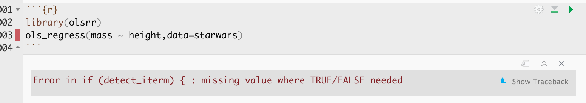</p>
<p></p><figcaption class="figure-caption">This is probably because you loaded the moderndive package</figcaption><p></p>
</figure>
</div>
</div>
</div>
<p>This is probably because you loaded the moderndive package. They do not play nicely together. Save your work, restart R and <strong>do not run any line that says library(moderndive)!</strong>.</p>


</section>
</section>

</main> <!-- /main -->
<script id="quarto-html-after-body" type="application/javascript">
window.document.addEventListener("DOMContentLoaded", function (event) {
  const toggleBodyColorMode = (bsSheetEl) => {
    const mode = bsSheetEl.getAttribute("data-mode");
    const bodyEl = window.document.querySelector("body");
    if (mode === "dark") {
      bodyEl.classList.add("quarto-dark");
      bodyEl.classList.remove("quarto-light");
    } else {
      bodyEl.classList.add("quarto-light");
      bodyEl.classList.remove("quarto-dark");
    }
  }
  const toggleBodyColorPrimary = () => {
    const bsSheetEl = window.document.querySelector("link#quarto-bootstrap");
    if (bsSheetEl) {
      toggleBodyColorMode(bsSheetEl);
    }
  }
  toggleBodyColorPrimary();  
  const icon = "";
  const anchorJS = new window.AnchorJS();
  anchorJS.options = {
    placement: 'right',
    icon: icon
  };
  anchorJS.add('.anchored');
  const clipboard = new window.ClipboardJS('.code-copy-button', {
    target: function(trigger) {
      return trigger.previousElementSibling;
    }
  });
  clipboard.on('success', function(e) {
    // button target
    const button = e.trigger;
    // don't keep focus
    button.blur();
    // flash "checked"
    button.classList.add('code-copy-button-checked');
    var currentTitle = button.getAttribute("title");
    button.setAttribute("title", "Copied!");
    let tooltip;
    if (window.bootstrap) {
      button.setAttribute("data-bs-toggle", "tooltip");
      button.setAttribute("data-bs-placement", "left");
      button.setAttribute("data-bs-title", "Copied!");
      tooltip = new bootstrap.Tooltip(button, 
        { trigger: "manual", 
          customClass: "code-copy-button-tooltip",
          offset: [0, -8]});
      tooltip.show();    
    }
    setTimeout(function() {
      if (tooltip) {
        tooltip.hide();
        button.removeAttribute("data-bs-title");
        button.removeAttribute("data-bs-toggle");
        button.removeAttribute("data-bs-placement");
      }
      button.setAttribute("title", currentTitle);
      button.classList.remove('code-copy-button-checked');
    }, 1000);
    // clear code selection
    e.clearSelection();
  });
  function tippyHover(el, contentFn) {
    const config = {
      allowHTML: true,
      content: contentFn,
      maxWidth: 500,
      delay: 100,
      arrow: false,
      appendTo: function(el) {
          return el.parentElement;
      },
      interactive: true,
      interactiveBorder: 10,
      theme: 'quarto',
      placement: 'bottom-start'
    };
    window.tippy(el, config); 
  }
  const noterefs = window.document.querySelectorAll('a[role="doc-noteref"]');
  for (var i=0; i<noterefs.length; i++) {
    const ref = noterefs[i];
    tippyHover(ref, function() {
      // use id or data attribute instead here
      let href = ref.getAttribute('data-footnote-href') || ref.getAttribute('href');
      try { href = new URL(href).hash; } catch {}
      const id = href.replace(/^#\/?/, "");
      const note = window.document.getElementById(id);
      return note.innerHTML;
    });
  }
  const findCites = (el) => {
    const parentEl = el.parentElement;
    if (parentEl) {
      const cites = parentEl.dataset.cites;
      if (cites) {
        return {
          el,
          cites: cites.split(' ')
        };
      } else {
        return findCites(el.parentElement)
      }
    } else {
      return undefined;
    }
  };
  var bibliorefs = window.document.querySelectorAll('a[role="doc-biblioref"]');
  for (var i=0; i<bibliorefs.length; i++) {
    const ref = bibliorefs[i];
    const citeInfo = findCites(ref);
    if (citeInfo) {
      tippyHover(citeInfo.el, function() {
        var popup = window.document.createElement('div');
        citeInfo.cites.forEach(function(cite) {
          var citeDiv = window.document.createElement('div');
          citeDiv.classList.add('hanging-indent');
          citeDiv.classList.add('csl-entry');
          var biblioDiv = window.document.getElementById('ref-' + cite);
          if (biblioDiv) {
            citeDiv.innerHTML = biblioDiv.innerHTML;
          }
          popup.appendChild(citeDiv);
        });
        return popup.innerHTML;
      });
    }
  }
});
</script>
</div> <!-- /content -->


</body></html>